B3 · Fable 5.2 · attempt DZtXLYX
Batch fb1 · job fb1_B_EXP22004363_run1_221202_claude-fable-5-2 · trial B_EXP22004363_run1_221202__DZtXLYX. Long tool outputs are cut at 6,000 characters.
0.43
47.0
$15.50
713
129
cd /task; ls -la inputs | head; cat inputs/plan.md; echo; head -5 inputs/plate_layout.csv; wc -l inputs/plate_layout.csv; ls inputs/raw | wc -l; ls -la outputs; ls /root/.claude/projects/-task/memory/ 2>/dev/null
total 52 dr-xr-xr-x 3 root root 4096 Nov 5 21:59 . drwxr-xr-x 4 root root 4096 Nov 5 22:01 .. -r--r--r-- 1 root root 6547 Nov 5 21:59 plan.md -r--r--r-- 1 root root 6889 Nov 5 21:59 plate_layout.csv dr-xr-xr-x 2 root root 4096 Nov 5 21:59 raw -r--r--r-- 1 root root 20898 Nov 5 21:59 start.flow # EXP22004363 | 2022.11.28 Caspase Activity Assay Dev: Progranulin Conditioned Media This is the notebook entry text up to flow acquisition on 2022-12-02. People's names have been removed. - **Tags:** Target PGRN; Technology Assay development; Model System Cell based; Methodology Flow; Cell Type H4. - **Plate maps:** shown below as grids (rows A-H, columns 1-12). Empty cells are blank. - **Highlight colours:** the notebook encodes conditioned-media treatment by highlight colour. The colours are listed at the end. ## DAY 2022-11-28 ### Purpose To determine if progranulin conditioned media can restore wild-type levels of caspase activity in H4 GRN KO cells. ### Rationale Previous literature evidence suggests that applying exogenous progranulin to cells can restore molecular phenotypes in progranulin deficient lines. Our previous experiment with caspase activity on H4 GRN WT and KO cells showed that GRN KO lines had increased caspase activity. This difference was enhanced after campothesin challenge in both GRN WT and KO cells ( ). In this experiment, we will determine if applying conditioned media from WT cell lines onto KO lines can reduce caspase activity closer to WT levels. ### Materials - H4 WT cells - H4 PGRN KO E1 - H4 PGRN KO E3 - H4 media (DMEM + 10% FBS) - CellEvent Caspase-3/7 Green Flow Cytometry Assay Kit - Camptothecin - Plate 10k cells according to plate: | | 1 | 2 | 3 | 4 | 5 | 6 | 7 | 8 | 9 | 10 | 11 | 12 | |---|---|---|---|---|---|---|---|---|---|---|---|---| | A | WT | WT | WT | WT | WT | WT | WT | WT | WT | | | | | B | WT | WT | WT | WT | WT | WT | WT | WT | WT | | | | | C | WT | WT | WT | WT | WT | WT | WT | WT | WT | | | | | D | WT | WT | WT | WT | WT | WT | WT | WT | WT | | | | | E | E1 | E1 | E1 | E1 | E1 | E1 | E1 | E1 | E1 | | | | | F | E3 | E3 | E3 | E3 | E3 | E3 | E3 | E3 | E3 | | | | | G | | | | | | | | | Serum free media | | | | | H | 24 hr | | | | 48 hr | | | | | | | | - WT-330K for 33 wells-resuspend in 3300mL - E1 and E3-90K for 9 wells-resuspend in 900uL ## DAY 2022-11-29 - Harvest media after 24 and 48 hrs and place in 4 C until ready to use. ## DAY 2022-11-30 - Plate cells according to the following plate map and incubate at 37C: | | 1 | 2 | 3 | 4 | 5 | 6 | 7 | 8 | 9 | 10 | 11 | 12 | |---|---|---|---|---|---|---|---|---|---|---|---|---| | A | WT | WT | WT | WT | WT | WT | WT | WT | WT | WT | WT | WT | | B | E1 | E1 | E1 | E1 | E1 | E1 | E1 | E1 | E1 | E1 | E1 | E1 | | C | E3 | E3 | E3 | E3 | E3 | E3 | E3 | E3 | E3 | E3 | E3 | E3 | | D | WT | WT | WT | WT | WT | WT | WT | WT | WT | WT | WT | WT | | E | E1 | E1 | E1 | E1 | E1 | E1 | E1 | E1 | E1 | E1 | E1 | E1 | | F | E3 | E3 | E3 | E3 | E3 | E3 | E3 | E3 | E3 | E3 | E3 | E3 | | G | WT no treatment | WT no treatment | E3 no treatment | E3 no treatment | | | | | | | | | | H | E1 no treatment | E1 no treatment | WT (flow control) | WT (flow control) | | | | | | | | | ## DAY 2022-12-01 - Gently wash cells with DMEM. - Replace media with conditioned media collected previously. Conditioned media added at 9AM ## DAY 2022-12-02 - After 24 hours, add campthothesin according to the plate map: | | 1 | 2 | 3 | 4 | 5 | 6 | 7 | 8 | 9 | 10 | 11 | 12 | |---|---|---|---|---|---|---|---|---|---|---|---|---| | A | WT 10uM | WT 5uM | WT 2uM | WT DMSO | WT 10uM | WT 5uM | WT 2uM | WT DMSO | WT 10uM | WT 5uM | WT 2uM | WT DMSO | | B | E1 10uM | E1 5uM | E1 2uM | E1 DMSO | E1 10uM | E1 5uM | E1 2uM | E1 DMSO | E1 10uM | E1 5uM | E1 2uM | E1 DMSO | | C | E3 10uM | E3 5uM | E3 2uM | E3 DMSO | E3 10uM | E3 5uM | E3 2uM | E3 DMSO | E3 10uM | E3 5uM | E3 2uM | E3 DMSO | | D | WT 10uM | WT 5uM | WT 2uM | WT DMSO | WT 10uM | WT 5uM | WT 2uM | WT DMSO | WT 10uM | WT 5uM | WT 2uM | WT DMSO | | E | E1 10uM | E1 5uM | E1 2uM | E1 DMSO | E1 10uM | E1 5uM | E1 2uM | E1 DMSO | E1 10uM | E1 5uM | E1 2uM | E1 DMSO | | F | E3 10uM | E3 5uM | E3 2uM | E3 DMSO | E3 10uM | E3 5uM | E3 2uM | E3 DMSO | E3 10uM | E3 5uM | E3 2uM | E3 DMSO | | G | WT no treatment (no stain) | WT no treatment | E3 no treatment | E3 no treatment | E1 no treatment | E1 no treatment | WT (caspase stain only) | WT (L/D stain only) | | | | | | H | | | | | | | | | | | | | - Blue highlight=treated with WT 24hr conditoned media - Green highlight= treated with WT 48hr conditioned media - No highlight= no conditioned media treatment - Incubate and run flow. - Aspirate media and wash with PBS - Add 150uL trypsin incubate for 5min - Add 75uL FBS and collect into 96w round bottom plate - spin down 200xg for 5min - Add 200uL of Cell Event Caspase 3/7 Detection reagent (1:1000) in flow staining buffer. Incubate for 30min at 37C - Prepare SYTOX AAdvanced Dead Cell Stain at 100uM concentration by adding 1000uL DMSO to stain. Mix well - During the final 5 minutes of 30min Caspase incubation add 2uL of the 100uM Dead Cell stain (final concentration of 1uM) - Analyze the samples without fixing. Flow cytometer settings: FSC-20; SSC-290; BL1 (caspase)-225, BL2 (AAddvanced Dead Cell Stain)-350 ## Plate-map cell colours (from the notebook's highlighting; the plain-text maps above drop colour) ### Plate map of 2022-11-28 - row A: WT [light cyan #C2EDF8] x8 (cols 1-8) | WT (col 9, no highlight) | - | - | - - row B: WT [light cyan #C2EDF8] x8 (cols 1-8) | WT (col 9, no highlight) | - | - | - - row C: WT [light cyan #C2EDF8] x8 (cols 1-8) | WT (col 9, no highlight) | - | - | - - row D: WT [light green #E8F9CF] x8 (cols 1-8) | WT (col 9, no highlight) | - | - | - - row E: E1 [light green #E8F9CF] x8 (cols 1-8) | E1 (col 9, no highlight) | - | - | - - row F: E3 [light green #E8F9CF] x8 (cols 1-8) | E3 (col 9, no highlight) | - | - | - - row G: cols 1-8 empty | Serum free media (co … [1,378 more characters not shown]
cd /task; cat inputs/plate_layout.csv | column -s, -t | sed -n 1,90p; head -c 3000 inputs/start.flow; which cu python3; ls -la inputs/raw | head -90
/bin/bash: line 1: column: command not found
- !workflow-item;5
channels: []
conditions: {}
current_view: null
metadata: {}
operation: !import;4
channels_list: []
conditions:
well: category
sample: category
cell_line: category
camptothecin: category
conditioned_media: category
events: null
ignore_v_bool: false
name_metadata: null
tubes:
- !tube;1
conditions:
well: 'A1'
sample: 'WT 10uM'
cell_line: 'WT'
camptothecin: '10uM'
conditioned_media: 'WT 24hr conditioned media'
file: '/task/inputs/raw/Caspase-assay-2-mlk_caspase_Group_A1.fcs'
- !tube;1
conditions:
well: 'A2'
sample: 'WT 5uM'
cell_line: 'WT'
camptothecin: '5uM'
conditioned_media: 'WT 24hr conditioned media'
file: '/task/inputs/raw/Caspase-assay-2-mlk_caspase_Group_A2.fcs'
- !tube;1
conditions:
well: 'A3'
sample: 'WT 2uM'
cell_line: 'WT'
camptothecin: '2uM'
conditioned_media: 'WT 24hr conditioned media'
file: '/task/inputs/raw/Caspase-assay-2-mlk_caspase_Group_A3.fcs'
- !tube;1
conditions:
well: 'A4'
sample: 'WT DMSO'
cell_line: 'WT'
camptothecin: 'DMSO'
conditioned_media: 'WT 24hr conditioned media'
file: '/task/inputs/raw/Caspase-assay-2-mlk_caspase_Group_A4.fcs'
- !tube;1
conditions:
well: 'A5'
sample: 'WT 10uM'
cell_line: 'WT'
camptothecin: '10uM'
conditioned_media: 'WT 48hr conditioned media'
file: '/task/inputs/raw/Caspase-assay-2-mlk_caspase_Group_A5.fcs'
- !tube;1
conditions:
well: 'A6'
sample: 'WT 5uM'
cell_line: 'WT'
camptothecin: '5uM'
conditioned_media: 'WT 48hr conditioned media'
file: '/task/inputs/raw/Caspase-assay-2-mlk_caspase_Group_A6.fcs'
- !tube;1
conditions:
well: 'A7'
sample: 'WT 2uM'
cell_line: 'WT'
camptothecin: '2uM'
conditioned_media: 'WT 48hr conditioned media'
file: '/task/inputs/raw/Caspase-assay-2-mlk_caspase_Group_A7.fcs'
- !tube;1
conditions:
well: 'A8'
sample: 'WT DMSO'
cell_line: 'WT'
camptothecin: 'DMSO'
conditioned_media: 'WT 48hr conditioned media'
file: '/task/inputs/raw/Caspase-assay-2-mlk_caspase_Group_A8.fcs'
- !tube;1
conditions:
well: 'A9'
sample: 'WT 10uM'
cell_line: 'WT'
camptothecin: '10uM'
conditioned_media: 'no conditioned media'
file: '/task/inputs/raw/Caspase-assay-2-mlk_caspase_Group_A9.fcs'
- !tube;1
conditions:
well: 'A10'
sample: 'WT 5uM'
cell_line: 'WT'
camptothecin: '5uM'
conditioned_media: 'no conditioned media'
file: '/task/inputs/raw/Caspase-assay-2-mlk_caspase_Group_A10.fcs'
- !tube;1
conditions:
well: 'A11'
sample: 'WT 2uM'
cell_/usr/local/bin/cu
/usr/bin/python3
total 113516
dr-xr-xr-x 2 root root 4096 Nov 5 21:59 .
dr-xr-xr-x 3 root root 4096 Nov 5 21:59 ..
-r--r--r-- 1 root root 1637256 Nov 5 21:59 Caspase-assay-2-mlk_caspase_Group_A1.fcs
-r--r--r-- 1 root root 2207696 Nov 5 21:59 Caspase-assay-2-mlk_caspase_Group_A10.fcs
-r--r--r-- 1 root root 2263752 Nov 5 21:59 Caspase-assay-2-mlk_caspase_Group_A11.fcs
-r--r--r-- 1 root root 1605848 Nov 5 21:59 Caspase-assay-2-mlk_caspase_Group_A12.fcs
-r--r--r-- 1 root root 2096988 Nov 5 21:59 Caspase-assay-2-mlk_caspase_Group_A2.fcs
-r--r--r-- 1 root root 2469724 Nov 5 21:59 Caspase-assay-2-mlk_caspase_Group_A3.fcs
-r--r--r-- 1 root root 1728308 Nov 5 21:59 Caspase-assay-2-mlk_caspase_Group_A4.fcs
-r--r--r-- 1 root root 1826276 Nov 5 21:59 Caspase-assay-2-mlk_caspase_Group_A5.fcs
-r--r--r-- 1 root root 1746612 Nov 5 21:59 Caspase-assay-2-mlk_caspase_Group_A6.fcs
-r--r--r-- 1 root root 1903340 Nov 5 21:59 Caspase-assay-2-mlk_caspase_Group_A7.fcs
-r--r--r-- 1 root root 1197284 Nov 5 21:59 Caspase-assay-2-mlk_caspase_Group_A8.fcs
-r--r--r-- 1 root root 2089968 Nov 5 21:59 Caspase-assay-2-mlk_caspase_Group_A9.fcs
-r--r--r-- 1 root root 983564 Nov 5 21:59 Caspase-assay-2-mlk_caspase_Group_B1.fcs
-r--r--r-- 1 root root 2093296 Nov 5 21:59 Caspase-assay-2-mlk_caspase_Group_B10.fcs
-r--r--r-- 1 root root 2140460 Nov 5 21:59 Caspase-assay-2-mlk_caspase_Group_B11.fcs
-r--r--r-- 1 root root 1655560 Nov 5 21:59 Caspase-assay-2-mlk_caspase_Group_B12.fcs
-r--r--r-- 1 root root 1697004 Nov 5 21:59 Caspase-assay-2-mlk_caspase_Group_B2.fcs
-r--r--r-- 1 root root 2091684 Nov 5 21:59 Caspase-assay-2-mlk_caspase_Group_B3.fcs
-r--r--r-- 1 root root 1046380 Nov 5 21:59 Caspase-assay-2-mlk_caspase_Group_B4.fcs
-r--r--r-- 1 root root 936504 Nov 5 21:59 Caspase-assay-2-mlk_caspase_Group_B5.fcs
-r--r--r-- 1 root root 1656860 Nov 5 21:59 Caspase-assay-2-mlk_caspase_Group_B6.fcs
-r--r--r-- 1 root root 1849884 Nov 5 21:59 Caspase-assay-2-mlk_caspase_Group_B7.fcs
-r--r--r-- 1 root root 1371744 Nov 5 21:59 Caspase-assay-2-mlk_caspase_Group_B8.fcs
-r--r--r-- 1 root root 1797572 Nov 5 21:59 Caspase-assay-2-mlk_caspase_Group_B9.fcs
-r--r--r-- 1 root root 927612 Nov 5 21:59 Caspase-assay-2-mlk_caspase_Group_C1.fcs
-r--r--r-- 1 root root 829488 Nov 5 21:59 Caspase-assay-2-mlk_caspase_Group_C10.fcs
-r--r--r-- 1 root root 1040608 Nov 5 21:59 Caspase-assay-2-mlk_caspase_Group_C11.fcs
-r--r--r-- 1 root root 1209608 Nov 5 21:59 Caspase-assay-2-mlk_caspase_Group_C12.fcs
-r--r--r-- 1 root root 1331860 Nov 5 21:59 Caspase-assay-2-mlk_caspase_Group_C2.fcs
-r--r--r-- 1 root root 1105296 Nov 5 21:59 Caspase-assay-2-mlk_caspase_Group_C3.fcs
-r--r--r-- 1 root root 950076 Nov 5 21:59 Caspase-assay-2-mlk_caspase_Group_C4.fcs
-r--r--r-- 1 root root 982108 Nov 5 21:59 Caspase-assay-2-mlk_caspase_Group_C5.fcs
-r--r--r-- 1 root root 1137432 Nov 5 21:59 Caspase-assay-2-mlk_caspase_Group_C6.fcs
… [4,003 more characters not shown]cd /task; sed -n 60,81p inputs/plate_layout.csv; grep -n -v "^ - !tube\|^ conditions:\|^ \|^ file" inputs/start.flow | head -80; cu screenshot /tmp/screen.png
Caspase-assay-2-mlk_caspase_Group_E11.fcs,E11,E1 2uM,E1,2uM,no conditioned media
Caspase-assay-2-mlk_caspase_Group_E12.fcs,E12,E1 DMSO,E1,DMSO,no conditioned media
Caspase-assay-2-mlk_caspase_Group_F1.fcs,F1,E3 10uM,E3,10uM,WT 24hr conditioned media
Caspase-assay-2-mlk_caspase_Group_F2.fcs,F2,E3 5uM,E3,5uM,WT 24hr conditioned media
Caspase-assay-2-mlk_caspase_Group_F3.fcs,F3,E3 2uM,E3,2uM,WT 24hr conditioned media
Caspase-assay-2-mlk_caspase_Group_F4.fcs,F4,E3 DMSO,E3,DMSO,WT 24hr conditioned media
Caspase-assay-2-mlk_caspase_Group_F5.fcs,F5,E3 10uM,E3,10uM,WT 48hr conditioned media
Caspase-assay-2-mlk_caspase_Group_F6.fcs,F6,E3 5uM,E3,5uM,WT 48hr conditioned media
Caspase-assay-2-mlk_caspase_Group_F7.fcs,F7,E3 2uM,E3,2uM,WT 48hr conditioned media
Caspase-assay-2-mlk_caspase_Group_F8.fcs,F8,E3 DMSO,E3,DMSO,WT 48hr conditioned media
Caspase-assay-2-mlk_caspase_Group_F9.fcs,F9,E3 10uM,E3,10uM,no conditioned media
Caspase-assay-2-mlk_caspase_Group_F10.fcs,F10,E3 5uM,E3,5uM,no conditioned media
Caspase-assay-2-mlk_caspase_Group_F11.fcs,F11,E3 2uM,E3,2uM,no conditioned media
Caspase-assay-2-mlk_caspase_Group_F12.fcs,F12,E3 DMSO,E3,DMSO,no conditioned media
Caspase-assay-2-mlk_caspase_Group_G1.fcs,G1,WT no treatment (no stain),WT,no treatment,no conditioned media
Caspase-assay-2-mlk_caspase_Group_G2.fcs,G2,WT no treatment,WT,no treatment,no conditioned media
Caspase-assay-2-mlk_caspase_Group_G3.fcs,G3,E3 no treatment,E3,no treatment,no conditioned media
Caspase-assay-2-mlk_caspase_Group_G4.fcs,G4,E3 no treatment,E3,no treatment,no conditioned media
Caspase-assay-2-mlk_caspase_Group_G5.fcs,G5,E1 no treatment,E1,no treatment,no conditioned media
Caspase-assay-2-mlk_caspase_Group_G6.fcs,G6,E1 no treatment,E1,no treatment,no conditioned media
Caspase-assay-2-mlk_caspase_Group_G7.fcs,G7,WT (caspase stain only),WT,not stated,no conditioned media
Caspase-assay-2-mlk_caspase_Group_G8.fcs,G8,WT (L/D stain only),WT,not stated,no conditioned media
1:- !workflow-item;5
2: channels: []
3: conditions: {}
4: current_view: null
5: metadata: {}
6: operation: !import;4
7: channels_list: []
8: conditions:
9: well: category
10: sample: category
11: cell_line: category
12: camptothecin: category
13: conditioned_media: category
14: events: null
15: ignore_v_bool: false
16: name_metadata: null
17: tubes:
658: statistics: {}
659: views: []
/tmp/screen.png{
"file_path": "/tmp/screen.png"
}
cu click 916 493; sleep 1; cu click 90 75; sleep 2; cu screenshot /tmp/screen.png
{
"file_path": "/tmp/screen.png"
}/tmp/screen.png

cu click 1038 744; cu paste "/task/inputs/start.flow"; sleep 0.5; cu key Return; sleep 3; cu screenshot /tmp/screen.png
{
"file_path": "/tmp/screen.png"
}/tmp/screen.png

cu click 747 449; sleep 15; cu screenshot /tmp/screen.png
{
"file_path": "/tmp/screen.png"
}/tmp/screen.png

cu click 240 183; sleep 3; cu screenshot /tmp/screen.png
{
"file_path": "/tmp/screen.png"
}/tmp/screen.png

cu drag 210 809 210 420; sleep 1; cu click 22 853; sleep 0.5; cu screenshot /tmp/screen.png
{
"file_path": "/tmp/screen.png"
}/tmp/screen.png
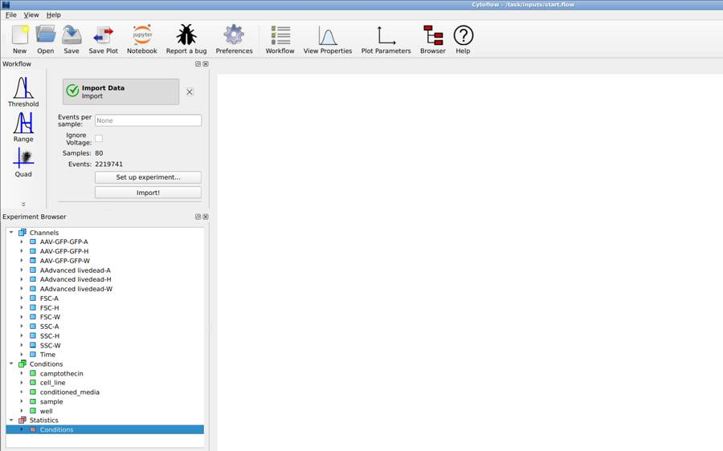
cu click 43 539; sleep 0.5; cu click 43 483; sleep 0.5; cu screenshot /tmp/screen.png
{
"file_path": "/tmp/screen.png"
}/tmp/screen.png
cd /opt/cytoflow/cytoflow-1.3.2/_internal 2>/dev/null && ls | grep -i -E "cyto|help" ; find / -name "channel_stat*" -not -path "*/proc/*" 2>/dev/null | head; python3 -c "import numpy, pandas, matplotlib; print(pandas.__version__, matplotlib.__version__)"
Exit code 1
cytoflow-1.3.2.dist-info
cytoflow.desktop
cytoflowgui
help.svg
/opt/cytoflow/cytoflow-1.3.2/_internal/cytoflowgui/op_plugins/images/channel_stat.svg
/opt/cytoflow/cytoflow-1.3.2/_internal/cytoflowgui/help/_images/channel_stat.svg
/opt/cytoflow/cytoflow-1.3.2/_internal/cytoflowgui/help/operations/channel_stat.html
Traceback (most recent call last):
File "<string>", line 1, in <module>
File "/usr/lib/python3/dist-packages/pandas/__init__.py", line 46, in <module>
from pandas.core.api import (
File "/usr/lib/python3/dist-packages/pandas/core/api.py", line 28, in <module>
from pandas.core.arrays import Categorical
File "/usr/lib/python3/dist-packages/pandas/core/arrays/__init__.py", line 1, in <module>
from pandas.core.arrays.arrow import ArrowExtensionArray
File "/usr/lib/python3/dist-packages/pandas/core/arrays/arrow/__init__.py", line 1, in <module>
from pandas.core.arrays.arrow.array import ArrowExtensionArray
File "/usr/lib/python3/dist-packages/pandas/core/arrays/arrow/array.py", line 51, in <module>
from pandas.core.arraylike import OpsMixin
File "/usr/lib/python3/dist-packages/pandas/core/arraylike.py", line 21, in <module>
from pandas.core.ops.common import unpack_zerodim_and_defer
File "/usr/lib/python3/dist-packages/pandas/core/ops/__init__.py", line 8, in <module>
from pandas.core.ops.array_ops import (
File "/usr/lib/python3/dist-packages/pandas/core/ops/array_ops.py", line 58, in <module>
from pandas.core.computation import expressions
File "/usr/lib/python3/dist-packages/pandas/core/computation/expressions.py", line 21, in <module>
from pandas.core.computation.check import NUMEXPR_INSTALLED
File "/usr/lib/python3/dist-packages/pandas/core/computation/check.py", line 5, in <module>
ne = import_optional_dependency("numexpr", errors="warn")
^^^^^^^^^^^^^^^^^^^^^^^^^^^^^^^^^^^^^^^^^^^^^^^^^^^^
File "/usr/lib/python3/dist-packages/pandas/compat/_optional.py", line 152, in import_optional_dependency
version = get_version(module_to_get)
^^^^^^^^^^^^^^^^^^^^^^^^^^
File "/usr/lib/python3/dist-packages/pandas/compat/_optional.py", line 77, in get_version
raise ImportError(f"Can't determine version for {module.__name__}")
ImportError: Can't determine version for numexprpython3 -c "import numpy, pandas, matplotlib; print(pandas.__version__, matplotlib.__version__)"; H=/opt/cytoflow/cytoflow-1.3.2/_internal/cytoflowgui/help; ls $H $H/operations $H/views; python3 - <<'E'
import re,html
for f in ['operations/channel_stat.html','views/table.html','operations/polygon.html','operations/hierarchy.html']:
t=open('/opt/cytoflow/cytoflow-1.3.2/_internal/cytoflowgui/help/'+f).read()
t=re.sub(r'<script.*?</script>|<style.*?</style>','',t,flags=re.S)
t=html.unescape(re.sub(r'<[^>]+>','',t))
t=re.sub(r'\n\s*\n+','\n',t)
print('=====',f); print(t[:2500])
E2.1.4 3.6.3
/opt/cytoflow/cytoflow-1.3.2/_internal/cytoflowgui/help:
_images
_sphinx_design_static
_static
genindex.html
objects.inv
operations
plot_directive
reference.html
views
/opt/cytoflow/cytoflow-1.3.2/_internal/cytoflowgui/help/operations:
autofluorescence-1.png
autofluorescence-1.py
autofluorescence.html
bead_calibration-1.png
bead_calibration-1.py
bead_calibration.html
binning-1.png
binning-1.py
binning.html
bleedthrough_linear-1.png
bleedthrough_linear-1.py
bleedthrough_linear.html
category.html
channel_stat.html
color_translation-1.png
color_translation-1.py
color_translation.html
density-1.png
density-1.py
density.html
flowclean-1.png
flowclean-1.py
flowclean.html
flowpeaks-1.py
flowpeaks-1_00.png
flowpeaks-1_01.png
flowpeaks.html
gaussian_1d-1.png
gaussian_1d-1.py
gaussian_1d.html
gaussian_2d-1.png
gaussian_2d-1.py
gaussian_2d.html
hierarchy.html
import_op.html
kmeans-1.png
kmeans-1.py
kmeans.html
mst.html
multi_channel_stat.html
pca.html
polygon-1.png
polygon-1.py
polygon.html
quad-1.png
quad-1.py
quad.html
range-1.png
range-1.py
range.html
range2d-1.png
range2d-1.py
range2d.html
ratio.html
register-1.png
register-1.py
register.html
som-1.png
som-1.py
som.html
tasbe-1.png
tasbe-1.py
tasbe-2.png
tasbe-2.py
tasbe-3.png
tasbe-3.py
tasbe-4.png
tasbe-4.py
tasbe.html
threshold-1.png
threshold-1.py
threshold.html
tsne-1.png
tsne-1.py
tsne.html
xform_stat.html
/opt/cytoflow/cytoflow-1.3.2/_internal/cytoflowgui/help/views:
bar_chart-1.png
bar_chart-1.py
bar_chart.html
density-1.png
density-1.py
density.html
export_fcs.html
histogram-1.png
histogram-1.py
histogram.html
histogram_2d-1.png
histogram_2d-1.py
histogram_2d.html
kde_1d-1.png
kde_1d-1.py
kde_1d.html
kde_2d-1.png
kde_2d-1.py
kde_2d.html
long_table-1.png
long_table-1.py
long_table.html
matrix-1.png
matrix-1.py
matrix.html
mst-1.png
mst-1.py
mst.html
parallel_coords-1.png
parallel_coords-1.py
parallel_coords.html
radviz-1.png
radviz-1.py
radviz.html
scatterplot-1.png
scatterplot-1.py
scatterplot.html
stats_1d-1.png
stats_1d-1.py
stats_1d.html
stats_2d-1.png
stats_2d-1.py
stats_2d.html
table-1.png
table-1.py
table.html
violin-1.png
violin-1.py
violin.html
===== operations/channel_stat.html
Channel statistic
Channel statistic
Apply a function to subsets of a data set, and add it as a statistic
to the experiment.
First, the module groups the data by the unique values of the variables
in By, then applies Function to the Channel in each group.
Name
The operation name. Becomes the new statistic’s name.
Channel
The channel to apply the function to.
Function
The function to compute on each group.
Subset
Only apply the function to a subset of the data. Useful if the function
is very slow.
===== views/table.html
Table
Table
Make a table out of a statistic. The table can then be exported.
Statistic
Which statistic to view.
Feature
The column in the statistic to view (often a channel name.)
Rows
Which variable to use for the rows
Subrows
Which variable to use for subrows.
Columns
Which variable to use for the columns.
Subcolumns
Which variable to use for the subcolumns.
Export
Export the table to a CSV file.
===== operations/polygon.html
Polygon Gate
Polygon Gate
Draw a polygon gate. To add vertices, use a single-click; to close the
polygon, click the first vertex a second time.
Name
The operation name. Used to name the new metadata field that’s created by
this module.
X Channel
The name of the channel on the gate’s X axis.
Y Channel
The name of the channel on the gate’s Y axis.
X Scale
The scale of the X axis for the interactive plot.
Y Scale
The scale of the Y axis for the interactive plot
Hue facet
Show different experimental conditions in different colors.
Subset
Show only a subset of the data.
===== operations/hierarchy.html
Hierarchical Gating
Hierarchical Gating
Convert a hierarchical (binary) gating strategy into a categorical condition.
Hierarchical gating strategies are quite common when doing manual gating.
For example, an 8-stain panel can separate monocytes into macrophages, B cells,
NK cells, NKT cells, T cells, DCs, and neutrophils – but then, because these
states are mutually exclusive, a reasonable question is “how much of each are there?”
Cytoflow can define these gates, but because it does not have any
concept of nested gates, plotting and analyzing this gating strategy can be
challenging.
The Hierarchical Gating operation converts a list of gates into a categorical
variable to enable straightforward analysis. For example, monocytes stained with CD64,
CD3 and CD19 can differentiate between macrophages and B cells. A user
defines a threshold gate to separate CD64+ cells (macrophages) from the
rest of the events, then they use a polygon gate to distinguish the CD19+/CD3-
cells (B cells) from everything else. The Hierarchical Gating operation can take these two gates
and create a categorical condition with the values Macrophages, B_Cells,
and Unknown.
The operation is set up by providing a list of conditions, values for those
conditions, and the category that condition indicates. Figuring out an
event’s category is done by evaluating the hierarchical gates in order.
For each event, the first condition/value pair is considered. If that event
has that value, its new category is set accordingly. If not, then the next
gate in the list is considered. If the event is a member in none of the gates,
it receives the category listed in the Default attribute.
Name
The name of the new condition that this operation creates.
Gates
The ordered list of gates that implement the gating hierarchy.
For each, you need to specify:
The name of the pre-existing condition
The value that the condition has to have to indicate membership
in this class.
The name of the new category.
Default
The name that unclassified events will have in the new categorical
condition.cu click 652 75; sleep 2; cu screenshot /tmp/screen.png
{
"file_path": "/tmp/screen.png"
}/tmp/screen.png
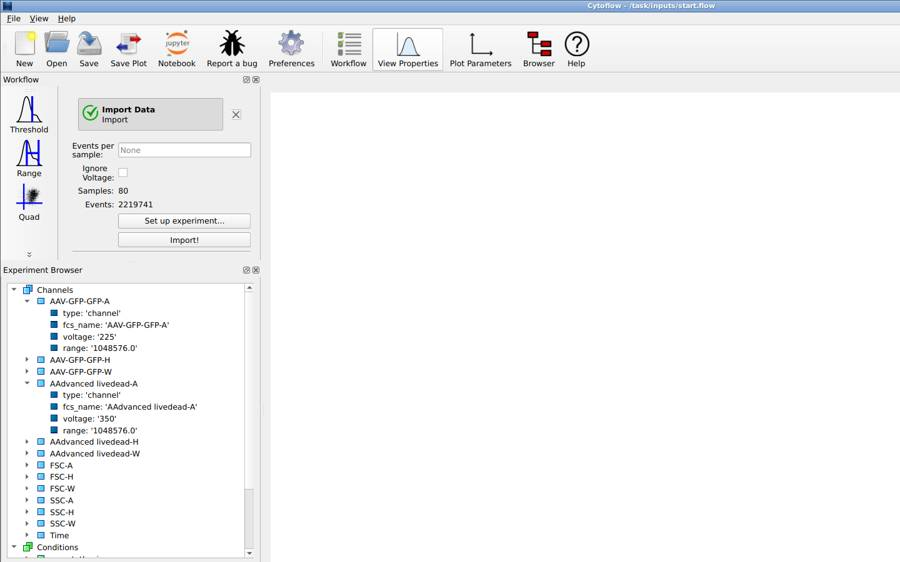
which xdotool wmctrl xwininfo xprop 2>&1; echo $DISPLAY; cu 2>&1 | head -20
/usr/bin/xdotool
/usr/bin/xwininfo
/usr/bin/xprop
:1
# Computer-use helper: the agent's only way to act on the screen.
# cu screenshot [path] -> PNG of the screen (default /tmp/screen.png); prints path
# cu click X Y [left|right|double]
# cu move X Y | cu drag X1 Y1 X2 Y2 | cu scroll X Y up|down [N]
# cu type "text" (keystrokes) | cu paste "text" (clipboard) | cu key KEYS (e.g. ctrl+s, Return)
# cu cursor -> current mouse position
export DISPLAY=${DISPLAY:-:1}
cmd=$1; shiftxdotool search --name "Cytoflow" | while read w; do xwininfo -id $w | grep -E "xwininfo|Absolute|Width|Height"; done
xwininfo: Window id: 0xe00004 "Qt Selection Owner for cytoflow" Absolute upper-left X: 0 Absolute upper-left Y: 0 Width: 3 Height: 3 xwininfo: Window id: 0xe00008 "cytoflow" Absolute upper-left X: 0 Absolute upper-left Y: 0 Width: 1 Height: 1 xwininfo: Window id: 0xe00006 "Cytoflow - /task/inputs/start.flow" Absolute upper-left X: 1 Absolute upper-left Y: 20 Width: 2082 Height: 1171
xdotool windowsize 0xe00006 1438 878; xdotool windowmove 0xe00006 0 0; sleep 2; xwininfo -id 0xe00006 | grep -E "Absolute|Width|Height"; cu screenshot /tmp/screen.png
{
"file_path": "/tmp/screen.png"
}Absolute upper-left X: 0 Absolute upper-left Y: 0 Width: 1438 Height: 878 /tmp/screen.png
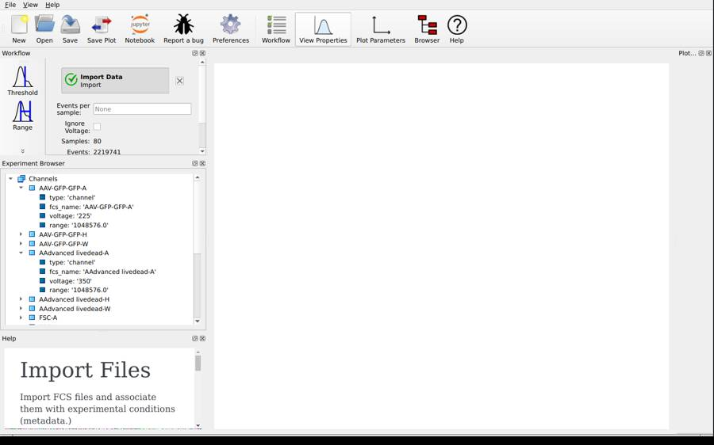
thinking
Channel mapping is settled: the stale "AAV-GFP" label is BL1 caspase at 225 V, and "AAdvanced livedead" is BL2 at 350 V. I resized the Cytoflow window and am now tidying the panels before plotting and gating.
cu click 408 684; sleep 0.5; cu click 408 330; sleep 0.5; cu drag 1362 490 1090 490; sleep 1; cu screenshot /tmp/screen.png
{
"file_path": "/tmp/screen.png"
}/tmp/screen.png
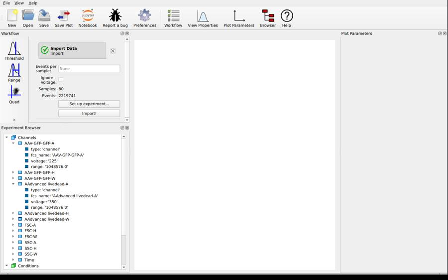
cu click 408 410; sleep 0.5; cu click 651 60; sleep 1.5; cu screenshot /tmp/screen.png
{
"file_path": "/tmp/screen.png"
}/tmp/screen.png
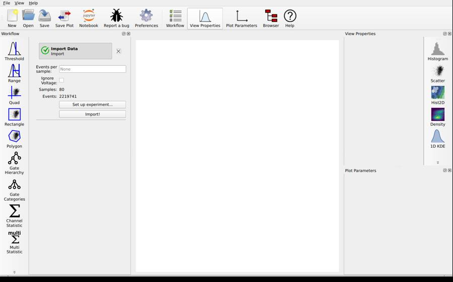
cu click 1391 370; sleep 2; cu screenshot /tmp/screen.png
{
"file_path": "/tmp/screen.png"
}/tmp/screen.png
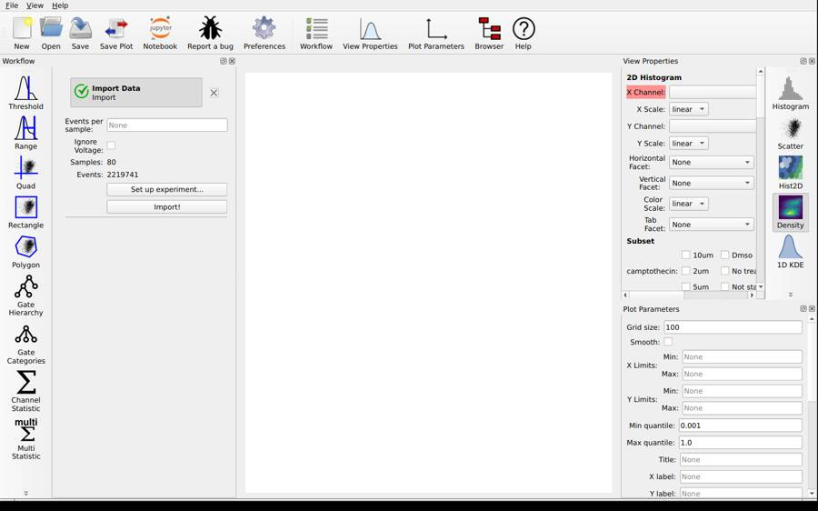
cu click 1429 544; sleep 1; cu click 1254 162; sleep 1; cu screenshot /tmp/screen.png
{
"file_path": "/tmp/screen.png"
}/tmp/screen.png
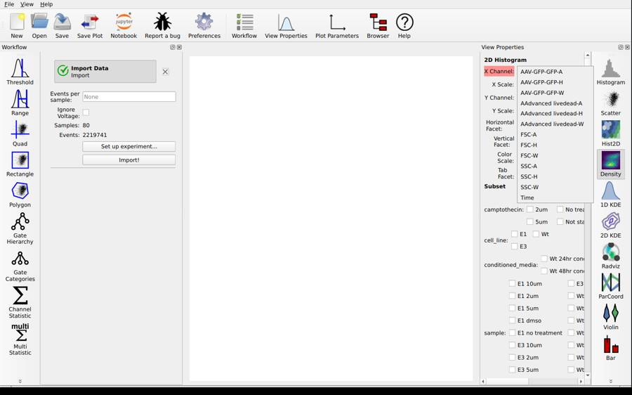
cu click 1204 306; sleep 1; cu click 1254 222; sleep 1; cu screenshot /tmp/screen.png
{
"file_path": "/tmp/screen.png"
}/tmp/screen.png
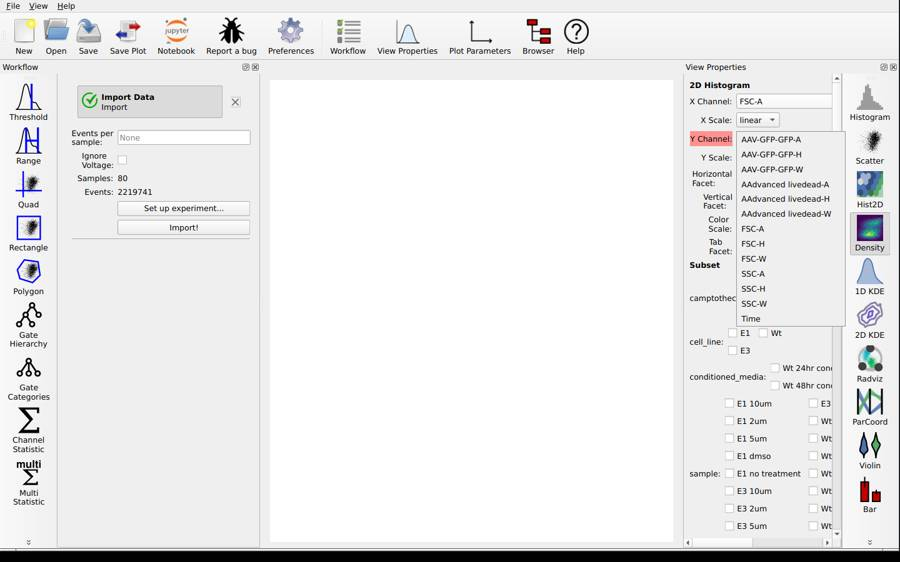
cu click 1204 438; sleep 8; cu screenshot /tmp/screen.png
{
"file_path": "/tmp/screen.png"
}/tmp/screen.png
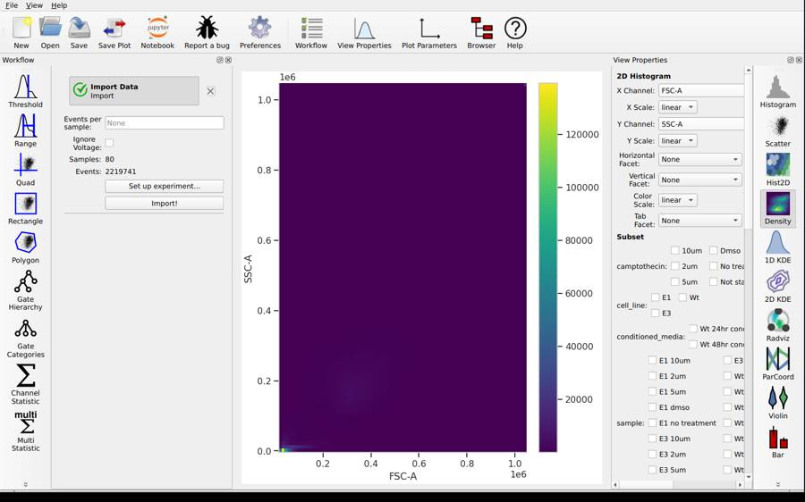
cu click 1212 359; sleep 1; cu screenshot /tmp/screen.png
{
"file_path": "/tmp/screen.png"
}/tmp/screen.png
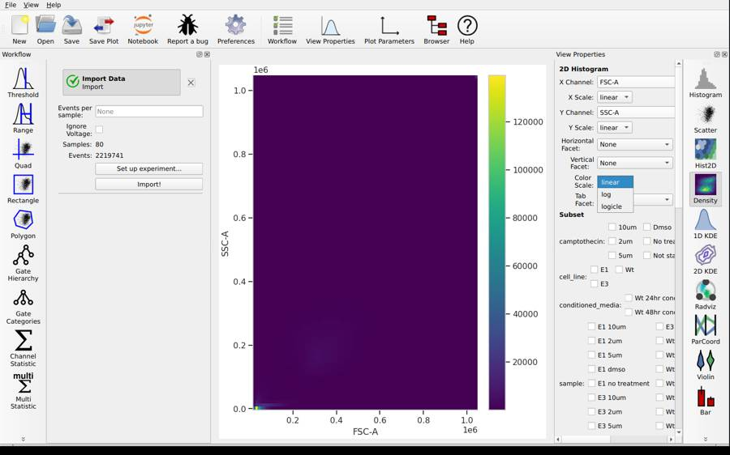
cu click 1197 385; sleep 8; cu screenshot /tmp/screen.png
{
"file_path": "/tmp/screen.png"
}/tmp/screen.png
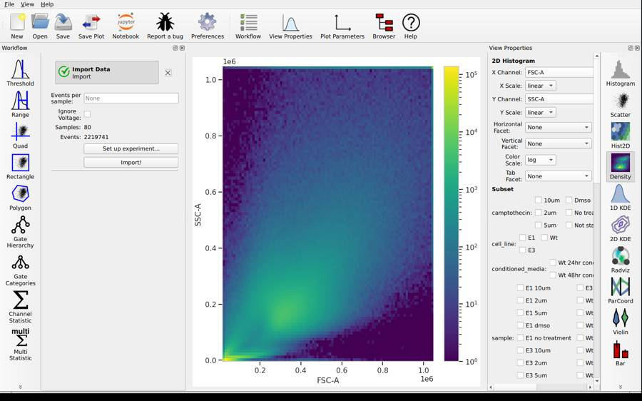
cu click 45 440; sleep 2; cu screenshot /tmp/screen.png
{
"file_path": "/tmp/screen.png"
}/tmp/screen.png
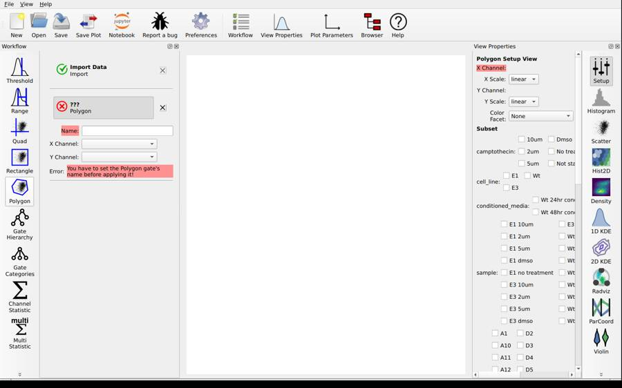
cu click 294 303; cu type "Cells"; cu key Tab; sleep 0.5; cu click 275 334; sleep 1; cu screenshot /tmp/screen.png
{
"file_path": "/tmp/screen.png"
}/tmp/screen.png
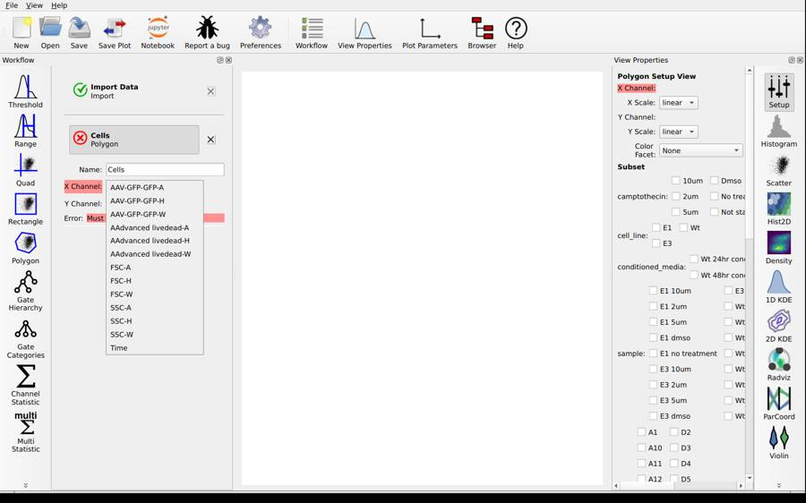
cu click 215 479; sleep 1; cu click 275 364; sleep 1; cu click 215 581; sleep 10; cu screenshot /tmp/screen.png
{
"file_path": "/tmp/screen.png"
}/tmp/screen.png
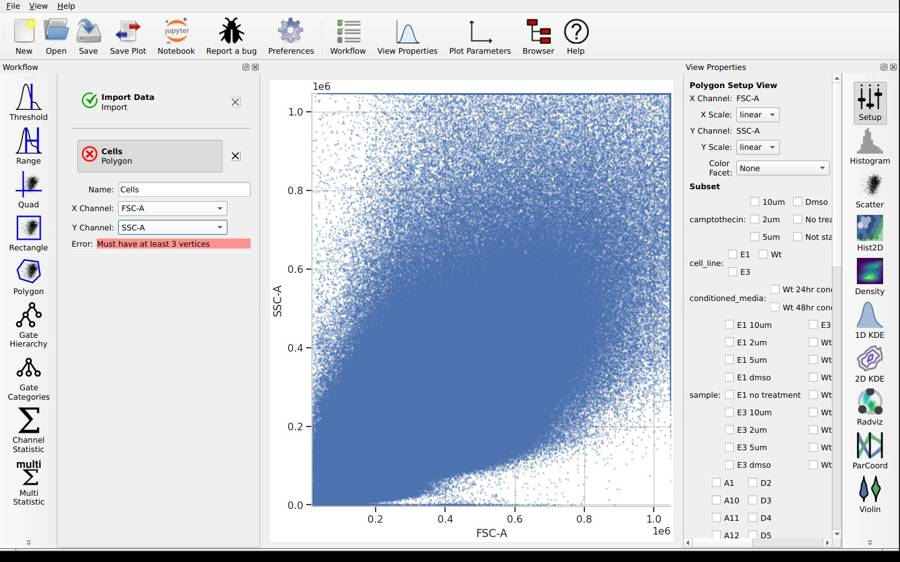
cu click 767 60; sleep 1.5; cu screenshot /tmp/screen.png
{
"file_path": "/tmp/screen.png"
}/tmp/screen.png
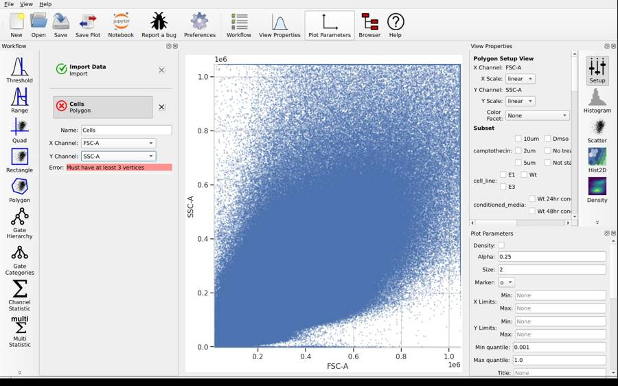
cu click 1168 572; sleep 10; cu screenshot /tmp/screen.png
{
"file_path": "/tmp/screen.png"
}/tmp/screen.png
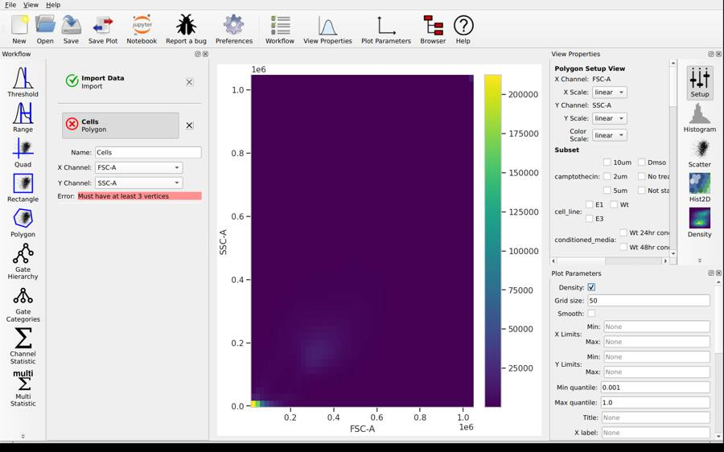
cu click 1212 269; sleep 1; cu click 1197 295; sleep 1; cu click 1286 598 double; cu key ctrl+a; cu type "100"; cu key Return; sleep 10; cu screenshot /tmp/screen.png
{
"file_path": "/tmp/screen.png"
}/tmp/screen.png
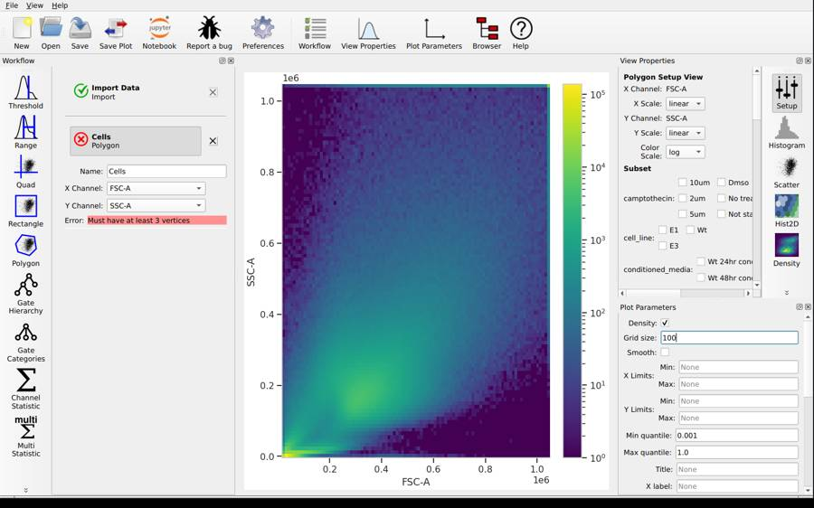
cu click 1207 323; sleep 8; cu screenshot /tmp/s1.png; cu click 1207 323; sleep 1; cu click 1276 323; sleep 8; cu screenshot /tmp/s2.png
{
"file_path": "/tmp/s1.png"
}{
"file_path": "/tmp/s2.png"
}/tmp/s1.png /tmp/s2.png
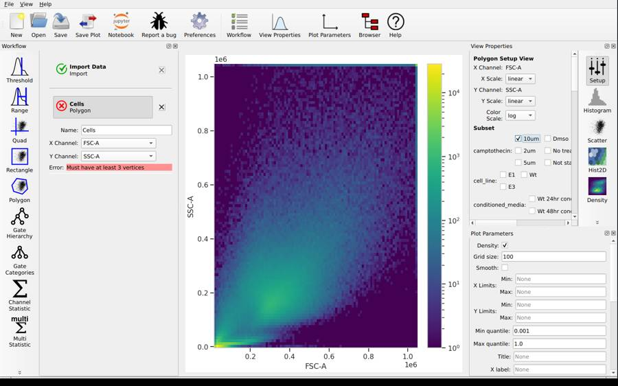
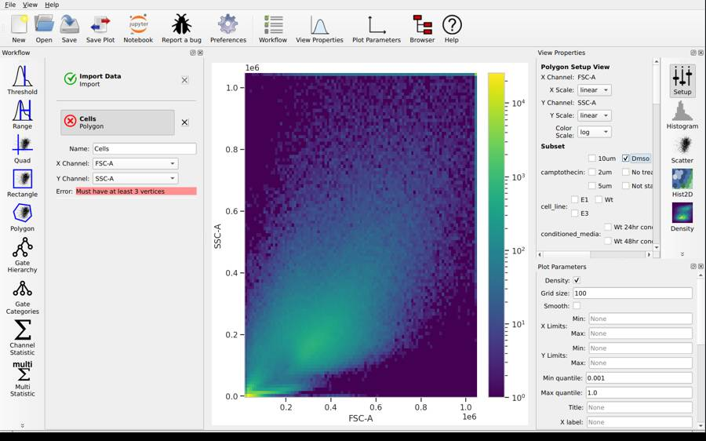
cu click 1276 323; sleep 10; for p in "552 784" "607 793" "721 784" "858 714" "941 588" "941 336" "767 336" "630 494" "552 670" "552 784"; do cu click $p; sleep 1.2; done; sleep 12; cu screenshot /tmp/screen.png
{
"file_path": "/tmp/screen.png"
}/tmp/screen.png
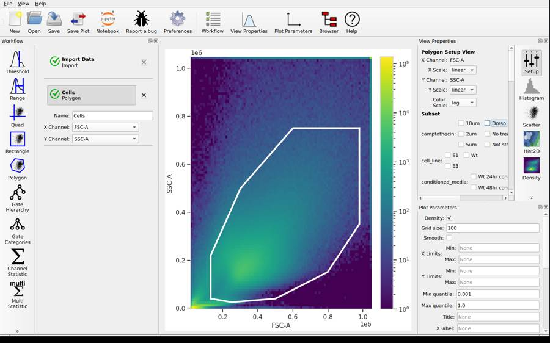
cu click 45 440; sleep 2; cu click 294 390; cu type "Singlets"; cu key Tab; sleep 0.5; cu screenshot /tmp/screen.png
{
"file_path": "/tmp/screen.png"
}/tmp/screen.png
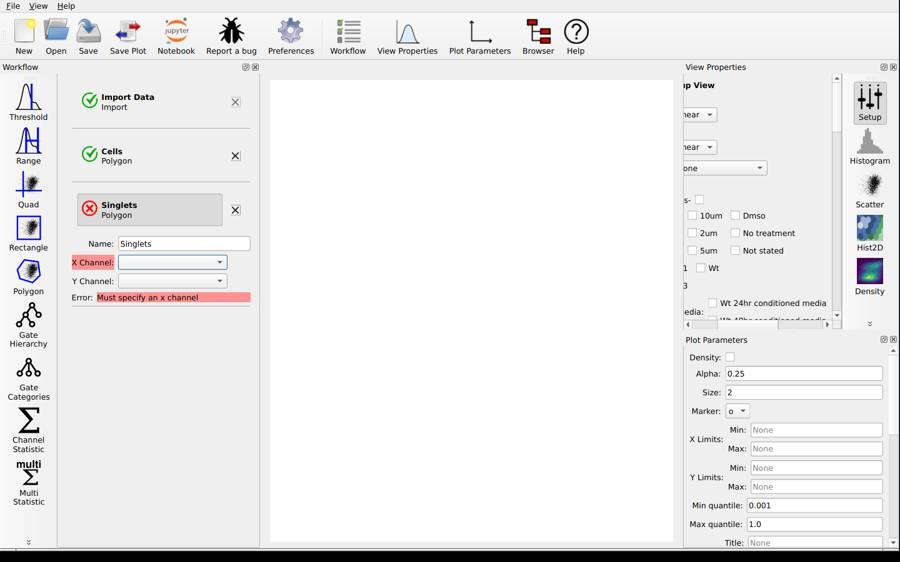
cu click 275 420; sleep 1; cu click 215 565; sleep 1; cu click 275 450; sleep 1; cu click 215 619; sleep 3; cu click 1168 572; sleep 8; cu drag 1170 519 1110 519; sleep 1; cu screenshot /tmp/screen.png
{
"file_path": "/tmp/screen.png"
}/tmp/screen.png
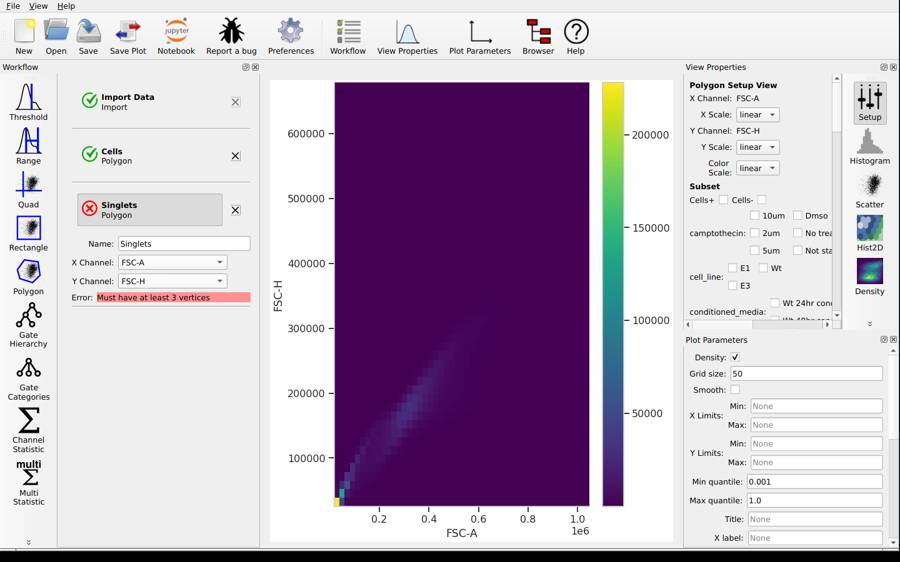
cu click 1157 320; sleep 1; cu click 1212 269; sleep 1; cu click 1197 295; sleep 1; cu click 1286 598 double; cu key ctrl+a; cu type "100"; cu key Return; sleep 12; cu screenshot /tmp/screen.png
{
"file_path": "/tmp/screen.png"
}/tmp/screen.png
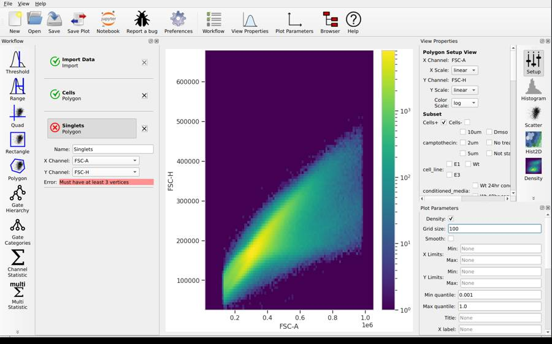
for p in "578 791" "949 380" "949 256" "740 464" "578 703" "578 791"; do cu click $p; sleep 1.2; done; sleep 12; cu screenshot /tmp/screen.png
{
"file_path": "/tmp/screen.png"
}/tmp/screen.png

cu click 20 10; sleep 1; cu screenshot /tmp/screen.png
{
"file_path": "/tmp/screen.png"
}/tmp/screen.png
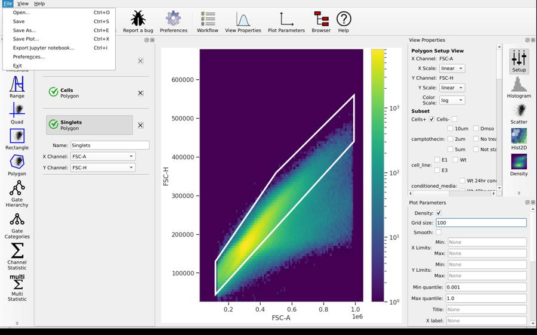
cu click 65 81; sleep 2; cu screenshot /tmp/screen.png
{
"file_path": "/tmp/screen.png"
}/tmp/screen.png
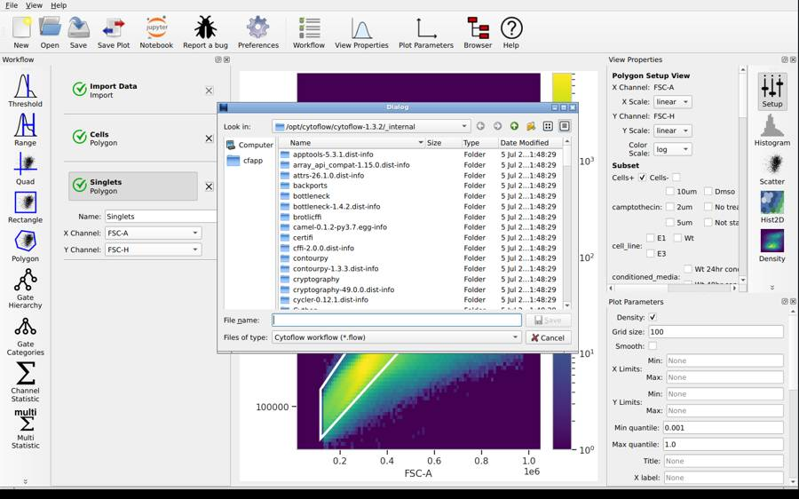
cu click 714 577; cu paste "/task/outputs/workflow.flow"; sleep 0.5; cu key Return; sleep 3; ls -la /task/outputs; cu screenshot /tmp/screen.png
{
"file_path": "/tmp/screen.png"
}total 84 drwxrwsrwx 2 agent task 4096 Nov 10 18:55 . drwxr-xr-x 4 root root 4096 Nov 5 22:01 .. -rw-rw-r-- 1 cfapp task 77169 Nov 10 18:55 workflow.flow /tmp/screen.png
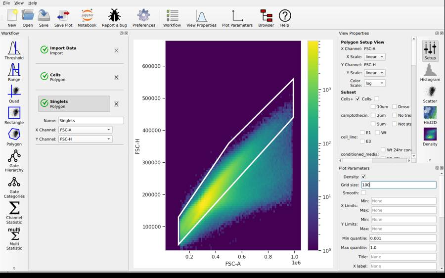
cu click 1429 544; sleep 1; cu click 1391 440; sleep 2; cu screenshot /tmp/screen.png
{
"file_path": "/tmp/screen.png"
}/tmp/screen.png
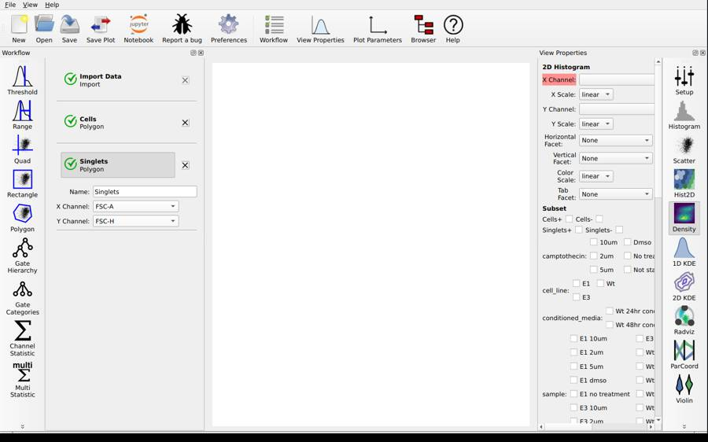
cu click 1157 446; sleep 0.5; cu click 1177 468; sleep 0.5; cu click 1254 162; sleep 1; cu click 1234 163; sleep 1; cu click 1212 192; sleep 1; cu click 1206 242; sleep 1; cu click 1254 222; sleep 1; cu click 1256 295; sleep 1; cu click 1212 252; sleep 1; cu click 1206 302; sleep 1; cu click 1212 359; sleep 1; cu click 1197 385; sleep 12; cu screenshot /tmp/screen.png
{
"file_path": "/tmp/screen.png"
}/tmp/screen.png
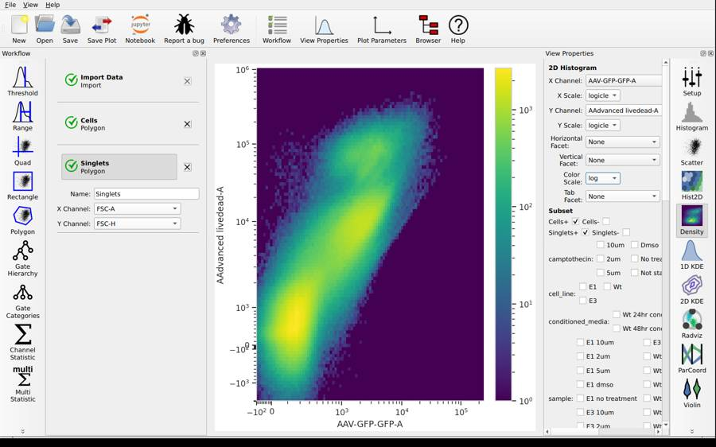
cu drag 1090 490 880 490; sleep 2; cu scroll 1200 700 down 10; sleep 1; cu screenshot /tmp/screen.png
{
"file_path": "/tmp/screen.png"
}/tmp/screen.png
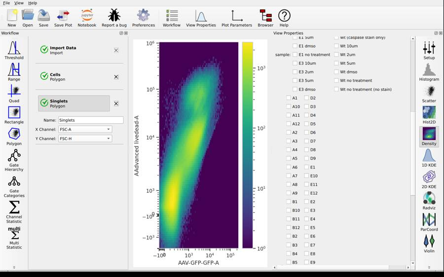
thinking
Singlet gating looks sensible, with live, caspase-high and dead clusters separating cleanly. Next I'm checking the stain controls (G1, G7, G8) to set thresholds and confirm they behave as labelled.
cu scroll 1100 400 up 20; sleep 1; cu screenshot /tmp/screen.png
{
"file_path": "/tmp/screen.png"
}/tmp/screen.png
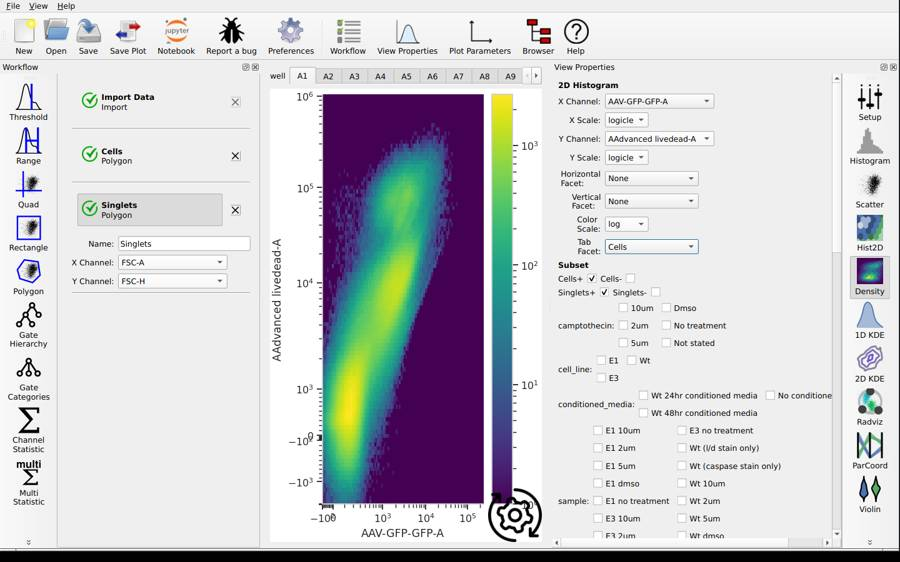
sleep 8; cu screenshot /tmp/screen.png
{
"file_path": "/tmp/screen.png"
}/tmp/screen.png
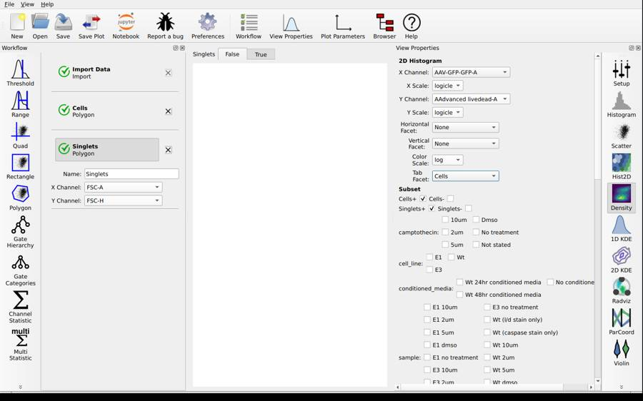
cu click 1066 521; sleep 0.5; cu click 1066 549; sleep 0.5; cu click 1042 395; sleep 1; cu screenshot /tmp/screen.png
{
"file_path": "/tmp/screen.png"
}/tmp/screen.png
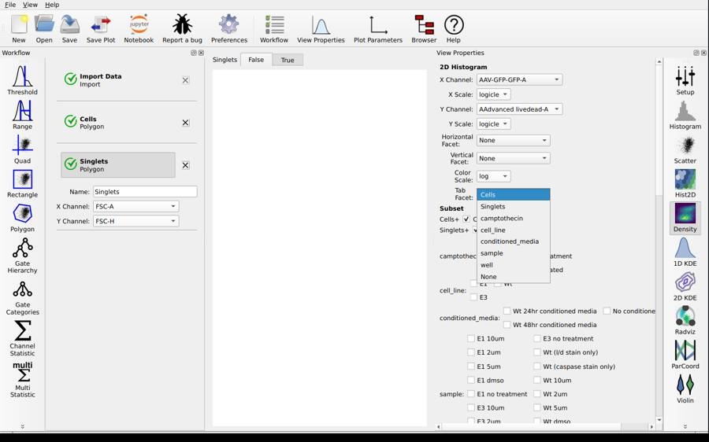
cu click 988 539; sleep 12; cu screenshot /tmp/screen.png
{
"file_path": "/tmp/screen.png"
}/tmp/screen.png
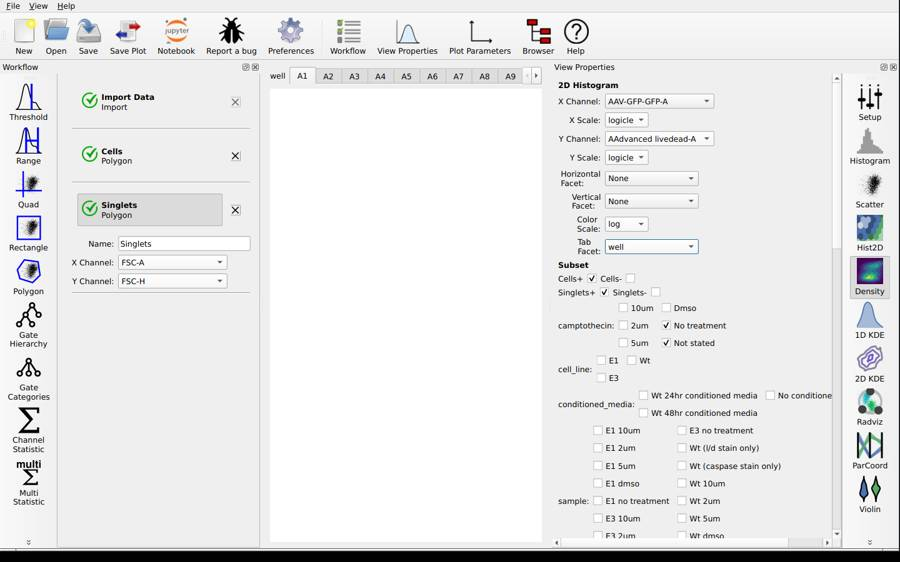
cu click 1042 395; sleep 1; cu click 998 515; sleep 10; cu drag 880 490 1000 490; sleep 3; cu screenshot /tmp/screen.png
{
"file_path": "/tmp/screen.png"
}/tmp/screen.png
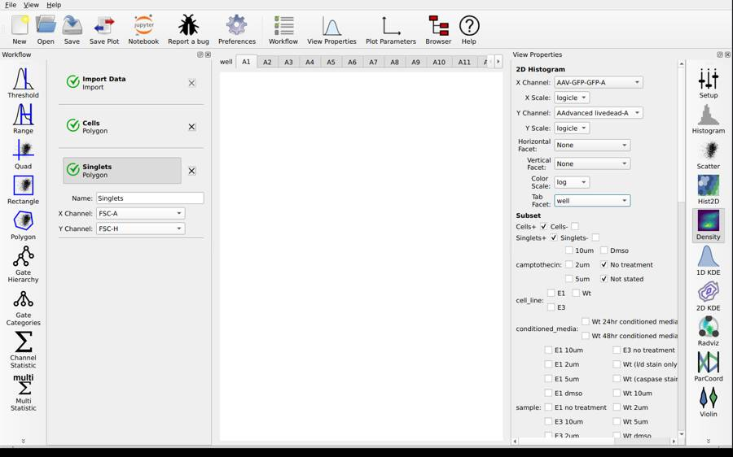
cu click 1162 395; sleep 1; cu screenshot /tmp/screen.png
{
"file_path": "/tmp/screen.png"
}/tmp/screen.png
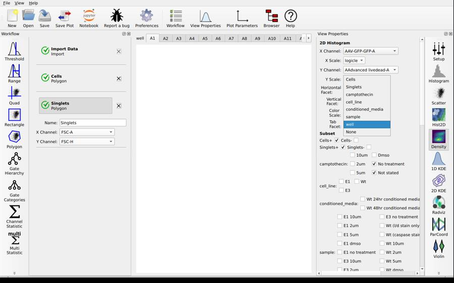
cu click 1119 371; sleep 12; cu screenshot /tmp/screen.png
{
"file_path": "/tmp/screen.png"
}/tmp/screen.png
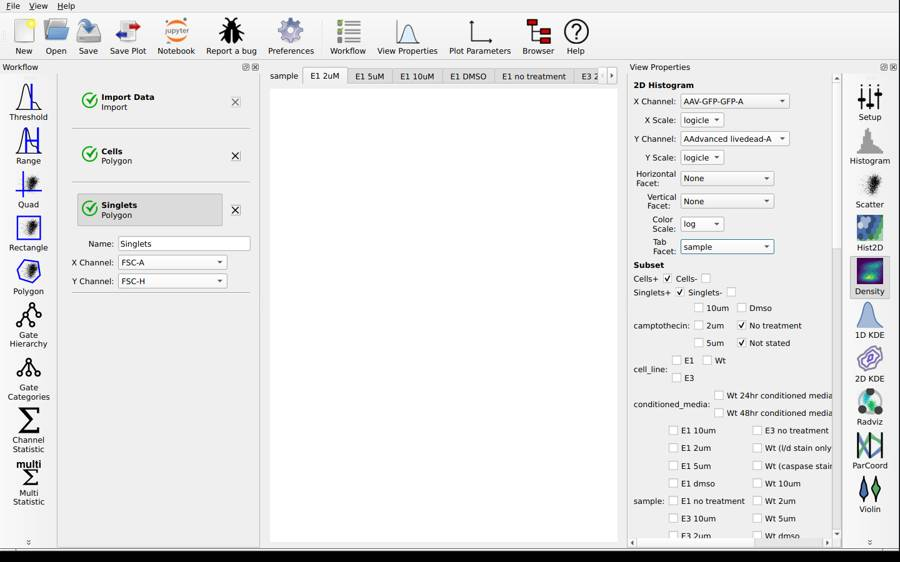
cu click 853 122; sleep 6; cu screenshot /tmp/screen.png
{
"file_path": "/tmp/screen.png"
}/tmp/screen.png
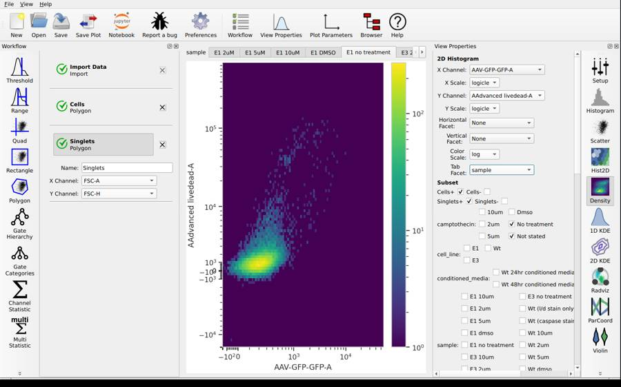
for i in 1 2 3 4 5; do cu key Right; sleep 0.5; done; sleep 5; cu screenshot /tmp/screen.png
{
"file_path": "/tmp/screen.png"
}/tmp/screen.png
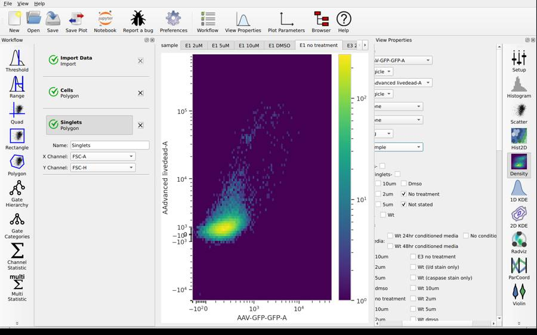
for i in 1 2 3 4 5 6; do cu key Left; sleep 0.3; done; cu click 1162 395; sleep 1; cu screenshot /tmp/screen.png
{
"file_path": "/tmp/screen.png"
}/tmp/screen.png
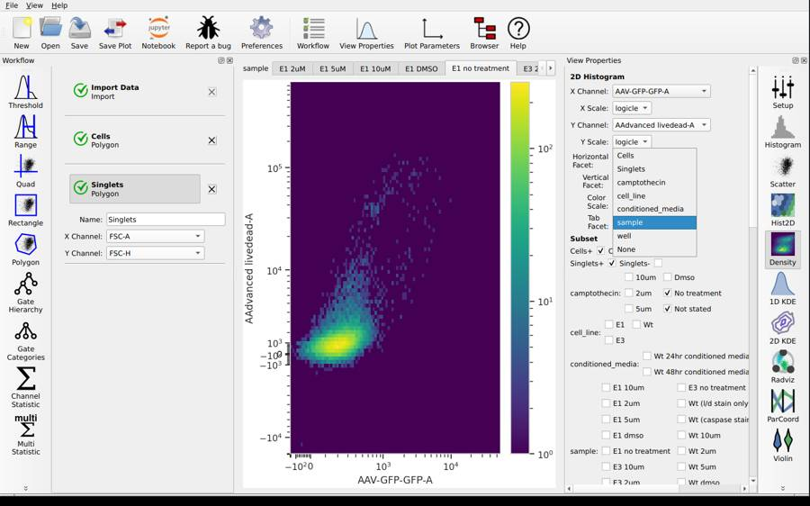
cu click 1113 443; sleep 2; cu click 1187 521; sleep 0.5; cu click 1187 549; sleep 0.5; cu click 1212 717; sleep 10; cu screenshot /tmp/c_ld.png; cu click 1212 717; sleep 0.5; cu click 1212 746; sleep 10; cu screenshot /tmp/c_casp.png
{
"file_path": "/tmp/c_ld.png"
}{
"file_path": "/tmp/c_casp.png"
}/tmp/c_ld.png /tmp/c_casp.png
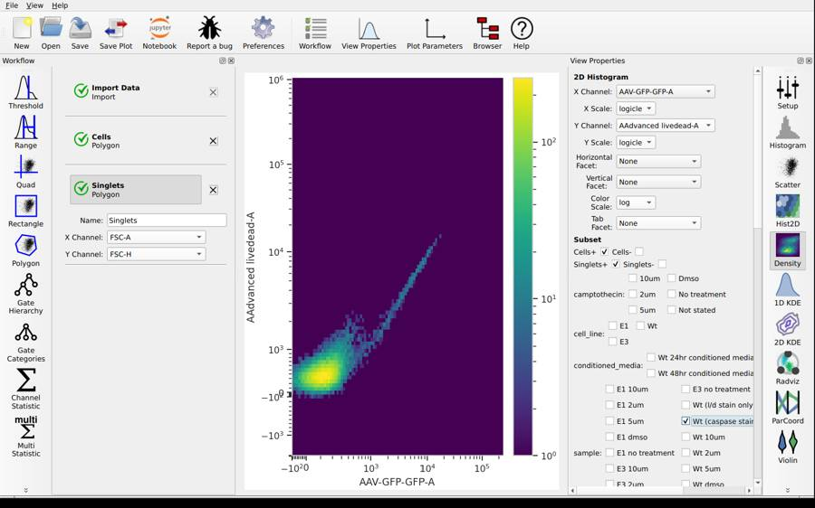
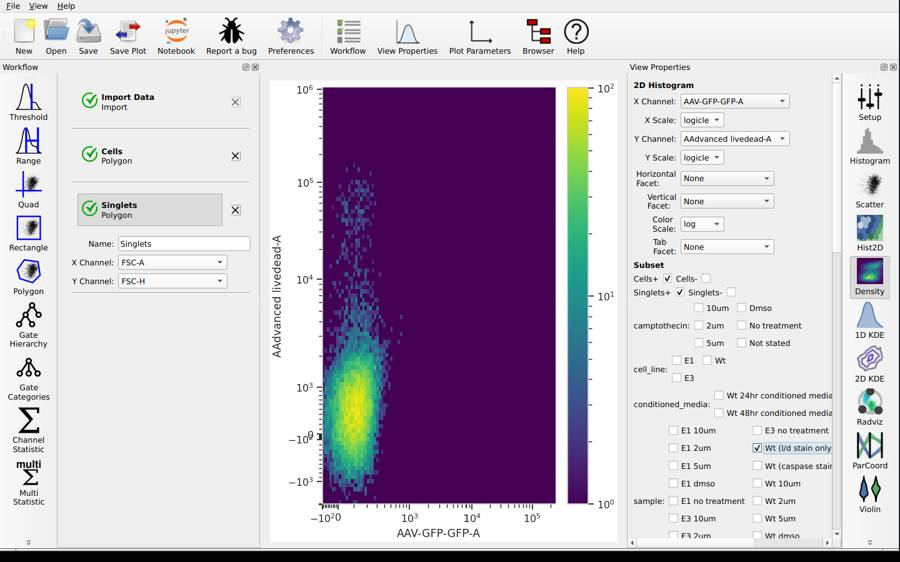
thinking
Control wells look as labelled, with the caspase-only well bleeding about 1:1 into the BL2 dead-cell channel, which matters for placing the live gate. Next I'll check the unstained and fully-stained untreated wells.
cu click 1212 746; sleep 0.5; cu scroll 1300 600 down 5; sleep 1; cu screenshot /tmp/screen.png
{
"file_path": "/tmp/screen.png"
}/tmp/screen.png
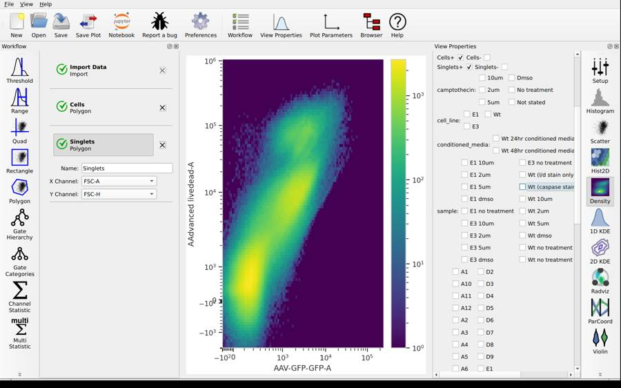
cu click 1212 602; sleep 10; cu screenshot /tmp/c_unst.png; cu click 1212 602; sleep 0.5; cu click 1212 574; sleep 10; cu screenshot /tmp/c_wtnt.png; cu click 1212 574
{
"file_path": "/tmp/c_unst.png"
}{
"file_path": "/tmp/c_wtnt.png"
}/tmp/c_unst.png /tmp/c_wtnt.png
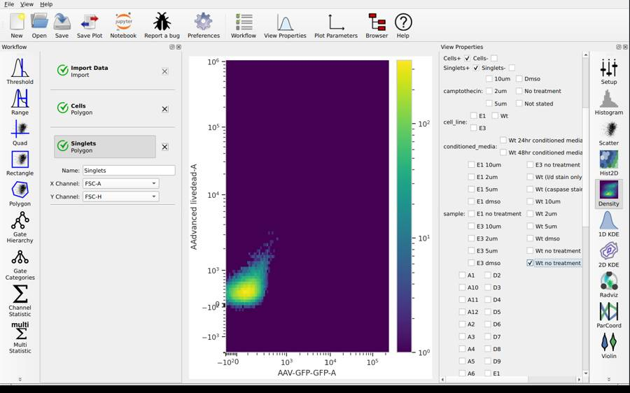
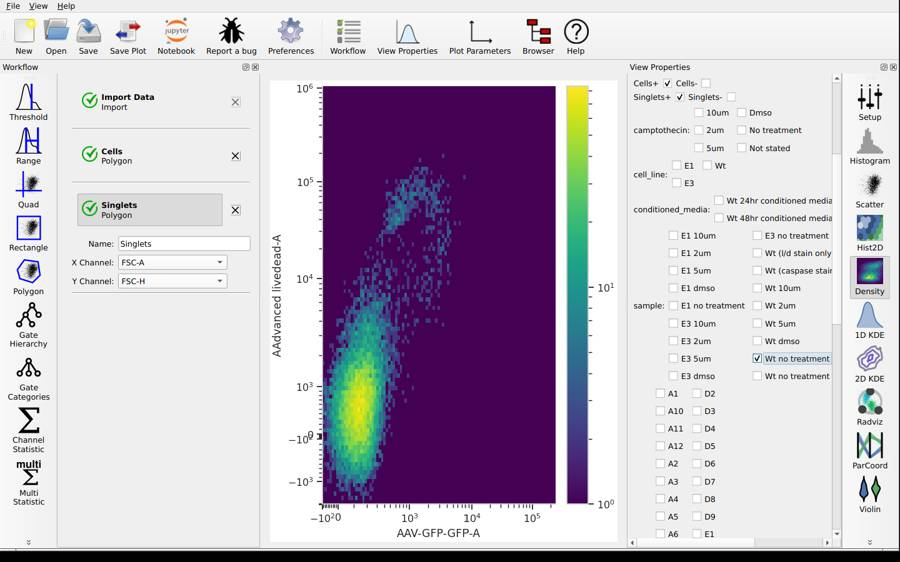
cd /task; python3 -c "import PIL; print(PIL.__version__)";
shot(){ cu click $1 $2; sleep 9; cu screenshot /tmp/$3.png >/dev/null; cu click $1 $2; sleep 0.5; }
shot 1212 546 wt_dmso; shot 1212 461 wt_10; shot 1077 461 e1_dmso; shot 1077 377 e1_10; shot 1077 602 e3_dmso; shot 1077 518 e3_10
python3 - <<'E'
from PIL import Image
names=['wt_dmso','wt_10','e1_dmso','e1_10','e3_dmso','e3_10']
ims=[Image.open(f'/tmp/{n}.png').crop((432,128,990,870)) for n in names]
W,H=ims[0].size
m=Image.new('RGB',(W*3,H*2),'white')
for i,im in enumerate(ims): m.paste(im,((i//2)*W,(i%2)*H))
m=m.resize((int(W*3*0.8),int(H*2*0.8)))
m.save('/tmp/montage.png')
E{
"file_path": "/tmp/montage.png"
}10.2.0
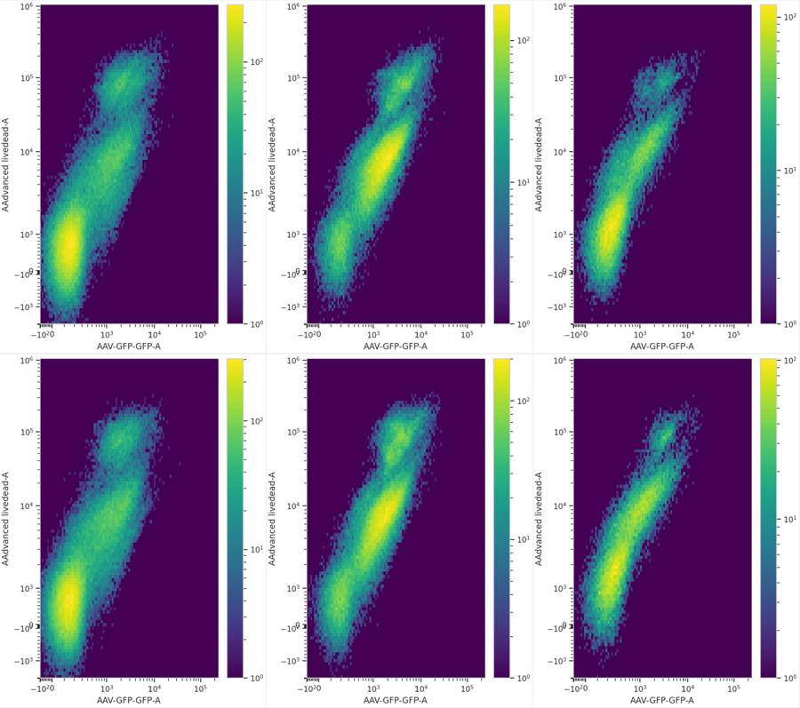
thinking
Pooled DMSO and 10 µM camptothecin look alike within each line, while the KO lines, E1 especially, show more caspase-high/SYTOX-dim cells than WT. I'm now checking the 1D caspase histograms of the control wells to set the positivity threshold.
cu scroll 1300 600 up 10; sleep 1; cu click 1391 230; sleep 2; cu screenshot /tmp/screen.png
{
"file_path": "/tmp/screen.png"
}/tmp/screen.png
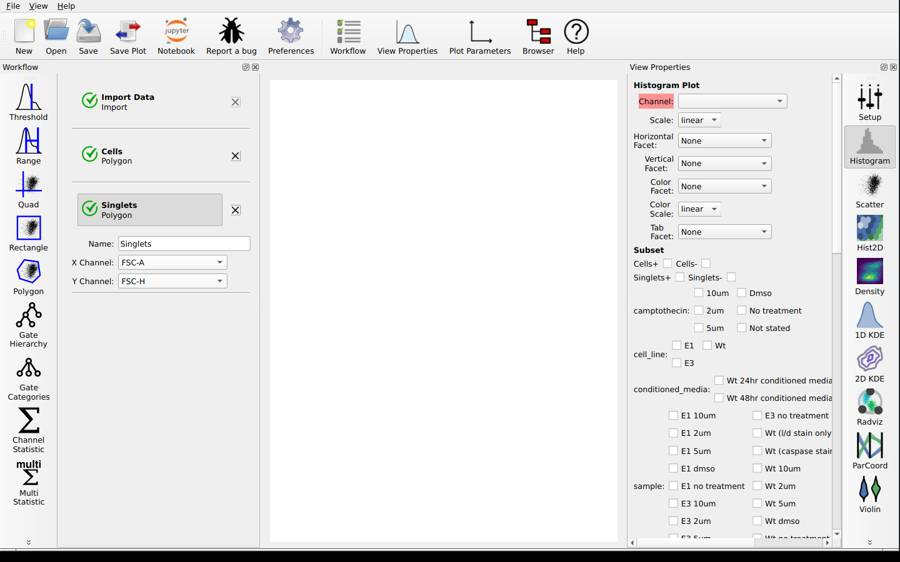
cu click 1068 422; sleep 0.3; cu click 1088 444; sleep 0.3; cu click 1187 497; sleep 0.3; cu click 1187 525; sleep 0.3; cu click 1170 162; sleep 1; cu click 1150 163; sleep 1; cu click 1118 192; sleep 1; cu click 1110 242; sleep 1; cu click 1160 298; sleep 1; cu screenshot /tmp/screen.png
{
"file_path": "/tmp/screen.png"
}/tmp/screen.png
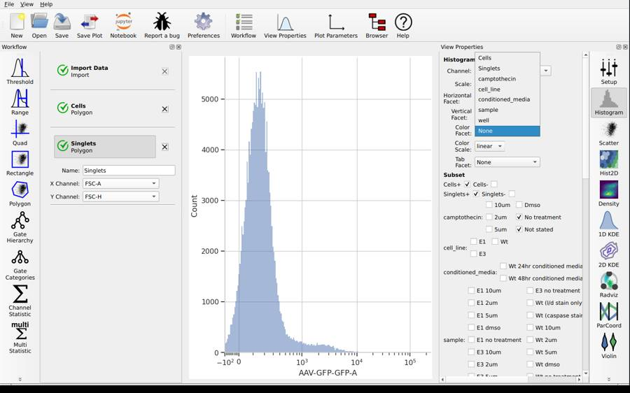
cu click 1115 252; sleep 10; cu screenshot /tmp/screen.png
{
"file_path": "/tmp/screen.png"
}/tmp/screen.png
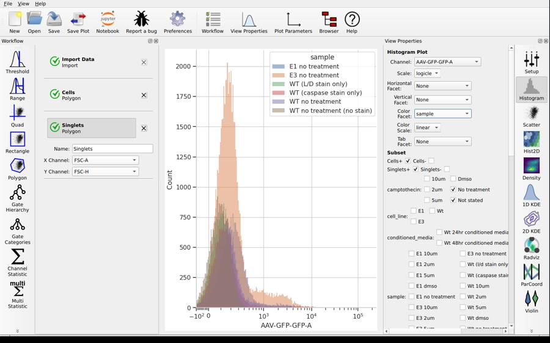
cu click 1187 497; sleep 0.3; cu click 1187 525; sleep 0.3; cu click 1160 298; sleep 1; cu screenshot /tmp/screen.png
{
"file_path": "/tmp/screen.png"
}/tmp/screen.png
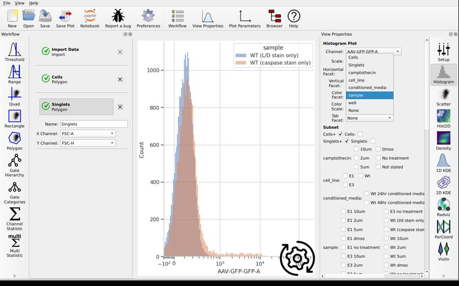
cu click 1118 252; sleep 15; cu screenshot /tmp/screen.png
{
"file_path": "/tmp/screen.png"
}/tmp/screen.png
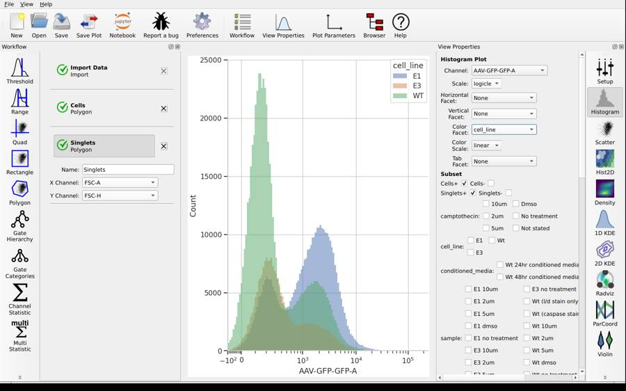
thinking
The caspase signal on singlets splits into two clear peaks, so I'm placing the cut near 700. Next I'll add the Live gate and then the caspase threshold.
cu click 45 440; sleep 2; cu click 294 476; cu type "Live"; cu key Tab; sleep 0.5; cu screenshot /tmp/screen.png
{
"file_path": "/tmp/screen.png"
}/tmp/screen.png
cu click 1122 183; sleep 1; cu click 1115 233; sleep 1; cu click 1122 235; sleep 1; cu click 1115 285; sleep 1; cu click 1068 320; sleep 0.5; cu click 1088 342; sleep 0.5; cu click 275 506; sleep 1; cu click 245 508; sleep 1; cu click 275 537; sleep 1; cu click 265 610; sleep 3; cu click 767 60; sleep 3; cu screenshot /tmp/screen.png
{
"file_path": "/tmp/screen.png"
}/tmp/screen.png
cu click 1079 572; sleep 8; cu click 1122 269; sleep 1; cu click 1110 295; sleep 10; cu screenshot /tmp/screen.png
{
"file_path": "/tmp/screen.png"
}/tmp/screen.png
cu click 1240 598 double; cu key ctrl+a; cu type "100"; cu key Return; sleep 8; cu click 1255 771 double; cu key ctrl+a; cu type "0.0"; cu key Return; sleep 12; cu screenshot /tmp/screen.png
{
"file_path": "/tmp/screen.png"
}/tmp/screen.png
cu click 1255 771 double; cu key ctrl+a; cu type "0.00001"; cu key Return; sleep 12; cu screenshot /tmp/screen.png
{
"file_path": "/tmp/screen.png"
}/tmp/screen.png
cu click 1260 650; cu type "-1000"; cu key Return; sleep 6; cu click 1260 710; cu type "-10000"; cu key Return; sleep 12; cu screenshot /tmp/screen.png
{
"file_path": "/tmp/screen.png"
}/tmp/screen.png
cu click 1087 572; sleep 15; cu screenshot /tmp/screen.png
{
"file_path": "/tmp/screen.png"
}/tmp/screen.png
thinking
I'm drawing the polygon out to the axis edges since the view can't be widened, which will miss about 0.1% of extreme negative events.
cu click 1079 572; sleep 12; cu screenshot /tmp/screen.png
{
"file_path": "/tmp/screen.png"
}/tmp/screen.png
for p in "519 804" "519 548" "626 537" "655 525" "685 506" "725 468" "755 431" "802 367" "855 289" "887 289" "887 804" "519 804"; do cu click $p; sleep 1.5; done; sleep 15; cu screenshot /tmp/screen.png
{
"file_path": "/tmp/screen.png"
}/tmp/screen.png
cu click 45 160; sleep 2; cu screenshot /tmp/screen.png
{
"file_path": "/tmp/screen.png"
}/tmp/screen.png
cu click 294 562; cu type "Caspase_pos"; cu key Tab; sleep 0.5; cu click 1120 205; sleep 1; cu click 1112 255; sleep 1; cu click 1068 290; sleep 0.5; cu click 1088 333; sleep 0.5; cu click 275 593; sleep 1; cu click 245 595; sleep 2; cu click 294 623; cu type "700"; cu key Return; sleep 12; cu screenshot /tmp/screen.png
{
"file_path": "/tmp/screen.png"
}/tmp/screen.png
cu click 45 160; sleep 2; cu click 294 649; cu type "Caspase_pos_singlets"; cu key Tab; sleep 0.5; cu screenshot /tmp/screen.png
{
"file_path": "/tmp/screen.png"
}/tmp/screen.png
cu click 1120 205; sleep 1; cu click 1112 255; sleep 1; cu click 1068 311; sleep 0.5; cu click 1088 355; sleep 0.5; cu click 275 679; sleep 1; cu click 245 681; sleep 2; cu click 294 709; cu type "700"; cu key Return; sleep 10; cu screenshot /tmp/screen.png
{
"file_path": "/tmp/screen.png"
}/tmp/screen.png
cu click 275 679; sleep 1; cu screenshot /tmp/screen.png
{
"file_path": "/tmp/screen.png"
}/tmp/screen.png
cu click 243 600; sleep 12; cu screenshot /tmp/screen.png
{
"file_path": "/tmp/screen.png"
}/tmp/screen.png
cu key ctrl+s; sleep 3; ls -la /task/outputs; grep -n -A25 "operation: !polygon\|operation: !threshold" /task/outputs/workflow.flow | grep -v "^--$" | head -150
total 152 drwxrwsrwx 2 agent task 4096 Nov 10 18:55 . drwxr-xr-x 4 root root 4096 Nov 5 22:01 .. -rw-rw-r-- 1 cfapp task 143755 Nov 10 19:09 workflow.flow
grep -n "operation:\|name:\|vertices\|threshold\|channel:\|scale" /task/outputs/workflow.flow | grep -v "name_metadata" | head -80
28: name: null 44: name: null 56: name: null 83: name: null 188: name: null 272: huescale: log 302: name: camptothecin 312: name: cell_line 319: name: conditioned_media 326: name: sample 348: name: well 431: xchannel: FSC-A 433: xscale: linear 434: ychannel: SSC-A 436: yscale: linear 439: fcs_name: AAV-GFP-GFP-A 444: fcs_name: AAV-GFP-GFP-H 449: fcs_name: AAV-GFP-GFP-W 454: fcs_name: AAdvanced livedead-A 459: fcs_name: AAdvanced livedead-H 464: fcs_name: AAdvanced livedead-W 469: fcs_name: FSC-A 474: fcs_name: FSC-H 479: fcs_name: FSC-W 484: fcs_name: SSC-A 489: fcs_name: SSC-H 494: fcs_name: SSC-W 499: fcs_name: Time 645: operation: !import;4 1706: name: camptothecin 1716: name: cell_line 1723: name: conditioned_media 1730: name: sample 1752: name: well 1865: name: null 1880: name: null 1896: name: null 1908: name: null 1935: name: null 2040: name: null 2125: huescale: log 2127: name: Cells 2128: vertices: 2156: xchannel: FSC-A 2157: xscale: linear 2158: ychannel: SSC-A 2159: yscale: linear 2185: name: camptothecin 2195: name: cell_line 2202: name: conditioned_media 2209: name: sample 2231: name: well 2316: fcs_name: AAV-GFP-GFP-A 2321: fcs_name: AAV-GFP-GFP-H 2326: fcs_name: AAV-GFP-GFP-W 2331: fcs_name: AAdvanced livedead-A 2336: fcs_name: AAdvanced livedead-H 2341: fcs_name: AAdvanced livedead-W 2353: fcs_name: FSC-A 2358: fcs_name: FSC-H 2363: fcs_name: FSC-W 2368: fcs_name: SSC-A 2373: fcs_name: SSC-H 2378: fcs_name: SSC-W 2383: fcs_name: Time 2529: operation: *id004 2939: name: camptothecin 2949: name: cell_line 2956: name: conditioned_media 2963: name: sample 2985: name: well 3098: name: null 3108: name: null 3123: name: null 3139: name: null 3151: name: null 3178: name: null 3283: name: null 3366: channel: AAV-GFP-GFP-A 3369: huescale: linear
cd /task; python3 - <<'E'
import re
t=open('outputs/workflow.flow').read().split('\n')
for i,l in enumerate(t):
if re.search(r'!polygon|!threshold|!range|vertices:|threshold:|^\s+name: [A-Z]',l):
print(i+1,l)
if 'vertices' in l:
j=i+1
while t[j].strip().startswith('-') or t[j].startswith(' '*8+'- ') or re.match(r'\s+- ',t[j]) or re.match(r'\s+-?\s*[-\d.e+]+$',t[j]):
print(' ',t[j]); j+=1
E2122 current_view: &id005 !polygon-view;3
2126 op: &id004 !polygon;1
2127 name: Cells
2128 vertices:
- !!python/tuple
- 131225.72602484174
- 39316.983508277815
- !!python/tuple
- 251479.91288610775
- 24429.674588593203
- !!python/tuple
- 501064.0742962825
- 39316.983508277815
- !!python/tuple
- 798296.1210665815
- 150144.72768815228
- !!python/tuple
- 979811.8748194358
- 350296.32538613456
- !!python/tuple
- 979811.8748194358
- 750599.520782099
- !!python/tuple
- 600897.7388603523
- 750599.520782099
- !!python/tuple
- 301396.7451681427
- 499169.4145829808
- !!python/tuple
- 131225.72602484174
- 219618.8359800139
2160 plot_params: !polygon-params;1
3401 name: Cells
3406 name: Singlets
3764 operation: &id006 !polygon;1
3765 name: Singlets
3766 vertices:
- !!python/tuple
- 118200.70402221009
- 44666.27134883301
- !!python/tuple
- 991600.104483994
- 440368.9256307858
- !!python/tuple
- 991600.104483994
- 559580.6113511715
- !!python/tuple
- 499854.22355172905
- 359224.8370311955
- !!python/tuple
- 118200.70402221009
- 129817.47543482285
4330 - !polygon-view;3
4335 plot_params: !polygon-params;1
4360 name: Cells
4522 name: Cells
4527 name: Singlets
4968 current_view: &id009 !polygon-view;3
4972 op: &id008 !polygon;1
4973 name: Live
4974 vertices:
- !!python/tuple
- -81.56470742240407
- -1595.412873571263
- !!python/tuple
- -81.56470742240407
- 2616.88054422044
- !!python/tuple
- 512.344350924398
- 2983.637438965011
- !!python/tuple
- 991.3094037058204
- 3495.71322977812
- !!python/tuple
- 1978.5965912989013
- 4448.541591598052
- !!python/tuple
- 4979.147075332878
- 7323.779421763891
- !!python/tuple
- 10159.73811621809
- 12336.501813445737
- !!python/tuple
- 30956.33251190924
- 31101.163291541525
- !!python/tuple
- 109927.27783520655
- 101002.17687259814
- !!python/tuple
- 237687.1680338328
- 101002.17687259814
- !!python/tuple
- 237687.1680338328
- -1595.412873571263
5012 plot_params: !polygon-params;1
5041 name: Cells
5046 name: Singlets
6266 current_view: &id012 !threshold-view;2
6269 op: &id011 !threshold;1
6271 name: Caspase_pos
6272 threshold: 700.0
6301 name: Cells
6306 name: Live
6311 name: Singlets
7549 current_view: &id014 !threshold-view;2
7552 op: &id013 !threshold;1
7554 name: Caspase_pos_singlets
7555 threshold: 700.0
7584 name: Caspase_pos
7589 name: Cells
7594 name: Live
7599 name: Singletscu click 240 422; sleep 4; cu screenshot /tmp/screen.png
{
"file_path": "/tmp/screen.png"
}/tmp/screen.png
cu click 1260 680; cu type "300000"; cu key Return; sleep 5; cu click 1260 740; cu type "1000000"; cu key Return; sleep 12; cu screenshot /tmp/screen.png
{
"file_path": "/tmp/screen.png"
}/tmp/screen.png
cu click 240 685; sleep 3; cu click 1429 544; sleep 1; cu click 1391 440; sleep 3; cu screenshot /tmp/screen.png
{
"file_path": "/tmp/screen.png"
}/tmp/screen.png
cu click 1068 489; sleep 0.3; cu click 1121 511; sleep 0.3; cu click 1088 533; sleep 0.3; cu click 1122 192; sleep 1; cu click 1115 242; sleep 1; cu click 1122 252; sleep 1; cu click 1115 302; sleep 1; cu click 1122 359; sleep 1; cu click 1110 385; sleep 1; cu click 1175 162; sleep 1; cu click 1150 163; sleep 1; cu click 1175 222; sleep 1; cu click 1160 295; sleep 12; cu screenshot /tmp/screen.png
{
"file_path": "/tmp/screen.png"
}/tmp/screen.png
cu click 45 690; sleep 3; cu screenshot /tmp/screen.png
{
"file_path": "/tmp/screen.png"
}/tmp/screen.png
thinking
All five gates are in place, and the Live polygon misses only about 0.1–0.2% of events at the axis edge. I'm setting up the per-well count statistics for export next.
cu click 290 735; cu type "n_gates"; cu key Tab; sleep 0.5; cu click 265 766; sleep 1; cu screenshot /tmp/s1.png; cu key Escape; sleep 0.5; cu click 255 796; sleep 1; cu screenshot /tmp/s2.png; cu key Escape
{
"file_path": "/tmp/s1.png"
}{
"file_path": "/tmp/s2.png"
}/tmp/s1.png /tmp/s2.png
cu drag 421 490 660 490; sleep 2; cu screenshot /tmp/screen.png
{
"file_path": "/tmp/screen.png"
}/tmp/screen.png
cu click 400 735; cu key ctrl+a; cu type "n_scatter"; cu key Tab; sleep 0.5; cu click 265 766; sleep 1; cu screenshot /tmp/s1.png
{
"file_path": "/tmp/s1.png"
}/tmp/s1.png
cu click 205 743; sleep 1; cu click 255 796; sleep 1; cu click 205 577; sleep 1; cu scroll 500 500 down 10; sleep 1; cu screenshot /tmp/screen.png
{
"file_path": "/tmp/screen.png"
}/tmp/screen.png
cu click 185 256; sleep 0.5; cu click 185 312; sleep 0.5; cu click 412 312; sleep 6; cu scroll 500 500 up 10; sleep 1; cu screenshot /tmp/screen.png
{
"file_path": "/tmp/screen.png"
}/tmp/screen.png
cu click 45 690; sleep 3; cu scroll 500 500 down 15; sleep 1; cu screenshot /tmp/screen.png
{
"file_path": "/tmp/screen.png"
}/tmp/screen.png
cu scroll 500 500 down 60; sleep 1; cu screenshot /tmp/s1.png; cu scroll 500 500 up 25; sleep 1; cu screenshot /tmp/s2.png
{
"file_path": "/tmp/s2.png"
}/tmp/s1.png /tmp/s2.png
cu click 400 479; cu type "n_fluor"; cu key Tab; sleep 0.5; cu click 265 510; sleep 1; cu screenshot /tmp/s1.png
{
"file_path": "/tmp/s1.png"
}/tmp/s1.png
cu click 205 655; sleep 1; cu click 255 540; sleep 1; cu screenshot /tmp/s1.png
{
"file_path": "/tmp/s1.png"
}/tmp/s1.png
cu click 205 542; sleep 1; cu click 185 569; sleep 0.5; cu click 185 653; sleep 0.5; cu click 412 681; sleep 0.5; cu click 188 784; sleep 0.5; cu click 168 862; sleep 6; cu screenshot /tmp/screen.png
{
"file_path": "/tmp/screen.png"
}/tmp/screen.png
cu click 45 690; sleep 3; cu screenshot /tmp/screen.png
{
"file_path": "/tmp/screen.png"
}/tmp/screen.png
cu click 400 565; cu type "n_caspall"; cu key Tab; sleep 0.5; cu click 265 596; sleep 1; cu click 205 741; sleep 1; cu click 255 626; sleep 1; cu click 205 628; sleep 1; cu click 185 683; sleep 0.5; cu click 412 767; sleep 0.5; cu click 188 870; sleep 1; cu scroll 500 500 down 3; sleep 1; cu screenshot /tmp/screen.png
{
"file_path": "/tmp/screen.png"
}/tmp/screen.png
cu click 255 438; sleep 1; cu screenshot /tmp/s1.png
{
"file_path": "/tmp/s1.png"
}/tmp/s1.png
cu click 205 392; sleep 2; cu click 168 761; sleep 8; cu screenshot /tmp/screen.png
{
"file_path": "/tmp/screen.png"
}/tmp/screen.png
cu key ctrl+s; sleep 2; cu click 1391 868; sleep 1; cu screenshot /tmp/screen.png
{
"file_path": "/tmp/screen.png"
}/tmp/screen.png
cu click 1397 520; sleep 3; cu screenshot /tmp/screen.png
{
"file_path": "/tmp/screen.png"
}/tmp/screen.png
cu click 1122 162; sleep 1; cu screenshot /tmp/screen.png
{
"file_path": "/tmp/screen.png"
}/tmp/screen.png
cu click 1111 236; sleep 4; cu screenshot /tmp/screen.png
{
"file_path": "/tmp/screen.png"
}/tmp/screen.png
mkdir -p /tmp/exports && chmod 777 /tmp/exports; cu click 1122 192; sleep 2; cu screenshot /tmp/screen.png
{
"file_path": "/tmp/screen.png"
}/tmp/screen.png
cu click 714 588; cu paste "/tmp/exports/n_scatter.csv"; sleep 0.5; cu key Return; sleep 3; ls -la /tmp/exports; head -8 /tmp/exports/n_scatter.csv; wc -l /tmp/exports/n_scatter.csv; cu screenshot /tmp/screen.png
{
"file_path": "/tmp/screen.png"
}total 16 drwxrwxrwx 2 root root 4096 Nov 10 19:16 . drwxrwxrwx 9 root root 4096 Nov 10 19:16 .. -rw-rw-r-- 1 cfapp cfapp 4647 Nov 10 19:16 n_scatter.csv Cells,Singlets,well,FSC-A 0,0,A1,10723.0 0,0,A10,12781.0 0,0,A11,13785.0 0,0,A12,10906.0 0,0,A2,10839.0 0,0,A3,14490.0 0,0,A4,9442.0 321 /tmp/exports/n_scatter.csv /tmp/screen.png
exp(){ cu click 1122 162; sleep 1; cu click 1111 $1; sleep 4; cu click 1122 192; sleep 2; cu click 714 588; cu paste "/tmp/exports/$2.csv"; sleep 0.5; cu key Return; sleep 3; }
exp 212 n_fluor; exp 188 n_caspall; ls -la /tmp/exports; for f in n_fluor n_caspall; do head -6 /tmp/exports/$f.csv; wc -l /tmp/exports/$f.csv; done; cu screenshot /tmp/screen.png{
"file_path": "/tmp/screen.png"
}total 32 drwxrwxrwx 2 root root 4096 Nov 10 19:16 . drwxrwxrwx 9 root root 4096 Nov 10 19:16 .. -rw-rw-r-- 1 cfapp cfapp 4647 Nov 10 19:16 n_caspall.csv -rw-rw-r-- 1 cfapp cfapp 4647 Nov 10 19:16 n_fluor.csv -rw-rw-r-- 1 cfapp cfapp 4647 Nov 10 19:16 n_scatter.csv Cells,Singlets,well,FSC-A 0,0,A1,10723.0 0,0,A10,12781.0 0,0,A11,13785.0 0,0,A12,10906.0 0,0,A2,10839.0 321 /tmp/exports/n_fluor.csv Cells,Singlets,well,FSC-A 0,0,A1,10723.0 0,0,A10,12781.0 0,0,A11,13785.0 0,0,A12,10906.0 0,0,A2,10839.0 321 /tmp/exports/n_caspall.csv /tmp/screen.png

rm /tmp/exports/n_fluor.csv /tmp/exports/n_caspall.csv; cu click 1122 162; sleep 1; cu screenshot /tmp/screen.png
{
"file_path": "/tmp/screen.png"
}/tmp/screen.png
cu click 1105 140; sleep 4; cu click 1122 192; sleep 2; cu click 714 588; cu paste "/tmp/exports/n_fluor.csv"; sleep 0.5; cu key Return; sleep 3; cu click 1122 162; sleep 1; cu screenshot /tmp/s1.png; cu click 1111 138; sleep 4; cu screenshot /tmp/s2.png; cu click 1122 192; sleep 2; cu click 714 588; cu paste "/tmp/exports/n_caspall.csv"; sleep 0.5; cu key Return; sleep 3; for f in n_fluor n_caspall; do head -6 /tmp/exports/$f.csv; wc -l /tmp/exports/$f.csv; done
/tmp/s1.png /tmp/s2.png Caspase_pos,Live,well,FSC-A 0,0,A1,1707.0 0,0,A10,1977.0 0,0,A11,1664.0 0,0,A12,1661.0 0,0,A2,1574.0 321 /tmp/exports/n_fluor.csv Caspase_pos_singlets,well,FSC-A 0,A1,12860.0 0,A10,18441.0 0,A11,18000.0 0,A12,11395.0 0,A2,18013.0 161 /tmp/exports/n_caspall.csv
mkdir -p /tmp/work && cat > /tmp/work/tab.py <<'E'
import pandas as pd
pd.set_option('display.width',250); pd.set_option('display.max_rows',200)
L=pd.read_csv('/task/inputs/plate_layout.csv')
s=pd.read_csv('/tmp/exports/n_scatter.csv'); f=pd.read_csv('/tmp/exports/n_fluor.csv'); c=pd.read_csv('/tmp/exports/n_caspall.csv')
for d in (s,f,c): d.rename(columns={'FSC-A':'n'},inplace=True); d['n']=d['n'].fillna(0).round().astype(int)
def b(x): return x.astype(str).isin(['1','True','1.0'])
g=s.assign(C=b(s.Cells),S=b(s.Singlets))
r=pd.DataFrame({'all_events':g.groupby('well').n.sum(),
'Cells':g[g.C].groupby('well').n.sum(),
'Singlets':g[g.C&g.S].groupby('well').n.sum()})
h=f.assign(P=b(f.Caspase_pos),V=b(f.Live))
r['sing_chk']=h.groupby('well').n.sum()
r['Live']=h[h.V].groupby('well').n.sum()
r['Caspase_pos']=h[h.V&h.P].groupby('well').n.sum()
r['dead_casp']=h[~h.V&h.P].groupby('well').n.sum()
k=c.assign(P=b(c.Caspase_pos_singlets))
r['Caspase_pos_singlets']=k[k.P].groupby('well').n.sum()
r=r.fillna(0).astype(int).reset_index()
r=L.merge(r,on='well')
r['pCells']=100*r.Cells/r.all_events; r['pSing']=100*r.Singlets/r.Cells; r['pLive']=100*r.Live/r.Singlets
r['pCaspLive']=100*r.Caspase_pos/r.Live; r['pCaspSing']=100*r.Caspase_pos_singlets/r.Singlets
r.to_pickle('/tmp/work/r.pkl')
if __name__=='__main__':
print(r.drop(columns=['file','sample']).round(1).to_string())
print(r.all_events.sum(), (r.sing_chk!=r.Singlets).sum())
E
python3 /tmp/work/tab.pywell cell_line camptothecin conditioned_media all_events Cells Singlets sing_chk Live Caspase_pos dead_casp Caspase_pos_singlets pCells pSing pLive pCaspLive pCaspSing 0 A1 WT 10uM WT 24hr conditioned media 31328 19086 16848 16848 12375 1222 2766 3988 60.9 88.3 73.5 9.9 23.7 1 A2 WT 5uM WT 24hr conditioned media 40169 27542 24073 24073 18590 2151 3909 6060 68.6 87.4 77.2 11.6 25.2 2 A3 WT 2uM WT 24hr conditioned media 47337 30324 26677 26677 20683 2635 4315 6950 64.1 88.0 77.5 12.7 26.1 3 A4 WT DMSO WT 24hr conditioned media 33079 22304 19711 19711 13588 2068 4607 6675 67.4 88.4 68.9 15.2 33.9 4 A5 WT 10uM WT 48hr conditioned media 34963 23531 20814 20814 15234 1698 3980 5678 67.3 88.5 73.2 11.1 27.3 5 A6 WT 5uM WT 48hr conditioned media 33431 23797 21341 21341 15077 1387 4114 5501 71.2 89.7 70.6 9.2 25.8 6 A7 WT 2uM WT 48hr conditioned media 36445 26383 23778 23778 16758 1335 4824 6159 72.4 90.1 70.5 8.0 25.9 7 A8 WT DMSO WT 48hr conditioned media 22867 15940 14387 14387 9579 826 3264 4090 69.7 90.3 66.6 8.6 28.4 8 A9 WT 10uM no conditioned media 40034 23412 20355 20355 14432 1196 3784 4980 58.5 86.9 70.9 8.3 24.5 9 A10 WT 5uM no conditioned media 42298 27680 24574 24574 17664 1200 4933 6133 65.4 88.8 71.9 6.8 25.0 10 A11 WT 2uM no conditioned media 43376 27377 24430 24430 17609 1273 5157 6430 63.1 89.2 72.1 7.2 26.3 11 A12 WT DMSO no conditioned media 30724 18158 15642 15642 10488 754 3493 4247 59.1 86.1 67.1 7.2 27.2 12 B1 E1 10uM WT 24hr conditioned media 18757 12834 11097 11097 3832 1714 6603 8317 68.4 86.5 34.5 44.7 74.9 13 B2 E1 5uM WT 24hr conditioned media 32477 22164 19233 19233 7230 2582 11299 13881 68.2 86.8 37.6 35.7 72.2 14 B3 E1 2uM WT 24hr conditioned media 40067 26231 22532 22532 7199 2998 14485 17483 65.5 85.9 32.0 41.6 77.6 15 B4 E1 DMSO WT 24hr conditioned media 19965 12201 10297 10297 3444 1372 6160 7532 61.1 84.4 33.4 39.8 73.1 16 B5 E1 10uM WT 48hr conditioned media 17852 12976 11468 11468 3540 1412 7159 8571 72.7 88.4 30.9 39.9 74.7 17 B6 E1 5uM WT 48hr conditioned media 31705 21830 18947 18947 6137 2107 11847 13954 68.9 86.8 32.4 34.3 73.6 18 B7 E1 2uM WT 48hr conditioned media 35417 23255 20436 20436 5596 1966 13777 15743 65.7 87.9 27.4 35.1 77.0 19 B8 E1 DMSO WT 48hr conditioned media 26222 15979 13186 13186 3778 1399 8559 9958 60.9 82.5 28.7 37.0 75.5 20 B9 E1 10uM no conditioned media 34411 21084 18108 18108 8941 1888 7840 9728 61.3 85.9 49.4 21.1 53.7 21 B10 E1 5uM no conditioned media 40098 24644 21111 21111 10436 2141 9136 11277 61.5 85.7 49.4 20.5 53.4 22 B11 E1 2uM no conditioned media 41005 23526 20336 20336 8674 2484 10285 12769 57.4 86.4 42.7 28.6 62.8 23 B12 E1 DMSO no conditioned media 31680 15488 12593 12593 4707 953 6283 7236 48.9 81.3 37.4 20.2 57.5 24 C1 E3 10uM WT 24hr conditioned media 17681 8799 6386 6386 1932 75 3280 3355 49.8 72.6 30.3 3.9 52.5 25 C2 E3 5uM WT 24hr conditioned media 25455 10816 8131 8131 3007 260 4041 4301 42.5 75.2 37.0 8.6 52.9 26 C3 E3 2uM WT 24hr conditioned media 21098 10590 8315 8315 3143 65 3576 3641 50.2 78.5 37.8 2.1 43.8 27 C4 E3 DMSO WT 24hr conditioned media 18113 8052 5667 5667 1990 122 2770 2892 44.5 70.4 35.1 6.1 51.0 28 C5 E3 10uM WT 48hr conditioned media 18729 7903 5708 5708 2335 88 2320 2408 42.2 72.2 40.9 3.8 42.2 29 C6 E3 5uM WT 48hr conditioned media 21716 9426 6952 6952 2600 68 3155 3223 … [9,804 more characters not shown]
cu click 1391 160; sleep 2; cu click 1170 162; sleep 1; cu screenshot /tmp/screen.png
{
"file_path": "/tmp/screen.png"
}/tmp/screen.png
cu click 1108 450; sleep 2; cu drag 660 490 421 490; sleep 12; cu screenshot /tmp/screen.png
{
"file_path": "/tmp/screen.png"
}/tmp/screen.png
cu click 45 868; sleep 1; cu screenshot /tmp/screen.png
{
"file_path": "/tmp/screen.png"
}/tmp/screen.png
cu click 130 470; sleep 3; cu screenshot /tmp/screen.png
{
"file_path": "/tmp/screen.png"
}/tmp/screen.png
cu click 45 868; sleep 1; cu drag 421 490 660 490; sleep 2; cu scroll 400 500 down 30; sleep 1; cu screenshot /tmp/screen.png
{
"file_path": "/tmp/screen.png"
}/tmp/screen.png
cu click 400 733; cu type "TimeBin"; cu key Tab; sleep 0.5; cu click 270 764; sleep 1; cu screenshot /tmp/s1.png
{
"file_path": "/tmp/s1.png"
}/tmp/s1.png
cu click 208 887; sleep 1; cu click 400 824; cu type "1000"; cu key Return; sleep 8; cu screenshot /tmp/screen.png
{
"file_path": "/tmp/screen.png"
}/tmp/screen.png
cu click 45 690; sleep 3; cu scroll 400 500 down 60; sleep 1; cu scroll 400 500 up 25; sleep 1; cu screenshot /tmp/screen.png
{
"file_path": "/tmp/screen.png"
}/tmp/screen.png
cu click 400 421; cu type "n_time"; cu key Tab; sleep 0.5; cu click 265 451; sleep 1; cu screenshot /tmp/s1.png
{
"file_path": "/tmp/s1.png"
}/tmp/s1.png
cu click 205 596; sleep 1; cu click 255 481; sleep 1; cu screenshot /tmp/s1.png
{
"file_path": "/tmp/s1.png"
}/tmp/s1.png
cu click 205 483; sleep 1; cu click 412 623; sleep 0.5; cu click 185 651; sleep 8; cu screenshot /tmp/screen.png
{
"file_path": "/tmp/screen.png"
}/tmp/screen.png
cu click 1391 868; sleep 1; cu click 1397 520; sleep 3; cu click 1122 162; sleep 1; cu screenshot /tmp/screen.png
{
"file_path": "/tmp/screen.png"
}/tmp/screen.png
cu click 1105 259; sleep 5; cu click 1122 192; sleep 2; cu click 714 588; cu paste "/tmp/exports/n_time.csv"; sleep 0.5; cu key Return; sleep 3; head -5 /tmp/exports/n_time.csv; wc -l /tmp/exports/n_time.csv
python3 - <<'E'
import pandas as pd
pd.set_option('display.width',250); pd.set_option('display.max_rows',200)
t=pd.read_csv('/tmp/exports/n_time.csv'); t.columns=['bin','well','n']
p=t.pivot(index='well',columns='bin',values='n').fillna(0).astype(int)
import re
p=p.loc[sorted(p.index,key=lambda w:(w[0],int(w[1:])))]
p.columns=[int(c/1000) for c in p.columns]
print(p.to_string())
EExit code 1 well,TimeBin,FSC-A A1,0,1779.0 A1,1000,1974.0 A1,2000,1996.0 A1,3000,2049.0 1340 /tmp/exports/n_time.csv Traceback (most recent call last): File "<stdin>", line 6, in <module> File "<stdin>", line 6, in <lambda> TypeError: 'int' object is not subscriptable
python3 - <<'E'
import pandas as pd
pd.set_option('display.width',250); pd.set_option('display.max_rows',200)
t=pd.read_csv('/tmp/exports/n_time.csv'); t.columns=['well','bin','n']
p=t.pivot(index='well',columns='bin',values='n').fillna(0).astype(int)
p=p.loc[sorted(p.index,key=lambda w:(w[0],int(w[1:])))]
p.columns=[int(c/1000) for c in p.columns]
p['tot']=p.sum(axis=1)
print(p.to_string())
p.to_pickle('/tmp/work/time.pkl')
E0 1 2 3 4 5 6 7 8 9 10 11 12 13 14 15 16 tot well A1 1779 1974 1996 2049 1913 1862 1967 2118 2337 2420 2313 2018 1840 1637 1560 1545 0 31328 A2 2060 2193 2356 2335 2380 2347 2501 2833 3005 3017 2771 2553 2257 2041 1932 2227 1361 40169 A3 2513 2562 2702 2737 2832 2636 2893 3167 3545 3546 3416 2958 2686 2383 2376 2560 1825 47337 A4 1520 1729 1770 1958 2003 1914 2010 2347 2640 2448 2367 1996 1829 1938 1756 1649 1205 33079 A5 1640 1816 1869 2019 2058 2097 2125 2448 2737 2795 2532 2242 1900 1829 1724 1885 1247 34963 A6 1766 1873 1883 1949 1980 2123 2365 2503 2602 2746 2547 2222 2071 1896 1743 1162 0 33431 A7 1553 1606 1882 2046 2144 2020 2127 2250 2555 2655 2797 2646 2492 2306 2055 1889 1422 36445 A8 1009 1208 1231 1426 1384 1500 1598 1602 1866 1955 1751 1549 1398 1384 1183 823 0 22867 A9 2071 2173 2245 2340 2323 2476 2463 2741 3058 3179 2834 2490 2300 2106 1993 2220 1022 40034 A10 1986 2301 2528 2472 2536 2468 2682 3149 3268 3231 3106 2644 2340 2188 2077 2594 728 42298 A11 2455 2443 2497 2492 2619 2648 2919 3124 2921 2735 2633 2540 2647 2644 2649 2927 483 43376 A12 1822 1877 1984 1946 2010 2001 2024 2256 2082 1905 1754 1975 2068 1898 1572 1550 0 30724 B1 901 1022 1039 1077 1134 1193 1284 1469 1522 1323 1215 1134 1111 1064 1023 1117 129 18757 B2 1478 1743 1872 1834 1962 2008 2215 2569 2635 2665 2326 2227 2054 1767 1646 1476 0 32477 B3 2043 2208 2259 2242 2290 2348 2513 2791 3017 3156 2808 2493 2319 2195 1967 2416 1002 40067 B4 965 1155 1156 1142 1136 1199 1478 1596 1740 1680 1561 1325 1240 1100 772 720 0 19965 B5 904 935 1027 1018 996 1018 1116 1350 1447 1378 1250 1084 1143 963 877 1074 272 17852 B6 1736 1867 1872 1946 1834 1903 2078 2339 2530 2539 2188 1960 1700 1642 1699 1698 174 31705 B7 1805 1898 2067 2058 2026 2254 2451 2886 2781 2731 2603 2227 2112 1889 1708 1921 0 35417 B8 1436 1500 1563 1537 1548 1610 1737 1866 1992 1814 1563 1501 1483 1471 1470 1688 443 26222 B9 1873 2047 2070 2054 2057 2111 2340 2611 2723 2666 2406 2157 1923 1797 1790 1786 0 34411 B10 2187 2187 2278 2395 2351 2441 2674 2945 3187 3072 2924 2489 2223 2182 2300 2084 179 40098 B11 2326 2411 2439 2540 2483 2512 2545 2811 2995 3052 2884 2466 2329 2280 2175 2385 372 41005 B12 1833 1904 1919 1951 1909 2010 2135 2393 2467 2265 2053 1932 1828 1698 1622 1761 0 31680 C1 811 888 1101 1052 1127 1138 1175 1361 1443 1410 1301 1126 1116 983 707 841 101 17681 C2 1191 1321 1409 1450 1400 1487 1502 1598 1826 1983 2055 1755 1623 1507 1344 1116 888 25455 C3 959 1058 1150 1214 1199 1332 1411 1689 1786 1868 1667 1376 1247 1050 1078 1014 0 21098 C4 878 910 966 916 929 959 1040 1216 1302 1425 1537 1309 1105 1022 988 849 762 18113 C5 1085 1068 1118 1145 1198 1214 1283 1381 1477 1510 1337 1049 961 933 890 963 117 18729 C6 1192 1290 1336 1359 1311 1335 1414 1642 1796 1677 1580 1326 1149 1117 1213 904 75 21716 C7 1184 1289 1379 1351 1365 1365 1596 1801 1974 1798 1621 1322 1379 1253 1121 980 96 22874 C8 1046 1044 1074 1094 1100 1070 1269 1429 1556 1415 1302 1170 1058 928 1005 978 66 18604 C9 1213 1324 1354 1325 1436 1384 1612 1797 1940 1856 1616 1374 1233 1187 1138 1173 0 22962 C10 911 977 946 995 970 940 1047 1198 1258 1358 1166 972 802 742 742 715 55 15794 C11 1219 1156 1245 1251 1170 1193 1419 1725 1667 1638 1280 1165 1113 896 1017 671 29 19854 C12 1322 1349 1387 1350 1339 1394 1441 1670 1726 1712 1713 1420 1222 1131 1007 1193 728 23104 D1 1591 1725 1795 1933 1860 1894 2152 2450 2386 2370 1927 1821 1660 1666 1509 1150 76 29965 D2 1917 2054 2313 2448 2441 2413 2485 2872 3415 3386 3323 2977 2608 2354 2094 1839 1618 42557 D3 2198 2388 2495 2615 2671 2820 3016 3467 3433 3619 3167 2908 2609 2345 2224 2736 0 44711 D4 1411 1525 1591 1594 1627 1738 2078 2252 2125 1889 1535 1551 1499 1375 1423 838 53 26104 D5 1407 1537 1597 1712 1681 1678 1698 2007 2203 2355 2102 1851 1661 1529 1243 1214 873 28348 D6 1773 1915 2017 2091 2116 2221 2230 2392 2528 2558 2112 1943 1781 1714 1849 978 50 32268 D7 2094 2130 2383 2445 2509 2561 2720 3220 3399 3114 2622 2503 2379 1732 1558 625 9 38003 D8 1403 1513 1590 1698 1596 1645 1799 2050 2269 2199 1945 1730 1576 1390 1303 1274 807 27787 D9 2006 2290 2271 2239 2182 2274 2717 2977 2870 2591 2220 2062 1886 1861 2129 973 37 35585 D10 2262 2295 2311 2252 2361 2575 2578 2536 2173 2214 2643 2785 2684 2594 2032 2036 94 38425 D11 2467 2590 2679 2829 2845 2923 3201 3416 3406 3265 2868 2573 2390 2193 2669 983 22 43319 D12 1572 1532 1694 1736 1616 1615 1794 2367 2361 2288 2070 1783 1713 1427 1233 1421 777 28999 E1 861 929 1018 1055 1090 1107 1251 1437 1494 1510 1412 1276 1079 1036 851 1148 331 18885 E2 1860 2137 2110 2241 2251 2324 2598 2865 2942 2697 2456 2262 2086 1850 2027 1042 53 35801 E3 2093 2379 2364 2520 2573 2664 3088 3139 3200 3086 2656 … [3,347 more characters not shown]
cu drag 660 490 421 490; sleep 2; cu click 1391 160; sleep 2; cu screenshot /tmp/screen.png
{
"file_path": "/tmp/screen.png"
}/tmp/screen.png
cu click 1170 162; sleep 1; cu click 1112 379; sleep 10; cu screenshot /tmp/s1.png; cu click 1170 162; sleep 1; cu screenshot /tmp/s2.png
{
"file_path": "/tmp/s1.png"
}{
"file_path": "/tmp/s2.png"
}/tmp/s1.png /tmp/s2.png
cu click 1110 157; sleep 10; cu screenshot /tmp/s1.png
{
"file_path": "/tmp/s1.png"
}/tmp/s1.png
cu drag 421 490 660 490; sleep 2; cu click 45 160; sleep 3; cu scroll 400 500 down 60; sleep 1; cu screenshot /tmp/screen.png
{
"file_path": "/tmp/screen.png"
}/tmp/screen.png
cu click 285 749; cu type "FSC_offscale"; cu key Tab; sleep 0.5; cu click 275 779; sleep 1; cu screenshot /tmp/s1.png
{
"file_path": "/tmp/s1.png"
}/tmp/s1.png
cu click 275 793; sleep 1; cu screenshot /tmp/s1.png
{
"file_path": "/tmp/s1.png"
}/tmp/s1.png
cu click 213 744; sleep 2; cu click 285 824; cu type "1000000"; cu key Return; sleep 10; cu screenshot /tmp/screen.png
{
"file_path": "/tmp/screen.png"
}/tmp/screen.png
cu click 45 690; sleep 3; cu scroll 250 500 down 60; sleep 1; cu scroll 250 500 up 25; sleep 1; cu screenshot /tmp/screen.png
{
"file_path": "/tmp/screen.png"
}/tmp/screen.png
cu drag 419 490 660 490; sleep 2; cu screenshot /tmp/screen.png
{
"file_path": "/tmp/screen.png"
}/tmp/screen.png
cu click 400 434; cu type "n_offscale"; cu key Tab; sleep 0.5; cu click 265 465; sleep 1; cu screenshot /tmp/s1.png
{
"file_path": "/tmp/s1.png"
}/tmp/s1.png
cu click 205 610; sleep 1; cu click 255 495; sleep 1; cu screenshot /tmp/s1.png
{
"file_path": "/tmp/s1.png"
}/tmp/s1.png
cu click 205 497; sleep 1; cu click 185 608; sleep 0.5; cu click 413 664; sleep 8; cu screenshot /tmp/screen.png
{
"file_path": "/tmp/screen.png"
}/tmp/screen.png
cu click 1391 868; sleep 1; cu click 1397 520; sleep 3; cu click 1122 162; sleep 1; cu screenshot /tmp/screen.png
{
"file_path": "/tmp/screen.png"
}/tmp/screen.png
mkdir -p /tmp/exports2; chmod 777 /tmp/exports2
ex(){ cu click 1122 192; sleep 2; cu click 714 588; cu paste "/tmp/exports2/$1.csv"; sleep 0.5; cu key Return; sleep 3; }
cu click 1113 235; sleep 4; ex n_offscale
cu click 1122 162; sleep 1; cu click 1111 186; sleep 4; ex n_scatter
cu click 1122 162; sleep 1; cu click 1111 114; sleep 4; ex n_fluor
cu click 1122 162; sleep 1; cu click 1111 138; sleep 4; ex n_caspall
for f in /tmp/exports2/*.csv; do echo $f; head -2 $f; wc -l < $f; done
for f in n_scatter n_fluor n_caspall; do cmp /tmp/exports/$f.csv /tmp/exports2/$f.csv && echo same $f; done/tmp/exports2/n_caspall.csv Caspase_pos_singlets,well,FSC-A 0,A1,12860.0 161 /tmp/exports2/n_fluor.csv Caspase_pos,Live,well,FSC-A 0,0,A1,1707.0 321 /tmp/exports2/n_offscale.csv FSC_offscale,well,FSC-A 0,A1,31030.0 161 /tmp/exports2/n_scatter.csv Cells,Singlets,well,FSC-A 0,0,A1,10723.0 321 same n_scatter same n_fluor same n_caspall
cu key ctrl+s; sleep 3; ls -la /task/outputs; python3 - <<'E'
import pandas as pd
o=pd.read_csv('/tmp/exports2/n_offscale.csv'); o.columns=['off','well','n']
p=o.pivot(index='well',columns='off',values='n').fillna(0)
p['pct']=100*p[1]/(p[0]+p[1])
print(p.pct.describe()); print(p.sort_values('pct').tail(8))
E
grep -n "events:" /task/outputs/workflow.flow | head -3; grep -c "" /task/outputs/workflow.flow; grep -n "^ operation: \|^- !workflow-item\| name: [A-Za-z_]*$" /task/outputs/workflow.flow | head -60total 912 drwxrwsrwx 2 agent task 4096 Nov 10 18:55 . drwxr-xr-x 4 root root 4096 Nov 5 22:01 .. -rw-rw-r-- 1 cfapp task 924224 Nov 10 19:27 workflow.flow count 80.000000 mean 1.727205 std 1.536270 min 0.240869 25% 0.695205 50% 1.164936 75% 2.122158 max 7.958952 Name: pct, dtype: float64 off 0 1 pct well C10 15097.0 697.0 4.413068 F8 13104.0 613.0 4.468907 F9 15793.0 773.0 4.666184 F11 17862.0 906.0 4.827366 G5 15099.0 862.0 5.400664 F10 15873.0 923.0 5.495356 C11 18610.0 1244.0 6.265740 G6 15427.0 1334.0 7.958952 653: events: null 51735 1:- !workflow-item;5 28: name: null 44: name: null 56: name: null 83: name: null 188: name: null 302: name: camptothecin 312: name: cell_line 319: name: conditioned_media 326: name: sample 348: name: well 645: operation: !import;4 1706: name: camptothecin 1716: name: cell_line 1723: name: conditioned_media 1730: name: sample 1752: name: well 1842:- !workflow-item;5 1865: name: null 1880: name: null 1896: name: null 1908: name: null 1935: name: null 2040: name: null 2127: name: Cells 2185: name: camptothecin 2195: name: cell_line 2202: name: conditioned_media 2209: name: sample 2231: name: well 2529: operation: *id004 2939: name: camptothecin 2949: name: cell_line 2956: name: conditioned_media 2963: name: sample 2985: name: well 3075:- !workflow-item;5 3098: name: null 3108: name: null 3123: name: null 3139: name: null 3151: name: null 3178: name: null 3283: name: null 3401: name: Cells 3406: name: Singlets 3411: name: camptothecin 3421: name: cell_line 3428: name: conditioned_media 3435: name: sample 3457: name: well 3764: operation: &id006 !polygon;1 3765: name: Singlets 4195: name: camptothecin 4205: name: cell_line 4212: name: conditioned_media 4219: name: sample 4241: name: well 4360: name: Cells 4365: name: camptothecin
cd /task; python3 - <<'E'
import re
t=open('outputs/workflow.flow').read().split('\n')
for i,l in enumerate(t):
if l.startswith('- !workflow-item'): print('ITEM',i+1)
m=re.match(r'\s+(operation|op): (\S.*)',l)
if m and ('!' in l or '*' in l):
# print next few lines with name/channel/threshold/by/subset
print(' ',i+1,l.strip(), '|', ' ; '.join(x.strip() for x in t[i+1:i+4]))
if re.match(r'\s+(threshold|bin_width|statistic_name|function_name|subset): ',l) or re.match(r'\s+by:',l):
print(' ',i+1,l.strip(), t[i+1].strip() if 'by' in l else '')
EITEM 1
645 operation: !import;4 | channels_list: [] ; conditions: ; camptothecin: category
ITEM 1842
2126 op: &id004 !polygon;1 | name: Cells ; vertices: ; - !!python/tuple
2529 operation: *id004 | statistics: ; Conditions: !pandas-dataframe;1 ; columns: []
ITEM 3075
3764 operation: &id006 !polygon;1 | name: Singlets ; vertices: ; - !!python/tuple
4334 op: *id006 | plot_params: !polygon-params;1 ; alpha: 0.25 ; col_wrap: null
ITEM 4668
4972 op: &id008 !polygon;1 | name: Live ; vertices: ; - !!python/tuple
5413 operation: *id008 | statistics: ; Conditions: !pandas-dataframe;1 ; columns: []
ITEM 5959
6273 op: &id011 !threshold;1 | channel: AAV-GFP-GFP-A ; name: Caspase_pos ; threshold: 700.0
6276 threshold: 700.0
6685 operation: *id011 | statistics: ; Conditions: !pandas-dataframe;1 ; columns: []
ITEM 7231
7984 operation: &id013 !threshold;1 | channel: AAV-GFP-GFP-A ; name: Caspase_pos_singlets ; threshold: 700.0
7987 threshold: 700.0
8535 op: *id013 | plot_params: !histogram-params;4 ; alpha: 0.5 ; col_wrap: null
ITEM 8722
9288 operation: !channel-statistic;2 | by: ; - Cells ; - Singlets
9289 by: - Cells
9294 function_name: Count
ITEM 11387
11736 operation: !channel-statistic;2 | by: ; - Caspase_pos ; - Live
11737 by: - Caspase_pos
11742 function_name: Count
ITEM 15226
15764 operation: !channel-statistic;2 | by: ; - Caspase_pos_singlets ; - well
15765 by: - Caspase_pos_singlets
15769 function_name: Count
ITEM 19931
20279 op: &id046 !binning;1 | bin_width: 1000.0 ; channel: Time ; name: TimeBin
20280 bin_width: 1000.0
20707 operation: *id046 | statistics: ; Conditions: !pandas-dataframe;1 ; columns: []
ITEM 24619
25205 operation: !channel-statistic;2 | by: ; - well ; - TimeBin
25206 by: - well
25210 function_name: Count
ITEM 33547
33907 op: &id081 !threshold;1 | channel: FSC-A ; name: FSC_offscale ; threshold: 1000000.0
33910 threshold: 1000000.0
34389 operation: *id081 | statistics: ; Conditions: !pandas-dataframe;1 ; columns: []
ITEM 42437
42915 operation: !channel-statistic;2 | by: ; - FSC_offscale ; - well
42916 by: - FSC_offscale
42920 function_name: Countcat > /tmp/work/build.py <<'E'
import pandas as pd, numpy as np, sys
sys.path.insert(0,'/tmp/work')
pd.set_option('display.width',250); pd.set_option('display.max_rows',300); pd.set_option('display.max_colwidth',80)
EX='/tmp/exports2/'
L=pd.read_csv('/task/inputs/plate_layout.csv')
def b(x): return x.astype(str).isin(['1','True','1.0'])
def rd(n):
d=pd.read_csv(EX+n+'.csv'); d=d.rename(columns={'FSC-A':'n'}); d['n']=d['n'].fillna(0).round().astype(int); return d
s,f,c,o=rd('n_scatter'),rd('n_fluor'),rd('n_caspall'),rd('n_offscale')
g=s.assign(C=b(s.Cells),S=b(s.Singlets))
r=pd.DataFrame({'all_events':g.groupby('well').n.sum()})
r['Cells']=g[g.C].groupby('well').n.sum()
r['Singlets']=g[g.C&g.S].groupby('well').n.sum()
h=f.assign(P=b(f.Caspase_pos),V=b(f.Live))
r['sing_chk']=h.groupby('well').n.sum()
r['Live']=h[h.V].groupby('well').n.sum()
r['Caspase_pos']=h[h.V&h.P].groupby('well').n.sum()
k=c.assign(P=b(c.Caspase_pos_singlets))
r['sing_chk2']=k.groupby('well').n.sum()
r['Caspase_pos_singlets']=k[k.P].groupby('well').n.sum()
q=o.assign(F=b(o.FSC_offscale))
r['all_chk']=q.groupby('well').n.sum()
r['FSC_offscale']=q[q.F].groupby('well').n.sum()
r=r.fillna(0).astype(int).reset_index()
assert (r.sing_chk==r.Singlets).all() and (r.sing_chk2==r.Singlets).all() and (r.all_chk==r.all_events).all()
r=L.merge(r,on='well',how='left'); assert len(r)==80 and r.all_events.notna().all()
r['pct_casp']=100*r.Caspase_pos_singlets/r.Singlets
r['pct_live']=100*r.Live/r.Singlets
r['pct_casp_live']=100*r.Caspase_pos/r.Live
r['pct_cells']=100*r.Cells/r.all_events
r['pct_sing']=100*r.Singlets/r.Cells
r['pct_off']=100*r.FSC_offscale/r.all_events
r.to_pickle('/tmp/work/wells.pkl')
# counts.csv
pops=[('all_events','other','none'),('Cells','cells','all_events'),('Singlets','singlets','Cells'),('Live','live','Singlets'),
('Caspase_pos_singlets','marker_positive','Singlets'),('Caspase_pos','other','Live'),('FSC_offscale','other','all_events')]
rows=[]
for _,w in r.iterrows():
for p,role,par in pops:
cnt=int(w[p]); pct='' if par=='none' else f"{100*cnt/int(w[par]):.4f}"
rows.append((w.file,w.well,p,role,par,cnt,pct))
cdf=pd.DataFrame(rows,columns=['file','well','population','role','parent','count','pct_of_parent'])
cdf.to_csv('/task/outputs/counts.csv',index=False)
print(len(cdf), cdf.population.value_counts().to_dict())
E
python3 /tmp/work/build.py; head -9 /task/outputs/counts.csv; python3 -c "import scipy; print(scipy.__version__)"560 {'all_events': 80, 'Cells': 80, 'Singlets': 80, 'Live': 80, 'Caspase_pos_singlets': 80, 'Caspase_pos': 80, 'FSC_offscale': 80}
file,well,population,role,parent,count,pct_of_parent
Caspase-assay-2-mlk_caspase_Group_A1.fcs,A1,all_events,other,none,31328,
Caspase-assay-2-mlk_caspase_Group_A1.fcs,A1,Cells,cells,all_events,19086,60.9231
Caspase-assay-2-mlk_caspase_Group_A1.fcs,A1,Singlets,singlets,Cells,16848,88.2741
Caspase-assay-2-mlk_caspase_Group_A1.fcs,A1,Live,live,Singlets,12375,73.4509
Caspase-assay-2-mlk_caspase_Group_A1.fcs,A1,Caspase_pos_singlets,marker_positive,Singlets,3988,23.6705
Caspase-assay-2-mlk_caspase_Group_A1.fcs,A1,Caspase_pos,other,Live,1222,9.8747
Caspase-assay-2-mlk_caspase_Group_A1.fcs,A1,FSC_offscale,other,all_events,298,0.9512
Caspase-assay-2-mlk_caspase_Group_A2.fcs,A2,all_events,other,none,40169,
1.11.4cat > /tmp/work/summ.py <<'E'
import pandas as pd, numpy as np
pd.set_option('display.width',250); pd.set_option('display.max_rows',300)
r=pd.read_pickle('/tmp/work/wells.pkl')
EXCL=['F8']
cm={'no conditioned media':'no CM','WT 24hr conditioned media':'WT 24hr CM','WT 48hr conditioned media':'WT 48hr CM'}
r['cm']=r.conditioned_media.map(cm)
pl=r[r.camptothecin.isin(['DMSO','2uM','5uM','10uM'])].copy()
for m in ['pct_casp','pct_live','pct_casp_live','pct_cells','all_events']:
print(m); print(pl[~pl.well.isin(EXCL)].pivot_table(index=['cell_line','cm'],columns='camptothecin',values=m,aggfunc=lambda x:' / '.join(f'{v:.1f}' for v in x))[['DMSO','2uM','5uM','10uM']].to_string())
u=pl[~pl.well.isin(EXCL)]
print(u.groupby(['cell_line','cm']).pct_casp.agg(['mean','std','count']).round(1))
print(u.groupby(['cell_line','cm']).pct_live.agg(['mean','std','count']).round(1))
print(u.groupby(['cell_line','cm']).pct_casp_live.agg(['mean','std','count']).round(1))
# paired differences vs no CM by (row group, dose)
pl['rep']=pl.well.str[0].map({'A':1,'B':1,'C':1,'D':2,'E':2,'F':2})
w=pl[~pl.well.isin(EXCL)].pivot_table(index=['cell_line','rep','camptothecin'],columns='cm',values='pct_casp')
for c in ['WT 24hr CM','WT 48hr CM']:
d=(w[c]-w['no CM']).dropna()
print(c); print(d.groupby('cell_line').agg(['mean','std','min','max','count', lambda x:(x>0).sum()]).round(1))
from scipy import stats
for cl in ['WT','E1','E3']:
for c in ['WT 24hr CM','WT 48hr CM']:
d=(w.loc[cl][c]-w.loc[cl]['no CM']).dropna()
print(cl,c,'paired t p=%.2g'%stats.ttest_1samp(d,0).pvalue, 'wilcoxon p=%.2g'%stats.wilcoxon(d).pvalue)
# CPT effect vs DMSO within cell line & cm
w2=pl[~pl.well.isin(EXCL)].pivot_table(index=['cell_line','cm','rep'],columns='camptothecin',values='pct_casp')
print((w2[['2uM','5uM','10uM']].sub(w2['DMSO'],axis=0)).round(1).to_string())
print(r[r.well.str[0]=='G'][['well','sample','all_events','pct_cells','pct_sing','pct_live','pct_casp','pct_casp_live']].round(2).to_string())
E
python3 /tmp/work/summ.pypct_casp
camptothecin DMSO 2uM 5uM 10uM
cell_line cm
E1 WT 24hr CM 73.1 / 84.2 77.6 / 80.4 72.2 / 79.1 74.9 / 74.7
WT 48hr CM 75.5 / 80.4 77.0 / 79.3 73.6 / 79.4 74.7 / 80.3
no CM 57.5 / 54.1 62.8 / 68.3 53.4 / 59.9 53.7 / 63.3
E3 WT 24hr CM 51.0 / 58.0 43.8 / 46.0 52.9 / 55.3 52.5 / 45.9
WT 48hr CM 39.4 38.4 / 46.9 46.4 / 51.0 42.2 / 44.9
no CM 17.7 / 14.7 10.2 / 16.0 11.0 / 21.7 18.2 / 30.8
WT WT 24hr CM 33.9 / 41.8 26.1 / 33.2 25.2 / 29.5 23.7 / 37.8
WT 48hr CM 28.4 / 39.7 25.9 / 29.2 25.8 / 28.4 27.3 / 31.1
no CM 27.2 / 13.9 26.3 / 27.3 25.0 / 27.1 24.5 / 32.1
pct_live
camptothecin DMSO 2uM 5uM 10uM
cell_line cm
E1 WT 24hr CM 33.4 / 19.9 32.0 / 21.1 37.6 / 24.1 34.5 / 27.9
WT 48hr CM 28.7 / 19.8 27.4 / 21.7 32.4 / 22.1 30.9 / 21.0
no CM 37.4 / 45.1 42.7 / 36.8 49.4 / 42.0 49.4 / 36.4
E3 WT 24hr CM 35.1 / 30.9 37.8 / 42.8 37.0 / 36.0 30.3 / 39.5
WT 48hr CM 42.6 45.4 / 37.3 37.4 / 35.0 40.9 / 41.0
no CM 72.5 / 76.9 82.4 / 71.1 80.2 / 58.9 66.5 / 48.9
WT WT 24hr CM 68.9 / 54.6 77.5 / 65.2 77.2 / 67.5 73.5 / 61.1
WT 48hr CM 66.6 / 56.1 70.5 / 65.5 70.6 / 67.4 73.2 / 64.4
no CM 67.1 / 81.5 72.1 / 69.2 71.9 / 68.3 70.9 / 60.5
pct_casp_live
camptothecin DMSO 2uM 5uM 10uM
cell_line cm
E1 WT 24hr CM 39.8 / 31.7 41.6 / 18.2 35.7 / 22.0 44.7 / 23.4
WT 48hr CM 37.0 / 32.0 35.1 / 17.9 34.3 / 19.9 39.9 / 23.0
no CM 20.2 / 13.5 28.6 / 22.9 20.5 / 12.9 21.1 / 15.0
E3 WT 24hr CM 6.1 / 3.6 2.1 / 1.7 8.6 / 4.4 3.9 / 3.2
WT 48hr CM 1.9 2.3 / 2.5 2.6 / 2.4 3.8 / 2.0
no CM 1.6 / 0.7 0.9 / 0.9 0.6 / 2.1 0.9 / 2.1
WT WT 24hr CM 15.2 / 4.3 12.7 / 4.3 11.6 / 3.3 9.9 / 6.4
WT 48hr CM 8.6 / 4.2 8.0 / 3.0 9.2 / 2.8 11.1 / 3.6
no CM 7.2 / 1.1 7.2 / 2.9 6.8 / 2.2 8.3 / 3.4
pct_cells
camptothecin DMSO 2uM 5uM 10uM
cell_line cm
E1 WT 24hr CM 61.1 / 65.1 65.5 / 63.9 68.2 / 65.2 68.4 / 65.9
WT 48hr CM 60.9 / 59.0 65.7 / 61.8 68.9 / 65.1 72.7 / 66.1
no CM 48.9 / 47.6 57.4 / 53.7 61.5 / 58.6 61.3 / 55.5
E3 WT 24hr CM 44.5 / 40.0 50.2 / 43.2 42.5 / 39.4 49.8 / 47.3
WT 48hr CM 44.3 45.0 / 41.3 43.4 / 39.9 42.2 / 40.0
no CM 53.7 / 55.3 59.1 / 52.7 57.6 / 41.8 53.2 / 36.9
WT WT 24hr CM 67.4 / 64.3 64.1 / 65.0 68.6 / 65.9 60.9 / 63.2
WT 48hr CM 69.7 / 58.3 72.4 / 66.9 71.2 / 66.2 67.3 / 64.0
no CM 59.1 / 75.5 63.1 / 62.5 65.4 / 64.0 58.5 / 56.3
all_events
camptothecin DMSO 2uM 5uM 10uM
cell_line cm
E1 WT 24hr CM 19965.0 / 18739.0 40067.0 / 39231.0 32477.0 / 35801.0 18757.0 / 18885.0
WT 48hr CM 26222.0 / 15706.0 35417.0 / 38310.0 31705.0 / 32342.0 17852.0 / 18850.0
no CM 31680.0 / 26670.0 41005.0 / 43387.0 40098.0 / 41604.0 34411.0 / 29597.0
E3 WT 24hr CM 18113.0 / 11834.0 21098.0 / 19551.0 25455.0 / 18268.0 17681.0 / 11614.0
WT 48hr CM 18604.0 22874.0 / 19376.0 21716.0 / 14662.0 18729.0 / 14031.0
no CM 23104.0 / 15652.0 19854.0 / 18768.0 15794.0 / 16796.0 22962.0 / 16566.0
WT WT 24hr CM 33079.0 / 26104.0 47337.0 / 44711.0 40169.0 / 42557.0 31328.0 / 29965.0
WT 48hr CM 22867.0 / 27787.0 36445.0 / 38003.0 33431.0 / 32268.0 34963.0 / 28348.0
no CM 30724.0 / 28999.0 43376.0 / 43319.0 42298.0 / 38425.0 40034.0 / 35585.0
mean std count
cell_line cm
E1 WT 24hr CM 77.0 4.1 8
WT 48hr CM 77.5 2.7 8
no CM 59.1 5.4 8
E3 WT 24hr CM 50.7 5.0 8
WT 48hr CM 44.2 4.5 7
no CM 17.5 6.6 8
WT WT 24hr CM 31.4 6.4 8
WT 48hr CM 29.5 4.5 8
no CM 25.4 5.2 8
mean std count
cell_line cm
E1 WT 24hr CM 28.8 6.6 8
WT 48hr CM 25.5 4.9 8
no CM 42.4 5.3 8
E3 WT 24hr CM 36.2 4.2 8
WT 48hr CM 39.9 3.6 7
no CM 69.7 11.3 8
WT WT 24hr CM 68.2 7.9 8
WT 48hr CM 66.8 5.2 8
no CM 70.2 5.9 8
mean std count
cell_line cm
E1 WT 24hr CM 32.2 10.0 8
WT 48hr CM 29.9 8.4 8
no CM 19.3 5.3 8
E3 WT 24hr CM 4.2 2.3 8
WT 48hr CM 2.5 0.6 7
no CM 1.2 0.6 8
WT WT 24hr CM 8.5 4.5 8
WT 48hr CM 6.3 3.3 8
no CM 4.9 2.8 8
WT 24hr CM
mean std min max count <lambda_0>
cell_line
E1 17.9 6.0 11.4 30.2 8 8
E3 33.2 8.6 15.1 43.2 8 8
WT 6.0 9.4 -0.8 27.9 8 6
WT 48hr CM
mean std min max count <lambda_0>
cell_line
… [2,275 more characters not shown]{
"skill": "dataviz"
}Launching skill: dataviz
D=/tmp/claude-0/bundled-skills/2.1.322/6ce3bbe68161d2fa3810465cd9483e9b/dataviz; sed -n 1,80p $D/references/palette.md; which node; grep -n -i "small multiple\|dot plot\|strip" $D/references/choosing-a-form.md | head -12
# Reference palette
This is the **reference instance** of the data-viz method: every parameter the
method needs, filled in with a validated default palette. The rest of the skill
is system-agnostic - **to target your brand, substitute this file's values** and
re-run the validator. Nothing else changes.
## How to use these values
Everything below is plain hex. In an HTML chart, **define the slots you use as
CSS custom properties in a local `<style>` block** at the top of the file, then
reference them by role throughout - so the light/dark values swap in one place,
and the chart body is written against roles rather than raw hex:
```css
.viz-root {
color-scheme: light;
--surface-1: #fcfcfb; /* chart surface */
--text-primary: #0b0b0b;
--text-secondary: #52514e;
--series-1: #2a78d6; /* categorical slot 1 */
/* ...only the roles this chart uses */
}
@media (prefers-color-scheme: dark) {
:root:where(:not([data-theme="light"])) .viz-root {
color-scheme: dark;
--surface-1: #1a1a19;
--text-primary: #f0efec;
--text-secondary: #c3c2b7;
--series-1: #3987e5;
}
}
:root[data-theme="dark"] .viz-root {
color-scheme: dark;
--surface-1: #1a1a19;
--text-primary: #f0efec;
--text-secondary: #c3c2b7;
--series-1: #3987e5;
}
```
Declare the dark values under both scopes as above - the media query covers
the OS setting; the `data-theme` scope covers the viewer's theme toggle,
which must win both ways (the `:not(...)` guard lets a light stamp beat
OS-dark; `:where()` keeps the media block below the toggle scope).
## Categorical palette
Both modes are selected. The dark column is the same eight hues stepped for the
dark surface, not a separate palette:
| Slot | Hue | Light | Dark |
|------|-----|-------|------|
| 1 | blue | `#2a78d6` | `#3987e5` |
| 2 | orange | `#eb6834` | `#d95926` |
| 3 | aqua | `#1baf7a` | `#199e70` |
| 4 | yellow | `#eda100` | `#c98500` |
| 5 | magenta | `#e87ba4` | `#d55181` |
| 6 | green | `#008300` | `#008300` |
| 7 | violet | `#6250d6` | `#9085e9` |
| 8 | red | `#e34948` | `#e66767` |
This order passes every hard gate in both modes on the default *adjacent*
pairlist (stacks, bars, lines): worst adjacent CVD Delta E 9.1 light / 8.4 dark
(OKLab ×100, >=8 target), worst adjacent normal-vision Delta E 19.6 light / 19.3
dark (>=15 floor). Under `--pairs all` (scatter, bubble, choropleth, small
multiples) the full eight cannot clear the floors - with all 28 pairs in
play no ordering can (the pairlist no longer depends on order), and
re-stepping is off the table by the documented-palette rule - so those
chart forms carry a series cap: **the first three slots validate all-pairs
in both modes** (worst pair CVD Delta E 9.2 light / 9.4 dark, normal-vision 24.0
light / 20.9 dark - clear of the CVD warn band). Past three, fold to "Other" or
facet: the fourth slot puts yellow and orange on screen
together, and that pair fails the all-pairs floors (normal-vision 13.7
light; CVD 4.8 dark). Three light-mode slots (magenta, yellow, aqua)
sit below 3:1 contrast on the light surface: the **relief rule** applies (ship
visible direct labels or the table view). The dark steps were chosen for the
dark band (OKLCH L ~ 0.48-0.67, >= 3:1 on the dark surface) and validated as a
set. (Ordering history: adopted July 2026 for its more harmonious opening -
the same eight hues and steps as its predecessor, re-ordered, zero hex
/usr/bin/node
66:| 4 | adjacent forms (stacks, bars, lines) stay gate-safe, but direct labels become mandatory - yellow and orange now share the screen; all-pairs forms (scatter, bubble, choropleth, small multiples) cap at **three** - fold to "Other" or facet rather than seat a 4th |
67:| 5-6 | soft cap; legend or small multiples |
68:| 7-8 | token ceiling; past it, fold the tail into "Other," facet into small multiples, or use composite encoding (hue × shape) |D=/tmp/claude-0/bundled-skills/2.1.322/6ce3bbe68161d2fa3810465cd9483e9b/dataviz; node $D/scripts/validate_palette.js "#2a78d6,#eb6834,#1baf7a" --mode light --pairs all 2>&1 | tail -25; grep -n "surface\|text-\|grid\|axis" $D/references/palette.md | sed -n 1,30p
(node:3835) Warning: To load an ES module, set "type": "module" in the package.json or use the .mjs extension.
(Use `node --trace-warnings ...` to show where the warning was created)
/tmp/claude-0/bundled-skills/2.1.322/6ce3bbe68161d2fa3810465cd9483e9b/dataviz/scripts/validate_palette.js:86
export const contrast = (a, b) => { const [hi, lo] = [relLum(a), relLum(b)].sort((x, y) => y - x); return (hi + 0.05) / (lo + 0.05); };
^^^^^^
SyntaxError: Unexpected token 'export'
at internalCompileFunction (node:internal/vm:73:18)
at wrapSafe (node:internal/modules/cjs/loader:1274:20)
at Module._compile (node:internal/modules/cjs/loader:1320:27)
at Module._extensions..js (node:internal/modules/cjs/loader:1414:10)
at Module.load (node:internal/modules/cjs/loader:1197:32)
at Module._load (node:internal/modules/cjs/loader:1013:12)
at Function.executeUserEntryPoint [as runMain] (node:internal/modules/run_main:128:12)
at node:internal/main/run_main_module:28:49
Node.js v18.19.1
18: --surface-1: #fcfcfb; /* chart surface */
19: --text-primary: #0b0b0b;
20: --text-secondary: #52514e;
27: --surface-1: #1a1a19;
28: --text-primary: #f0efec;
29: --text-secondary: #c3c2b7;
35: --surface-1: #1a1a19;
36: --text-primary: #f0efec;
37: --text-secondary: #c3c2b7;
50:dark surface, not a separate palette:
76:sit below 3:1 contrast on the light surface: the **relief rule** applies (ship
78:dark band (OKLCH L ~ 0.48-0.67, >= 3:1 on the dark surface) and validated as a
115:to recede toward the surface. For an **ordinal** ramp (discrete ordered marks -
116:funnel stages, tiers - validated with `--ordinal`), the step nearest the surface
128:| role | hex | light-surface contrast | dark-surface contrast |
135:Dark: same four steps - all clear 3:1 on the dark surface (`#1a1a19`) and remain
136:distinct from the dark categorical slots. On the light surface, warning and
160:- Light chart surface: `#fcfcfb`
161:- Dark chart surface: `#1a1a19`
164:palette, re-run against your own surfaces:**
165:`--surface <your-light> --mode light` and `--surface <your-dark> --mode dark` -
166:contrast and band results are only meaningful against the surface the chart
173:| Chart surface | `#fcfcfb` | `#1a1a19` |
177:| Muted (axis/labels) | `#898781` | `#898781` |
180:| Baseline / axis | `#c3c2b7` | `#383835` |
198:vertically (table rows, axis ticks). Substitute your brand's UI sans here.D=/tmp/claude-0/bundled-skills/2.1.322/6ce3bbe68161d2fa3810465cd9483e9b/dataviz; cp $D/scripts/validate_palette.js /tmp/work/validate_palette.mjs; node /tmp/work/validate_palette.mjs "#2a78d6,#eb6834,#1baf7a" --mode light --pairs all 2>&1 | tail -25; sed -n 170,182p $D/references/palette.md
| Role | Light | Dark | |---|---|---| | Chart surface | `#fcfcfb` | `#1a1a19` | | Page plane | `#f9f9f7` | `#0d0d0d` | | Primary ink | `#0b0b0b` | `#f0efec` | | Secondary ink | `#52514e` | `#c3c2b7` | | Muted (axis/labels) | `#898781` | `#898781` | | Label inside a categorical or status fill | `#ffffff`, except `#0b0b0b` on yellow and warning | `#ffffff`, except `#0b0b0b` on warning | | Gridline (hairline) | `#e1e0d9` | `#2c2c2a` | | Baseline / axis | `#c3c2b7` | `#383835` | | Delta up good (success text) | `#006300` | `#0ca30c` | | Border (hairline ring) | `rgba(11,11,11,0.10)` | `rgba(255,255,255,0.10)` |
cd /tmp/work; grep -n "process.argv\|import.meta\|typeof document" validate_palette.mjs | head; mkdir -p vp && cp validate_palette.mjs vp/validate_palette.js && echo '{"type":"module"}' > vp/package.json && node vp/validate_palette.js "#2a78d6,#eb6834,#1baf7a" --mode light --pairs all 2>&1 | tail -25293:if (typeof process !== "undefined" && process.argv && process.argv[1] && process.argv[1].endsWith("validate_palette.js")) {
294: const args = process.argv.slice(2);
329:if (typeof document !== "undefined") {
Palette (light, surface #fcfcfb, categorical): 3 slots
[PASS] Lightness band all 3 inside L 0.43–0.77
[PASS] Chroma floor all 3 >= 0.1
[PASS] CVD separation worst all-pairs #1baf7a↔#eb6834 ΔE 9.2 (deutan) · tritan 9.6
[PASS] Normal-vision floor worst all-pairs #1baf7a↔#2a78d6 ΔE 24.0 (normal)
[WARN] Contrast vs surface below 3:1 — relief required (visible labels or table view): [["#1baf7a",2.74]]
→ ALL CHECKS PASS (CVD in the 6–8 floor band is legal ONLY with secondary encoding: direct labels, gaps, or texture)
scope: categorical palettes only. For a lone status/text color check text contrast with this script's apca() or contrast(); for a sequential ramp, lightness monotonicity.
Shell cwd was reset to /taskcat > /tmp/work/fig.py <<'E'
import pandas as pd, numpy as np, matplotlib
matplotlib.use('Agg')
import matplotlib.pyplot as plt
from matplotlib.lines import Line2D
r=pd.read_pickle('/tmp/work/wells.pkl')
EXCL=['F8']
SURF='#fcfcfb'; INK='#0b0b0b'; INK2='#52514e'; MUTED='#898781'; GRID='#e1e0d9'; AXIS='#c3c2b7'
ser=[('no conditioned media','No conditioned media','#2a78d6','o'),
('WT 24hr conditioned media','WT 24 h conditioned media','#eb6834','s'),
('WT 48hr conditioned media','WT 48 h conditioned media','#1baf7a','^')]
doses=['DMSO','2uM','5uM','10uM']; dl=['DMSO','2 µM','5 µM','10 µM']
lines=[('WT','H4 WT'),('E1','H4 PGRN-KO E1'),('E3','H4 PGRN-KO E3')]
plt.rcParams.update({'font.family':'DejaVu Sans','font.size':10})
fig,axs=plt.subplots(1,3,figsize=(12.6,5.9),sharey=True,facecolor=SURF)
pl=r[r.camptothecin.isin(doses)]
wt=pl[(pl.cell_line=='WT')&(pl.conditioned_media=='no conditioned media')].pct_casp
wtm,wts=wt.mean(),wt.std()
off=[-0.24,0,0.24]
for ax,(cl,ttl) in zip(axs,lines):
ax.set_facecolor(SURF)
ax.axhspan(wtm-wts,wtm+wts,color='#898781',alpha=0.13,lw=0,zorder=0)
ax.axhline(wtm,color=MUTED,lw=1,zorder=1)
un=r[(r.cell_line==cl)&(r['sample'].str.endswith('no treatment'))].pct_casp
ax.axhline(un.mean(),color=MUTED,lw=1,ls=(0,(2,3)),zorder=1)
for (key,lab,col,mk),dx in zip(ser,off):
for i,d in enumerate(doses):
w=pl[(pl.cell_line==cl)&(pl.conditioned_media==key)&(pl.camptothecin==d)]
use=w[~w.well.isin(EXCL)]; exc=w[w.well.isin(EXCL)]
ax.plot([i+dx-0.09,i+dx+0.09],[use.pct_casp.mean()]*2,color=col,lw=2,solid_capstyle='round',zorder=3)
ax.scatter([i+dx]*len(use),use.pct_casp,s=44,marker=mk,color=col,edgecolor=SURF,linewidth=1.2,zorder=4)
if len(exc):
ax.scatter([i+dx]*len(exc),exc.pct_casp,s=44,marker=mk,facecolor='none',edgecolor=col,linewidth=1.4,zorder=4)
ax.annotate('F8 (excluded)',(i+dx,exc.pct_casp.iloc[0]),xytext=(8,-3),textcoords='offset points',fontsize=8,color=INK2,ha='left',va='center')
ax.set_xticks(range(4)); ax.set_xticklabels(dl,color=INK2)
ax.set_xlim(-0.55,3.55); ax.set_ylim(0,100)
ax.set_title(ttl,loc='left',fontsize=11.5,color=INK,fontweight='bold',pad=8)
ax.set_xlabel('Camptothecin',color=INK2)
ax.yaxis.grid(True,color=GRID,lw=0.8); ax.set_axisbelow(True)
for s in ['top','right','left']: ax.spines[s].set_visible(False)
ax.spines['bottom'].set_color(AXIS)
ax.tick_params(axis='both',length=0,colors=INK2)
ax.text(3.53,un.mean()-1.2,f'untreated {cl} ({un.mean():.0f}%)',ha='right',va='top',fontsize=8,color=INK2)
axs[0].text(3.53,wtm+wts+1.0,f'WT, no conditioned media: mean ± SD of 8 wells ({wtm:.0f}%)',ha='right',va='bottom',fontsize=8,color=INK2)
axs[1].text(3.53,wtm+wts+1.0,'WT level (no conditioned media)',ha='right',va='bottom',fontsize=8,color=INK2)
axs[2].text(3.53,wtm+wts+1.0,'WT level (no conditioned media)',ha='right',va='bottom',fontsize=8,color=INK2)
axs[0].set_ylabel('Caspase-3/7-positive cells (% of singlets)',color=INK2)
axs[0].yaxis.set_major_formatter(matplotlib.ticker.FuncFormatter(lambda v,_:f'{v:.0f}%'))
h=[Line2D([],[],marker=mk,color=col,lw=0,markersize=7.5,markeredgecolor=SURF,label=lab) for _,lab,col,mk in ser]
h+=[Line2D([],[],color=INK2,lw=2,label='mean of the wells'),Line2D([],[],marker='o',color=INK2,lw=0,markersize=6,markeredgecolor=SURF,label='one well')]
fig.legend(handles=h,loc='upper left',bbox_to_anchor=(0.045,0.875),ncol=5,frameon=False,fontsize=9.5,labelcolor=INK2,handletextpad=0.4,columnspacing=1.6)
fig.suptitle('WT-conditioned media raised caspase-3/7 activity in both PGRN-KO lines instead of restoring WT levels',x=0.05,y=0.965,ha='left',fontsize=13.5,fontweight='bold',color=INK)
fig.text(0.05,0.905,'Plate of 02-Dec-2022. Each point is one well; gate BL1-A ≥ 700 on singlets. No consistent camptothecin dose-response in any cell line.',ha='left',fontsize=9.5,color=INK2)
fig.subplots_adjust(left=0.065,right=0.985,top=0.775,bottom=0.1,wspace=0.06)
fig.savefig('/task/outputs/figure.png',dpi=170,facecolor=SURF)
E
python3 /tmp/work/fig.py{
"file_path": "/task/outputs/figure.png"
}(Bash completed with no output)
cd /tmp/work && python3 - <<'E'
s=open('fig.py').read()
a=s.index("axs[0].text(3.53,wtm+wts+1.0"); b=s.index("axs[0].set_ylabel")
s=s[:a]+"axs[1].text(1.5,wtm,f'WT without conditioned media: mean ± SD of 8 wells ({wtm:.0f}%)',ha='center',va='center',fontsize=8.5,color=INK2,bbox=dict(facecolor='#eeedeb',edgecolor='none',pad=1.5))\n"+s[b:]
s=s.replace("i+dx-0.09,i+dx+0.09","i+dx-0.11,i+dx+0.11")
s=s.replace("h+=[Line2D([],[],color=INK2,lw=2,label='mean of the wells'),Line2D([],[],marker='o',color=INK2,lw=0,markersize=6,markeredgecolor=SURF,label='one well')]",
"from matplotlib.patches import Patch\nh+=[Line2D([],[],color=INK2,lw=2,label='mean of wells'),Patch(facecolor='#898781',alpha=0.25,label='WT level, no conditioned media'),Line2D([],[],color=MUTED,lw=1,ls=(0,(2,3)),label='untreated wells')]")
s=s.replace("ncol=5","ncol=6").replace("columnspacing=1.6","columnspacing=1.3").replace("fontsize=9.5,labelcolor","fontsize=9,labelcolor")
open('fig.py','w').write(s)
E
python3 /tmp/work/fig.py{
"file_path": "/task/outputs/figure.png"
}Shell cwd was reset to /task
cd /tmp/work && sed -i "s/xytext=(8,-3),textcoords='offset points',fontsize=8,color=INK2,ha='left',va='center'/xytext=(0,-11),textcoords='offset points',fontsize=8,color=INK2,ha='center',va='top'/" fig.py && python3 fig.py
cat > /tmp/work/deliver.py <<'E'
import pandas as pd, numpy as np, json
r=pd.read_pickle('/tmp/work/wells.pkl'); T=pd.read_pickle('/tmp/work/time.pkl')
EXCL=['F8']
cmn={'no conditioned media':'no CM','WT 24hr conditioned media':'WT 24hr CM','WT 48hr conditioned media':'WT 48hr CM'}
r['cm']=r.conditioned_media.map(cmn)
g=r.set_index('well')
# ---------- flags
fl=[]
for _,w in r.iterrows():
it,ev,dec='none','','keep'
if w.well=='F8':
it='mislabel'; dec='exclude'
ev=(f"Labelled E3 DMSO + WT 48hr conditioned media, but it reads like an E3 well WITHOUT conditioned media: caspase+ {w.pct_casp:.1f}% of singlets "
f"(replicate C8 {g.loc['C8','pct_casp']:.1f}%; the other 14 E3+CM wells 38.4-58.0%; E3 DMSO no-CM wells C12/F12 {g.loc['C12','pct_casp']:.1f}%/{g.loc['F12','pct_casp']:.1f}%), "
f"SYTOX-negative {w.pct_live:.1f}% of singlets (other E3+CM wells 30.3-45.4%), singlets {w.pct_sing:.1f}% of cells (other E3+CM wells 70.4-83.4%). "
f"Acquisition itself was normal ({w.all_events} events, steady rate). Most likely the well did not receive conditioned media or was mis-assigned; excluded from condition means.")
elif w.well=='D12':
it='other'; dec='keep_with_note'
ev=(f"Replicate discordance in the WT vehicle baseline: caspase+ {w.pct_casp:.1f}% of singlets vs {g.loc['A12','pct_casp']:.1f}% in replicate A12, "
f"SYTOX-negative {w.pct_live:.1f}% vs {g.loc['A12','pct_live']:.1f}%, cells {w.pct_cells:.1f}% of events vs {g.loc['A12','pct_cells']:.1f}%. "
f"D12 is the healthiest WT well on rows A-F (all other 23 WT wells 23.7-41.8% caspase+). No acquisition fault ({w.all_events} events, steady rate), "
f"so it is kept; the WT DMSO/no-CM mean (n=2) is therefore uncertain (SD 9.4 points).")
fl.append((w.file,w.well,it,ev,dec))
F=pd.DataFrame(fl,columns=['file','well','issue_type','evidence','decision'])
F.to_csv('/task/outputs/flags.csv',index=False)
# ---------- condition summary
MD=("Per-well % caspase-3/7-positive singlets = 100 x count(Caspase_pos_singlets: BL1-A >= 700 within Cells and Singlets) / count(Singlets); "
"unit: percent of singlets; mean and sample SD across wells")
rows=[]
def add(name,wells):
wells=[w for w in wells if w not in EXCL]
v=g.loc[wells,'pct_casp']
rows.append((name,';'.join(wells),len(wells),round(v.mean(),2),'' if len(wells)<2 else round(v.std(ddof=1),2),MD,'none'))
key=lambda w:(w[0],int(w[1:]))
for cl in ['WT','E1','E3']:
for cm in ['no CM','WT 24hr CM','WT 48hr CM']:
sub=r[(r.cell_line==cl)&(r.cm==cm)&r.camptothecin.isin(['DMSO','2uM','5uM','10uM'])]
for d in ['DMSO','2uM','5uM','10uM']:
add(f"{cl} | {cm} | {d}",sorted(sub[sub.camptothecin==d].well,key=key))
add(f"{cl} | {cm} | pooled DMSO+2uM+5uM+10uM",sorted(sub.well,key=key))
add("WT | untreated | stained",['G2']); add("E1 | untreated | stained",['G5','G6']); add("E3 | untreated | stained",['G3','G4'])
add("WT | untreated | unstained control",['G1']); add("WT | caspase stain only control",['G7']); add("WT | L/D stain only control",['G8'])
S=pd.DataFrame(rows,columns=['condition','wells','n_wells_used','mean','sd','metric_definition','normalisation_applied'])
S.to_csv('/task/outputs/condition_summary.csv',index=False)
s=S.set_index('condition')
P='pooled DMSO+2uM+5uM+10uM'
def cmp(txt,a,b,direction,mag,conf):
assert a in s.index and b in s.index
return dict(comparison=txt,a=a,b=b,direction=direction,magnitude=mag,confidence=conf)
def d(a,b): return s.loc[b,'mean']-s.loc[a,'mean']
def m(a,b,extra=''):
return f"{d(a,b):+.1f} percentage points of caspase-3/7+ singlets ({s.loc[a,'mean']:.1f}% -> {s.loc[b,'mean']:.1f}%){extra}"
C=[]
a,b=f"E1 | no CM | {P}",f"E1 | WT 24hr CM | {P}"; C.append(cmp("E1 KO: effect of WT 24hr conditioned media (all camptothecin levels pooled, n=8 vs 8)",a,b,'increase',m(a,b,"; 8 of 8 row/dose-matched pairs increased"),'high'))
b=f"E1 | WT 48hr CM | {P}"; C.append(cmp("E1 KO: effect of WT 48hr conditioned media (pooled, n=8 vs 8)",a,b,'increase',m(a,b,"; 8 of 8 matched pairs increased"),'high'))
a,b=f"E3 | no CM | {P}",f"E3 | WT 24hr CM | {P}"; C.append(cmp("E3 KO: effect of WT 24hr conditioned media (pooled, n=8 vs 8)",a,b,'increase',m(a,b,"; 8 of 8 matched pairs increased"),'high'))
b=f"E3 | WT 48hr CM | {P}"; C.append(cmp("E3 KO: effect of WT 48hr conditioned media (pooled, n=8 vs 7, F8 excluded)",a,b,'increase',m(a,b,"; 7 of 7 matched pairs increased"),'high'))
a,b="E1 | no CM | DMSO","E1 | WT 24hr CM | DMSO"; C.append(cmp("E1 KO, vehicle only: WT 24hr conditioned media vs none (n=2 vs 2)",a,b,'increase',m(a,b),'medium'))
a,b="E3 | no CM | DMSO","E3 | WT 24hr CM | DMSO"; C.append(cmp("E3 KO, vehicle only: WT 24hr conditioned media vs none (n=2 vs 2)",a,b,'increase',m(a,b),'medium'))
a,b=f"WT | no CM | {P}",f"WT | WT 24hr CM | {P}"; C.append(cmp("WT cells: effect of WT 24hr conditioned media (pooled, n=8 vs 8)",a,b,'no_clear_change',m(a,b,"; 6 of 8 matched pairs increased, paired t-test p=0.11"),'medium'))
b=f"E1 | WT 24hr CM | {P}"; C.append(cmp("Distance from the WT level after treatment: E1 + WT 24hr CM vs WT without conditioned media",a,b,'increase',m(a,b,f"; untreated-with-CM gap was {d(a,f'E1 | no CM | {P}'):+.1f} points, so the gap widened"),'high'))
b=f"E3 | WT 24hr CM | {P}"; C.append(cmp("Distance from the WT level after treatment: E3 + WT 24hr CM vs WT without conditioned media",a,b,'increase',m(a,b,f"; without CM E3 was {d(a,f'E3 | no CM | {P}'):+.1f} points relative to WT, so CM pushed E3 above WT"),'high'))
b=f"E1 | no CM | {P}"; C.append(cmp("KO phenotype without conditioned media: E1 vs WT (pooled, n=8 vs 8)",a,b,'increase',m(a,b),'high'))
b=f"E3 | no CM | {P}"; C.append(cmp(
… [5,235 more characters not shown]condition wells n_wells_used mean sd 0 WT | no CM | DMSO A12;D12 2 20.52 9.38 1 WT | no CM | 2uM A11;D11 2 26.79 0.67 2 WT | no CM | 5uM A10;D10 2 26.02 1.51 3 WT | no CM | 10uM A9;D9 2 28.30 5.43 4 WT | no CM | pooled DMSO+2uM+5uM+10uM A9;A10;A11;A12;D9;D10;D11;D12 8 25.41 5.2 5 WT | WT 24hr CM | DMSO A4;D4 2 37.83 5.6 6 WT | WT 24hr CM | 2uM A3;D3 2 29.65 5.08 7 WT | WT 24hr CM | 5uM A2;D2 2 27.32 3.03 8 WT | WT 24hr CM | 10uM A1;D1 2 30.76 10.03 9 WT | WT 24hr CM | pooled DMSO+2uM+5uM+10uM A1;A2;A3;A4;D1;D2;D3;D4 8 31.39 6.43 10 WT | WT 48hr CM | DMSO A8;D8 2 34.09 8.01 11 WT | WT 48hr CM | 2uM A7;D7 2 27.55 2.33 12 WT | WT 48hr CM | 5uM A6;D6 2 27.08 1.85 13 WT | WT 48hr CM | 10uM A5;D5 2 29.21 2.72 14 WT | WT 48hr CM | pooled DMSO+2uM+5uM+10uM A5;A6;A7;A8;D5;D6;D7;D8 8 29.48 4.5 15 E1 | no CM | DMSO B12;E12 2 55.77 2.4 16 E1 | no CM | 2uM B11;E11 2 65.55 3.9 17 E1 | no CM | 5uM B10;E10 2 56.64 4.56 18 E1 | no CM | 10uM B9;E9 2 58.53 6.8 19 E1 | no CM | pooled DMSO+2uM+5uM+10uM B9;B10;B11;B12;E9;E10;E11;E12 8 59.12 5.43 20 E1 | WT 24hr CM | DMSO B4;E4 2 78.69 7.84 21 E1 | WT 24hr CM | 2uM B3;E3 2 78.99 1.98 22 E1 | WT 24hr CM | 5uM B2;E2 2 75.65 4.91 23 E1 | WT 24hr CM | 10uM B1;E1 2 74.83 0.17 24 E1 | WT 24hr CM | pooled DMSO+2uM+5uM+10uM B1;B2;B3;B4;E1;E2;E3;E4 8 77.04 4.08 25 E1 | WT 48hr CM | DMSO B8;E8 2 77.95 3.44 26 E1 | WT 48hr CM | 2uM B7;E7 2 78.15 1.58 27 E1 | WT 48hr CM | 5uM B6;E6 2 76.52 4.06 28 E1 | WT 48hr CM | 10uM B5;E5 2 77.50 3.9 29 E1 | WT 48hr CM | pooled DMSO+2uM+5uM+10uM B5;B6;B7;B8;E5;E6;E7;E8 8 77.53 2.65 30 E3 | no CM | DMSO C12;F12 2 16.22 2.08 31 E3 | no CM | 2uM C11;F11 2 13.11 4.14 32 E3 | no CM | 5uM C10;F10 2 16.32 7.57 33 E3 | no CM | 10uM C9;F9 2 24.48 8.95 34 E3 | no CM | pooled DMSO+2uM+5uM+10uM C9;C10;C11;C12;F9;F10;F11;F12 8 17.53 6.56 35 E3 | WT 24hr CM | DMSO C4;F4 2 54.51 4.92 36 E3 | WT 24hr CM | 2uM C3;F3 2 44.92 1.6 37 E3 | WT 24hr CM | 5uM C2;F2 2 54.10 1.7 38 E3 | WT 24hr CM | 10uM C1;F1 2 49.23 4.67 39 E3 | WT 24hr CM | pooled DMSO+2uM+5uM+10uM C1;C2;C3;C4;F1;F2;F3;F4 8 50.69 5.0 40 E3 | WT 48hr CM | DMSO C8 1 39.44 41 E3 | WT 48hr CM | 2uM C7;F7 2 42.63 6.03 42 E3 | WT 48hr CM | 5uM C6;F6 2 48.67 3.27 43 E3 | WT 48hr CM | 10uM C5;F5 2 43.56 1.94 44 E3 | WT 48hr CM | pooled DMSO+2uM+5uM+10uM C5;C6;C7;C8;F5;F6;F7 7 44.16 4.46 45 WT | untreated | stained G2 1 5.50 46 E1 | untreated | stained G5;G6 2 4.42 0.57 47 E3 | untreated | stained G3;G4 2 8.81 0.62 48 WT | untreated | unstained control G1 1 0.03 49 WT | caspase stain only control G7 1 3.67 50 WT | L/D stain only control G8 1 0.06 well issue_type decision 47 D12 other keep_with_note 67 F8 mislabel exclude increase | E1 KO: effect of WT 24hr conditioned media (all camptothecin levels pooled, n=8 vs 8) | +17.9 percentage points of caspase-3/7+ singlets (59.1% -> 77.0%); 8 of 8 row/dose-matched pairs increased increase | E1 KO: effect of WT 48hr conditioned media (pooled, n=8 vs 8) | +18.4 percentage points of caspase-3/7+ singlets (59.1% -> 77.5%); 8 of 8 matched pairs increased incr … [2,177 more characters not shown]
cd /tmp/work && python3 - <<'E'
import pandas as pd
r=pd.read_pickle('wells.pkl')
pl=r[r.camptothecin.isin(['DMSO','2uM','5uM','10uM'])].copy(); pl['row']=pl.well.str[0]
w=pl.pivot_table(index=['row','conditioned_media'],columns='camptothecin',values='all_events')
strict=(w[['DMSO','10uM']].max(axis=1)<w[['2uM','5uM']].min(axis=1))
meanrule=(w[['DMSO','10uM']].mean(axis=1)<w[['2uM','5uM']].mean(axis=1))
print(strict.sum(),meanrule.sum(),len(w)); print(w[~strict])
print((w[['DMSO','10uM']].mean(axis=1)/w[['2uM','5uM']].mean(axis=1)).describe())
print(pl.groupby('camptothecin').all_events.mean().round(0))
E16 17 18 camptothecin 10uM 2uM 5uM DMSO row conditioned_media A WT 48hr conditioned media 34963.0 36445.0 33431.0 22867.0 C no conditioned media 22962.0 19854.0 15794.0 23104.0 count 18.000000 mean 0.751018 std 0.183470 min 0.489102 25% 0.646025 50% 0.779482 75% 0.823225 max 1.292246 dtype: float64 camptothecin 10uM 24453.0 2uM 34007.0 5uM 30881.0 DMSO 22754.0 Name: all_events, dtype: float64 Shell cwd was reset to /task
cd /tmp/work && python3 - <<'E'
s=open('deliver.py').read()
rep=[("WT no CM: DMSO 20.6%","WT no CM: DMSO 20.5%"),
("(DMSO and 10 uM wells yield fewer events than 2 and 5 uM wells in 15 of 18 row/media blocks)","(mean events per well: DMSO 22,754, 10 uM 24,453, 5 uM 30,881, 2 uM 34,007; DMSO and 10 uM wells both yield fewer events than the 2 and 5 uM wells in 16 of 18 row/media blocks)"),
("carry 3-13x more caspase+ cells than the untreated wells in row G (WT 20.6% vs 5.5%","carry 2-13x more caspase+ cells than the untreated wells in row G (WT 20.5% vs 5.5%"),
("untreated-with-CM gap was","the gap without conditioned media was"),
("at about 0.9:1 (caspase-only control G7)","at roughly 1:1 (caspase-only control G7)")]
for a,b in rep:
assert a in s, a; s=s.replace(a,b)
open('deliver.py','w').write(s)
E
python3 deliver.py >/dev/null && python3 - <<'E'
import json,pandas as pd
A=json.load(open('/task/outputs/answer.json')); F=pd.read_csv('/task/outputs/flags.csv',keep_default_na=False); S=pd.read_csv('/task/outputs/condition_summary.csv',keep_default_na=False); C=pd.read_csv('/task/outputs/counts.csv',keep_default_na=False)
assert set(A['excluded_wells'])==set(F[F.decision=='exclude'].well)
assert all(c['a'] in set(S.condition) and c['b'] in set(S.condition) for c in A['comparisons'])
assert len(F)==80 and (F[F.issue_type=='none'].decision=='keep').all()
assert list(C.columns)==['file','well','population','role','parent','count','pct_of_parent']
print(C.groupby(['population','role','parent']).size())
# parent consistency
p=C.pivot(index='well',columns='population',values='count').astype(int)
for pop,par in [('Cells','all_events'),('Singlets','Cells'),('Live','Singlets'),('Caspase_pos_singlets','Singlets'),('Caspase_pos','Live')]:
assert (p[pop]<=p[par]).all()
print(list(S.columns), list(F.columns)); print(A['overall_answer']); print(A['next_change'])
Epopulation role parent
Caspase_pos other Live 80
Caspase_pos_singlets marker_positive Singlets 80
Cells cells all_events 80
FSC_offscale other all_events 80
Live live Singlets 80
Singlets singlets Cells 80
all_events other none 80
dtype: int64
['condition', 'wells', 'n_wells_used', 'mean', 'sd', 'metric_definition', 'normalisation_applied'] ['file', 'well', 'issue_type', 'evidence', 'decision']
no: WT-conditioned media did not lower caspase-3/7 activity in either KO line; it raised the caspase-3/7+ fraction of singlets in E1 from 59.1% to 77.0% (24hr) / 77.5% (48hr) and in E3 from 17.5% to 50.7% / 44.2%, moving both further from the WT level (25.4%). Because the media had no matched control, this shows the treatment as delivered is harmful, not that progranulin cannot rescue.
{'what': 'Conditioned-media treatment and its control', 'from': 'Neat WT-conditioned media (24 h or 48 h harvest, stored at 4 C) swapped in for ~24 h, compared only against wells given no conditioned media', 'to': 'WT-conditioned media mixed 1:1 with fresh complete H4 media, run side by side with identically prepared PGRN-KO-conditioned media and cell-free mock-conditioned media (progranulin confirmed by ELISA; recombinant progranulin in fresh media as a positive arm)', 'why': 'Conditioned media raised caspase-3/7+ cells by 18 points in E1 and 27-33 points in E3 and tended to raise WT too, which points to spent-media stress; without a progranulin-free matched control the effect of progranulin cannot be read at all.'}
Shell cwd was reset to /task{
"file_path": "/task/outputs/report.md",
"content": "# Caspase-3/7 conditioned-media plate, H4 WT / PGRN-KO (acquired 02-Dec-2022)\n\n## Question\n\nCan WT progranulin-conditioned media (harvested after 24 h or 48 h on H4 WT cells) bring caspase-3/7 activity in the H4 PGRN-KO lines E1 and E3 back toward WT levels, with or without a camptothecin challenge?\n\n## Methods\n\n**Data.** 80 FCS files (Attune NxT), 2,219,741 events, all events used (no subsampling). Layout from the 2022-12-02 plate map: rows A/D = WT, B/E = E1, C/F = E3; columns 1-4 = WT 24hr conditioned media (CM), 5-8 = WT 48hr CM, 9-12 = no CM; within each block 10 \u00b5M, 5 \u00b5M, 2 \u00b5M camptothecin and DMSO. Row G holds untreated and staining controls. That gives 2 wells per condition.\n\n**Channels.** The labels in the files are stale. From the reagent list and cytometer settings:\n\n| Label in file | Detector | What it measured |\n|---|---|---|\n| `AAV-GFP-GFP-A` | BL1 (225 V) | CellEvent Caspase-3/7 Green |\n| `AAdvanced livedead-A` | BL2 (350 V) | SYTOX AADvanced dead-cell stain |\n\nThe single-stain controls confirm this: the caspase-only well (G7) is positive only in BL1 (3.7% of singlets above threshold) and the L/D-only well (G8) only in BL2 (0.06% above the BL1 threshold).\n\n**Gating (Cytoflow 1.3.2, saved in `workflow.flow`).** Gates were drawn on all wells pooled and applied identically to every well.\n\n| Gate | Type and axes | Parent | Role |\n|---|---|---|---|\n| `Cells` | polygon, FSC-A vs SSC-A (linear); excludes debris and events at the top of the scale | all events | cells |\n| `Singlets` | polygon, FSC-A vs FSC-H (linear), along the diagonal | Cells | singlets |\n| `Live` | polygon, BL1-A vs BL2-A (logicle); SYTOX-negative region, upper edge drawn along the caspase-into-BL2 spill diagonal | Singlets | live |\n| `Caspase_pos_singlets` | threshold, BL1-A \u2265 700 | Singlets | marker_positive (read-out) |\n| `Caspase_pos` | threshold, BL1-A \u2265 700 (same cut) | Live | other (sensitivity check) |\n| `FSC_offscale` | threshold, FSC-A \u2265 1,000,000 | all events | other (QC) |\n\nThe BL1 threshold of 700 sits in the valley of the pooled bimodal histogram and leaves 0.03% of the unstained control (G1) and 0.06% of the L/D-only control (G8) positive.\n\n**Read-out.** Per well, caspase-3/7-positive singlets as a percentage of singlets. I used all singlets rather than only SYTOX-negative cells because most caspase-positive cells on this plate are already SYTOX-dim or bright; restricting to live cells would count only early apoptosis. The live-restricted figure is reported as a check. No normalisation.\n\n**Counts and QC.** Counts come from Cytoflow Channel Statistic tables (event count grouped by well and gate membership), exported to CSV and tabulated in Python. For acquisition QC, Time was binned in Cytoflow (width 1000) and events counted per well per bin.\n\n**Statistics.** Mean and sample SD across wells. Because camptothecin had no consistent effect (see Results), I also give values pooled over the four camptothecin levels (n = 8 wells), and paired differences matched by replicate row and camptothecin level.\n\n## Results\n\n**Controls behave.** Unstained WT (G1): 0.03% caspase+, 98.4% in the `Live` gate. Caspase-only (G7): 3.7% caspase+, 99.3% in `Live`, so the spill-aware live gate works. L/D-only (G8): 0.06% caspase+, 92.8% in `Live`. Untreated stained wells: WT 5.5% (n = 1), E1 4.4% \u00b1 0.6, E3 8.8% \u00b1 0.6 caspase+.\n\n**Acquisition was clean.** Every well ran the full ~16 time units at a steady rate, with no gaps, no early stop and no clog signature. Events per well range from 11,614 (F1) to 47,337 (A3). Off-scale FSC is a median 1.2% of events (maximum 8.0%, G6). No detector saturation in BL1 or BL2.\n\n**Main result: conditioned media raised caspase activity in both KO lines.**\n\nCaspase-3/7+ singlets, % of singlets, mean \u00b1 SD, pooled over camptothecin levels:\n\n| Cell line | No CM | WT 24hr CM | WT 48hr CM | Change with CM (24hr / 48hr) |\n|---|---|---|---|---|\n| WT | 25.4 \u00b1 5.2 (n = 8) | 31.4 \u00b1 6.4 (n = 8) | 29.5 \u00b1 4.5 (n = 8) | +6.0 / +4.1 points |\n| E1 | 59.1 \u00b1 5.4 (n = 8) | 77.0 \u00b1 4.1 (n = 8) | 77.5 \u00b1 2.7 (n = 8) | +17.9 / +18.4 points |\n| E3 | 17.5 \u00b1 6.6 (n = 8) | 50.7 \u00b1 5.0 (n = 8) | 44.2 \u00b1 4.5 (n = 7) | +33.2 / +26.6 points |\n\n- In E1 and E3 every matched pair went up with conditioned media (8 of 8 for each comparison, 7 of 7 for E3 48hr; paired t-test p < 0.0001 in all four).\n- In WT the change is small and not clear (6 of 8 pairs up, p = 0.11 for 24hr and 0.24 for 48hr).\n- The vehicle-only wells show the same thing with n = 2: E1 55.8% \u2192 78.7% (24hr) and 78.0% (48hr); E3 16.2% \u2192 54.5% (24hr) and 39.4% (48hr, n = 1).\n- 24hr and 48hr media are indistinguishable in E1 and similar in E3.\n- The SYTOX-negative fraction falls in step: E1 42.4% \u2192 28.8% / 25.5% of singlets, E3 69.7% \u2192 36.2% / 39.9%, WT 70.2% \u2192 68.2% / 66.8%.\n- The live-restricted read-out agrees in direction: caspase+ of SYTOX-negative singlets rises from 19.3% to 32.2% (E1) and from 1.2% to 4.2% (E3) with 24hr CM.\n\n**Distance from WT.** Against WT without conditioned media (25.4%), E1 moved from 33.7 points above to 51.6 points above. E3 started 7.9 points below WT and ended 25.3 points above it. Neither line moved toward WT.\n\n**The KO phenotype is only seen in one clone.** Without conditioned media E1 is far above WT (59.1% vs 25.4%) but E3 is not (17.5%). In the untreated wells all three lines are low (4-9%).\n\n**Camptothecin gave no dose-response.** For example WT without CM: DMSO 20.5%, 2 \u00b5M 26.8%, 5 \u00b5M 26.0%, 10 \u00b5M 28.3%; E1 without CM: 55.8%, 65.6%, 56.6%, 58.5%. The two replicate rows disagree on the sign of the 10 \u00b5M effect in WT (\u22122.7 and +18.3 points). In the conditioned-media blocks the DMSO wells are often the highest.\n\n**The vehicle wells are not a quiet baseline.** DMSO-only we
… [5,153 more characters not shown]File created successfully at: /task/outputs/report.md (file state is current in your context — no need to Read it back)
cd /tmp/work && python3 - <<'E'
import pandas as pd
from scipy import stats
r=pd.read_pickle('wells.pkl'); g=r.set_index('well')
pl=r[r.camptothecin.isin(['DMSO','2uM','5uM','10uM'])&(r.well!='F8')].copy()
e3cm=pl[(pl.cell_line=='E3')&(pl.conditioned_media!='no conditioned media')]
print('E3+CM casp',e3cm.pct_casp.min().round(1),e3cm.pct_casp.max().round(1),len(e3cm),'live',e3cm.pct_live.min().round(1),e3cm.pct_live.max().round(1),'sing',e3cm.pct_sing.min().round(1),e3cm.pct_sing.max().round(1))
e3n=pl[(pl.cell_line=='E3')&(pl.conditioned_media=='no conditioned media')]; print('E3 noCM DMSO',g.loc[['C12','F12'],'pct_casp'].round(1).tolist())
wt=pl[(pl.cell_line=='WT')&(pl.well!='D12')]; print('WT others',len(wt),wt.pct_casp.min().round(1),wt.pct_casp.max().round(1))
print('E3 rows cells',pl[pl.cell_line=='E3'].pct_cells.min().round(1),pl[pl.cell_line=='E3'].pct_cells.max().round(1), pl[pl.cell_line=='E3'].Singlets.min())
print(r.pct_off.median().round(2), r.pct_off.max().round(2), r.all_events.min(), r.all_events.max(), r.all_events.sum())
print('E1 48 DMSO',g.loc[['B8','E8'],'pct_casp'].mean().round(1))
print(g.loc[['G1','G7','G8'],['pct_live','pct_casp']].round(2))
E
ls -la /task/outputsE3+CM casp 38.4 58.0 15 live 30.3 45.4 sing 70.4 83.4
E3 noCM DMSO [17.7, 14.7]
WT others 23 23.7 41.8
E3 rows cells 36.9 59.1 3685
1.16 7.96 11614 47337 2219741
E1 48 DMSO 77.9
pct_live pct_casp
well
G1 98.43 0.03
G7 99.28 3.67
G8 92.79 0.06
total 1168
drwxrwsrwx 2 agent task 4096 Nov 10 19:33 .
drwxr-xr-x 4 root root 4096 Nov 5 22:01 ..
-rw-r--r-- 1 root task 8907 Nov 10 19:32 answer.json
-rw-r--r-- 1 root task 12679 Nov 10 19:32 condition_summary.csv
-rw-r--r-- 1 root task 46550 Nov 10 19:29 counts.csv
-rw-r--r-- 1 root task 161085 Nov 10 19:32 figure.png
-rw-r--r-- 1 root task 5399 Nov 10 19:32 flags.csv
-rw-r--r-- 1 root task 10857 Nov 10 19:33 report.md
-rw-rw-r-- 1 cfapp task 924224 Nov 10 19:27 workflow.flow
Shell cwd was reset to /tasksed -i 's/78.7% (24hr) and 78.0% (48hr)/78.7% (24hr) and 77.9% (48hr)/' outputs/report.md && cp outputs/workflow.flow /tmp/work/workflow_before.flow && cu key ctrl+s && sleep 4 && ls -la outputs/workflow.flow && python3 - <<'E'
import re
def gates(p):
t=open(p).read()
out=[]
for m in re.finditer(r'!(polygon|threshold);1\n(.*?)(?=\n\s+(plot_params|statistics|xchannel_?|_?version|subset):)',t,flags=re.S):
out.append(re.sub(r'\s+',' ',m.group(0))[:900])
return out,('events: null' in t)
a=gates('/tmp/work/workflow_before.flow'); b=gates('/task/outputs/workflow.flow')
print(len(a[0]),len(b[0]),a==b,b[1])
for g in b[0]: print(g[:160])
E
cu screenshot /tmp/screen.png-rw-rw-r-- 1 cfapp task 924224 Nov 10 19:33 outputs/workflow.flow 6 6 True True !polygon;1 name: Cells vertices: - !!python/tuple - 131225.72602484174 - 39316.983508277815 - !!python/tuple - 251479.91288610775 - 24429.674588593203 - !!pytho !polygon;1 name: Singlets vertices: - !!python/tuple - 118200.70402221009 - 44666.27134883301 - !!python/tuple - 991600.104483994 - 440368.9256307858 - !!python !polygon;1 name: Live vertices: - !!python/tuple - -81.56470742240407 - -1595.412873571263 - !!python/tuple - -81.56470742240407 - 2616.88054422044 - !!python/t !threshold;1 channel: AAV-GFP-GFP-A name: Caspase_pos threshold: 700.0 !threshold;1 channel: AAV-GFP-GFP-A name: Caspase_pos_singlets threshold: 700.0 !threshold;1 channel: FSC-A name: FSC_offscale threshold: 1000000.0 /tmp/screen.png [This command modified 1 file you've previously read: outputs/report.md. Call Read before editing.]
{
"file_path": "/task/outputs/figure.png"
}The analysis is finished and all seven deliverables are in `/task/outputs/`. The answer to the plan's question is **no**: WT-conditioned media did not bring caspase-3/7 activity in the KO lines back toward WT; it raised it. ## Main result Read-out is caspase-3/7-positive singlets as % of singlets (BL1-A ≥ 700), mean ± SD, pooled over the four camptothecin levels: | Cell line | No conditioned media | WT 24hr media | WT 48hr media | |---|---|---|---| | WT | 25.4 ± 5.2 (n=8) | 31.4 ± 6.4 (n=8) | 29.5 ± 4.5 (n=8) | | E1 | 59.1 ± 5.4 (n=8) | 77.0 ± 4.1 (n=8) | 77.5 ± 2.7 (n=8) | | E3 | 17.5 ± 6.6 (n=8) | 50.7 ± 5.0 (n=8) | 44.2 ± 4.5 (n=7) | - **KO lines:** every row/dose-matched pair went up with conditioned media in both E1 (+18 points) and E3 (+27 to +33 points). - **WT:** the change is small and not clear (+4 to +6 points, 6 of 8 pairs up). - **Interpretation:** this does not show progranulin fails to rescue. There is no progranulin-free matched media control, so the increase is most simply the conditioned media itself stressing the cells. ## Other findings that affect the next step - **Camptothecin gave no dose-response** in any line (e.g. WT without media: DMSO 20.5%, 2 µM 26.8%, 5 µM 26.0%, 10 µM 28.3%). - **The DMSO vehicle wells are not a quiet baseline:** they carry far more caspase-positive cells than the untreated wells (E1 55.8% vs 4.4%, WT 20.5% vs 5.5%). - **The KO phenotype shows in only one clone:** without conditioned media E1 is well above WT, but E3 is not. - **Plate maps disagree on 24hr vs 48hr:** the 30-Nov map assigns them by row, the 02-Dec map (used here) by column. The "no media" columns are the same in both, so the main result stands, but the 24hr/48hr split is uncertain. ## Decisions I made that you may want to check - **Read-out on all singlets, not live cells only.** Most caspase-positive cells are already SYTOX-dim or bright, so gating on live cells would count only early apoptosis. The live-restricted figure is in `counts.csv` as `Caspase_pos` and gives the same direction. - **Well F8 excluded** as a probable mislabel or missed treatment: 12.8% caspase-positive against 39.4% in its replicate, and it matches the E3 wells without conditioned media. Including it does not change the conclusion. - **Well D12 kept with a note:** 13.9% against 27.2% in its replicate A12, with no acquisition fault. - **No other wells flagged.** Acquisition was clean on every well: no clogs, no early stops, no saturation. - **Channels:** the file labels are stale. BL1 (`AAV-GFP-GFP`) is the caspase stain and BL2 (`AAdvanced livedead`) is SYTOX AADvanced; the single-stain controls confirm this. There is no compensation, so the live gate was drawn along the spill diagonal and live/dead fractions are approximate. - **Extra workflow steps:** I added a Time binning step and an `FSC_offscale` gate for QC; neither affects the read-out. ## Recommendation Assay verdict is `needs_optimisation`; next action is `change_treatment_or_timing`. Mix WT-conditioned media 1:1 with fresh complete media and run it beside identically prepared KO-conditioned and cell-free mock-conditioned media, with progranulin confirmed by ELISA. The report also lists secondary fixes (constant DMSO percentage, camptothecin time course, SYTOX in BL3 with compensation, three wells per condition). Files are in `/task/outputs/`: - `report.md` - `figure.png` - `answer.json` - `condition_summary.csv` - `counts.csv` - `flags.csv` - `workflow.flow`